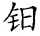
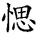
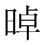
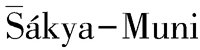

《奔流》编校后记[315]
一
创作自有他本身证明，翻译也有译者已经解释的。现在只将编后想到的另外的事，写上几句——
Iwan Turgenjew[316]早因为他的小说，为世所知，但论文甚少。这一篇《 Hamlet und Don Quichotte》[317]是极有名的，我们可以看见他怎样地观察人生。《 Hamlet》 中国已有译文，无须多说；《 Don Quichotte》 则只有林纾[318]的文言译，名《魔侠传》，仅上半部，又是删节过的。近两年来，梅川[319]君正在大发《 Don Quixote》 翻译热，但愿不远的将来，中国能够得到一部可看的译本，即使不得不略去其中的闲文也好。
《 Don Quixote》 的书虽然将近一千来页，事迹却很简单，就是他爱看侠士小说，因此发了游侠狂，硬要到各处去除邪惩恶，碰了种种钉子，闹了种种笑话，死了；临死才回复了他的故我。所以Turgenjew取毫无烦闷，专凭理想而勇往直前去做事的为“Don Quixote type”[320]，来和一生瞑想，怀疑，以致什么事也不能做的Hamlet相对照。后来又有人和这专凭理想的“Don Quixoteism式”相对，称看定现实，而勇往直前去做事的为“Marxism式”。中国现在也有人嚷些什么“Don Quixote”了，[321]但因为实在并没有看过这一部书，所以和实际是一点不对的。
《大旱的消失》[322]是Essay，作者的底细，我不知道，只知道是1902年死的。Essay本来不容易译，在此只想绍介一个格式。将来倘能得到这一类的文章，也还想登下去。
跋司珂（Vasco）族是古来住在西班牙和法兰西之间的Pyrenees[323]山脉两侧的大家视为世界之谜的人种。巴罗哈（Pio Baroja y Nessi）[324]就禀有这族的血液，以一八七二年十二月廿八日，生于靠近法境的圣舍跋斯丁市。原是医生，也做小说，两年后，便和他的哥哥Ricardo[325]到马德里开面包店去了，一共开了六年。现在Ricardo是有名的画家；他是最独创底的作家，早和Vicente Blasco Ibáñez[326]并称现代西班牙文坛的巨擘。他的著作至今大约有四十种，多是长篇。这里的小品四篇[327]，是从日本的《海外文学新选》第十三编《跋司珂牧歌调》内，永田宽定[328]的译文重翻的；原名《 Vidas Sombrias》[329]，因为所写的是跋司珂族的性情，所以仍用日译的题目。
今年一说起“近视眼看匾”来，似乎很有几个自命批评家郁郁不乐，又来大做其他的批评。[330]为免去蒙冤起见，只好特替作者在此声明几句：这故事原是一种民间传说，作者取来编作“狂言”样子，[331]还在前年的秋天，本豫备登在《波艇》[332]上的。倘若其中仍有冒犯了批评家的处所，那实在是老百姓的眼睛也很亮，能看出共通的暗病的缘故，怪不得传述者的。
俄国的关于文艺的争执，曾有《苏俄的文艺论战》[333]介绍过，这里的《苏俄的文艺政策》[334]，实在可以看作那一部的续编。如果看过前一书，则看起这篇来便更为明了。序文上虽说立场有三派的不同，然而约减起来，不过是两派。即对于阶级文艺，一派偏重文艺，如瓦浪斯基[335]等，一派偏重阶级，是《那巴斯图》[336]的人们；Bukharin[337]们自然也主张支持劳动阶级作家的，但又以为最要紧的是要有创作。发言的人们之中，几个是委员，如Voronsky，Bukharin，Iakovlev，Trotsky，Lunacharsky[338]等；也有“锻冶厂”[339]一派，如Pletnijov[340]；最多的是《那巴斯图》的人们，如Vardin，Lelevitch，Averbach，Rodov，Besamensky[341]等，译载在《苏俄的文艺论战》里的一篇《文学与艺术》后面，都有署名在那里。
《那巴斯图》派的攻击，几乎集中于一个Voronsky，《赤色新地》[342]的编辑者；对于他的《作为生活认识的艺术》，Lelevitch曾有一篇《作为生活组织的艺术》，引用布哈林的定义，以艺术为“感情的普遍化”的方法，并且指摘Voronsky的艺术论，乃是超阶级底的。这意思在评议会[343]的论争上也可见。但到后来，藏原惟人[344]在《现代俄国的批评文学》中说，他们两人之间的立场似乎有些接近了，Voronsky承认了艺术的阶级性之重要，Lelevitch的攻击也较先前稍为和缓了。现在是Trotsky，Radek[345]都已放逐，Voronsky大约也退职，状况也许又很不同了罢。
从这记录中，可以看见在劳动阶级文学大本营的俄国的文学的理论和实际，于现在的中国，恐怕是不为无益的。其中有几个空字，是原译本如此，因无别国译本，不敢妄补，倘有备着原书，通函见教，或指正其错误的，必当随时补正。
一九二八年六月五日，鲁迅。
二
Rudolf Lindau的《幸福的摆》[346]，全篇不过两章，因为纸数的关系，只能分登两期了。篇末有译者附记，以为“小说里有一种Kosmopolitisch[347]的倾向，同时还有一种厌世的东洋色彩”，这是极确凿的。但作者究竟是德国人，所以也终于不脱日耳曼气，要绘图立说，来发明“幸福的摆”，自视为生路，而其实又是死因。我想，东洋思想的极致，是在不来发明这样的“摆”，不但不来，并且不想；不但不想到“幸福的摆”，并且连世间有所谓“摆”这一种劳什子也不想到。这是令人长寿平安，使国古老拖延的秘法。老聃作五千言，释迦有恒河沙数说[348]，也还是东洋人中的“好事之徒”也。
奥国人René Fueloep-Miller[349]的叙述苏俄状况的书，原名不知道是什么，英译本曰《 The Mind and Face of Bolshevism》，今年上海似乎到得很不少。那叙述，虽说是客观的，然而倒是指摘缺点的地方多，惟有插画二百余，则很可以供我们的参考，因为图画是人类共通的语言，很难由第三者从中作梗的。可惜有些“艺术家”，先前生吞“琵亚词侣”，活剥蕗谷虹儿，[350]今年突变为“革命艺术家”，早又顺手将其中的几个作家撕碎了。这里翻印了两张，都是I.Annenkov[351]所作的画像；关于这画像，著者这样说——
“……其中主要的是画家Iuanii Annenkov。他依照未来派艺术家的原则工作，且爱在一幅画上将各刹那并合于一件事物之中，但他设法寻出一个为这些原质的综合。他的画像即意在‘由一个人的传记里，抄出脸相的各种表现来’。俄国的批评家特别称许他的才能在于将细小微末的详细和画中的实物发生关连，而且将这些制成更加恳切地显露出来的性质。他并不区别有生和无生，对于他的题目的周围的各种琐事，他都看作全体生活的一部分。他爱一个人的所有物，这生命的一切细小的碎片；一个脸上的各个抓痕，各条皱纹，或一个赘疣，都自有它的意义的。”
那Maxim Gorky[352]的画像，便是上文所讲的那些的好例证。他背向西欧的机械文明，面对东方，佛像表印度，磁器表中国，赤色的地方，旗上明写着“R.S.F.S.R.”[353]，当然是“俄罗斯苏维埃联邦社会主义共和国”了，但那颜色只有一点连到Gorky的脑上，也许是含有不满之意的罢——我想。这像是一九二○年作，后三年，Gorky便往意大利去了，今年才大家嚷着他要回去。
N.Evreinov[354]的画像又是一体，立方派[355]的手法非常浓重的。Evreinov是俄国改革戏剧的三大人物之一，我记得画室先生译的《新俄的演剧和跳舞》[356]里，曾略述他的主张。这几页“演剧杂感”，论人生应该以意志修改自然，虽然很豪迈，但也仍当看如何的改法，例如中国女性的修改其足，便不能和胡蝶结相提并论了。
这回登载了Gorky的一篇小说，一篇关于他的文章，[357]一半还是由那一张画像所引起的，一半是因为他今年六十岁。听说在他的本国，为他所开的庆祝会，是热闹极了；我原已译成了一篇昇曙梦的《最近的Gorky》说得颇详细，但也还因为纸面关系，不能登载，且待下几期的余白罢。
一切事物，虽说以独创为贵，但中国既然是世界上的一国，则受点别国的影响，即自然难免，似乎倒也无须如此娇嫩，因而脸红。单就文艺而言，我们实在还知道得太少，吸收得太少。然而一向迁延，现在单是绍介也来不及了。于是我们只好这样：旧的呢，等他五十岁，六十岁……大寿，生后百年阴寿，死后N年忌辰时候来讲；新的呢，待他得到诺贝尔奖金[358]。但是还是来不及，倘是月刊，专做庆吊的机关也不够。那就只好挑几个于中国较熟悉，或者较有意义的来说说了。
生后一百年的大人物，在中国又较耳熟的，今年就有两个：Leov Tolstoy和Henrik Ibsen[359]。Ibsen的著作，因潘家洵[360]先生的努力，中国知道的较多。本刊下期就想由语堂[361]，达夫，梅川，我，译上几篇关于他的文章，如H.Ellis，G.Brandes，E.Roberts，L.Aas，有岛武郎[362]之作；并且加几幅图像，自年青的Ibsen起，直到他的死尸，算作一个纪念。
一九二八年七月四日，鲁迅。
三
前些时，偶然翻阅日本青木正儿[363]的《支那文艺论丛》，看见在一篇《将胡适漩在中心的文学革命》里，有云——
“民国七年（1918）六月，《新青年》突然出了《易卜生号》。这是文学底革命军进攻旧剧的城的鸣镝。那阵势，是以胡将军的《易卜生主义》为先锋，胡适罗家伦共译的《娜拉》（至第三幕），陶履恭的《国民之敌》和吴弱男的《小爱友夫》（各第一幕）为中军，袁振英的《易卜生传》为殿军，勇壮地出阵。他们的进攻这城的行动，原是战斗的次序，非向这里不可的，但使他们至于如此迅速地成为奇兵底的原因，却似乎是这样——因为其时恰恰昆曲在北京突然盛行，所以就有对此叫出反抗之声的必要了。那真相，征之同的翌月号上钱玄同君之所说（随感录十八），漏着反抗底口吻，是明明白白的。……”
但何以大家偏要选出Ibsen来呢？如青木教授在后文所说，因为要建设西洋式的新剧，要高扬戏剧到真的文学底地位，要以白话来兴散文剧，还有，因为事已亟矣，便只好先以实例来刺戟天下读书人的直感：这自然都确当的。但我想，也还因为Ibsen敢于攻击社会，敢于独战多数，那时的绍介者，恐怕是颇有以孤军而被包围于旧垒中之感的罢，现在细看墓碣，还可以觉到悲凉，然而意气是壮盛的。
那时的此后虽然颇有些纸面上的纷争，但不久也就沉寂，戏剧还是那样旧，旧垒还是那样坚；当时的《时事新报》[364]所斥为“新偶像”者，终于也并没有打动一点中国的旧家子的心。后三年，林纾将“Gengangere”译成小说模样，名曰《梅孽》——但书尾校者的按语，却偏说“此书曾由潘家洵先生编为戏剧，名曰《群鬼》”——从译者看来，Ibsen的作意还不过是这样的——
“此书用意甚微：盖劝告少年，勿作浪游，身被隐疾，肾宫一败，生子必不永年。……余恐读者不解，故弁以数言。”
然而这还不算不幸。再后几年，则恰如Ibsen名成身退，向大众伸出和睦的手来一样，先前欣赏那汲Ibsen之流的剧本《终身大事》[365]的英年，也多拜倒于《天女散花》，《黛玉葬花》的台下了。
不知是有意呢还是偶然，潘家洵先生的《 Hedda Gabler》[366]的译本，今年突然在《小说月报》上发表了，计算起来，距作者的诞生是一百年，距《易卜生号》[367]的出版已经满十年。我们自然并不是要继《新青年》的遗踪，不过为追怀这曾经震动一时的巨人起见，也翻了几篇短文[368]，聊算一个记念。因为是短文的杂集，系统是没有的。但也略有线索可言：第一篇可略知Ibsen的生平和著作；第二篇叙述得更详明；第三篇将他的后期重要著作，当作一大篇剧曲看，而作者自己是主人。第四篇是通叙他的性格，著作的琐屑的来由和在世界上的影响的，是只有他的老友G.Brandes才能写作的文字。第五篇则说他的剧本所以为英国所不解的缘故，其中有许多话，也可移赠中国的。可惜他的后期著作，惟Brandes略及数言，没有另外的详论，或者有岛武郎的一篇《卢勃克和伊里纳的后来》[369]，可以稍弥缺憾的罢。这曾译载在本年一月的《小说月报》上，那意见，和Brandes的相同。
“人”第一，“艺术底工作”第一呢？这问题，是在力作一生之后，才会发生，也才能解答。独战到底，还是终于向大家伸出和睦之手来呢？这问题，是在战斗一生之后，才能发生，也才能解答。不幸Ibsen将后一问解答了，他于是尝到“胜者的悲哀”。
世间大约该还有从集团主义的观点，来批评Ibsen的论文罢，无奈我们现在手头没有这些，所以无从绍介。这种工作，以待“革命的智识阶级”及其“指导者”罢。
此外，还想将校正《文艺政策》时所想到的说几句：
托罗兹基是博学的，又以雄辩著名，所以他的演说，恰如狂涛，声势浩大，喷沫四飞。但那结末的豫想，其实是太过于理想底的——据我个人的意见。因为那问题的成立，几乎是并非提出而是袭来，不在将来而在当面。文艺应否受党的严紧的指导的问题，我们且不问；我觉得耐人寻味的，是在“那巴斯图”派因怕主义变质而主严，托罗兹基因文艺不能孤生而主宽的问题。许多言辞，其实不过是装饰的枝叶。这问题看去虽然简单，但倘以文艺为政治斗争的一翼的时候，是很不容易解决的。
一九二八年八月十一日，鲁迅。
四
有岛武郎是学农学的，但一面研究文艺，后来就专心从事文艺了。他的《著作集》，在生前便陆续辑印，《叛逆者》是第四辑，内收关于三个文艺家的研究[370]；译印在这里的是第一篇。
以为中世纪在文化上，不能算黑暗和停滞，以为罗丹[371]的出现，是再兴戈谛克的精神[372]：都可以见作者的史识。当这第四辑初出时候，自己也曾翻译过，后来渐觉得作者的文体，移译颇难，又念中国留心艺术史的人还很少，印出来也无用，于是没有完工，放下了。这回金君[373]却勇决地完成了这工作，是很不易得的事，就决计先在《奔流》上发表，顺次完成一本书。但因为对于许多难译的文句，先前也曾用过心，所以遇有自觉较妥的，便参酌了几处，出版期迫，不及商量，这是希望译者加以原宥的。
要讲罗丹的艺术，必须看罗丹的作品，——至少，是作品的影片。然而中国并没有这一种书。所知道的外国文书，图画尚多，定价较廉，在中国又容易入手的，有下列的二种——
《 The Art of Rodin.》 64 Reproductions.Introduction by Louis Weinberg.《 Modern Library》 第41本。95 cents net.美国纽约Boni and Liveright，Inc.出版。[374]
《 Rodin.》 高村光太郎[375]著。《Ars 美术丛书》第二十五编。特制本一圆八十钱，普及版一圆。日本东京Ars社出版。
罗丹的雕刻，虽曾震动了一时，但和中国却并不发生什么关系地过去了。后起的有Ivan Mestrovic[376]（1883年生），称为塞尔维亚的罗丹，则更进，而以太古底情热和酷烈的人间苦为特色的，曾见英国和日本，都有了影印的他的雕刻集。最近，更有Konenkov[377]，称为俄罗斯的罗丹，但与罗丹所代表是西欧的有产者不同，而是东欧的劳动者。可惜在中国也不易得到资料，我只在昇曙梦编辑的《新露西亚美术大观》里见过一种木刻，是装饰全俄农工博览会内染织馆的《女工》。
一九二八年九月十五夜，鲁迅。
五
本月中因为有印刷局的罢工，这一本的印成，大约至少要比前四本迟十天了。
《她的故乡》[378]是从北京寄来的，并一封信，其中有云：
“这篇小文是我在二年前，从《 World's Classics》 之‘Selected Modern English Essays’里无意中译出的，译后即搁在书堆下；前日在北海图书馆看到W.H.Hudson的集子十多大本，觉得很惊异。然而他的大著我仍然没有细读过，虽然知道他的著作有四种很著名。……
“作者的事情，想必已知？我是不知道，只能从那选本的名下，知他生于一八四一，死于一九二二而已。
“末了，还有一极其微小的事要问：《大旱之消失》的作者，《编校后记》上说是一九○二年死的，然而我看《 World's Classics》 关于他的生死之注，是：1831—1913，这不知究竟怎样？”
W.H.Hudson的事情，我也不知道。新近得到一本G.Sampson增补的S.A.Brooke所编《 Primer of English Literature》[379]，查起来，在第九章里，有下文那样的几句——
“Hudson在《 Far Away and Long Ago》[380]中，讲了在南美洲的他的青年时代事，但于描写英国的鸟兽研究，以及和自然界最为亲近的农夫等，他也一样地精工。仿佛从丰饶的心中，直接溢出似的他的美妙而平易的文章，在同类中，最为杰出。《 Green Mansions》，《 The Naturalist in La Plata》，《 The Purple Land》，《 A Shepherd's Life》 等，是在英文学中，各占其地位的。”
再查《蔷薇》的作者P.Smith[381]，没有见；White[382]却有的，在同章中的“后期维多利亚朝的小说家”条下，但只有这几句，就是——
“‘Mark Rutherford’（即Wm.Hale White）的描写非国教主义者生活的阴郁的小说，是有古典之趣的文章，表露着英国人心的一面的。”
至于生卒之年，那是《 World's Classics》 上的对，我写后记时，所据的原也是这一本书，不知怎地却弄错了。
近来时或收到并不连接的期刊之类，其中往往有关于我个人或和我有关的刊物的文章，但说到《奔流》者很少。只看见两次。一，是说译著以个人的趣味为重，所以不行。这是真的。《奔流》决定底地没有这力量，会每月选定全世界上有世界的意义的文章，汇成一本，或者满印出有世界的意义的作品来。说到“趣味”，那是现在确已算一种罪名了，但无论人类底也罢，阶级底也罢，我还希望总有一日弛禁，讲文艺不必定要“没趣味”。又其一，是说《奔流》的“执事者都是知名的第一流人物”，“选稿也许是极严吧？而于著，译，也分得极为明白，不仅在《奔流》中目录，公布着作译等字样，即是在《北新》，《语丝》……以及一切旁的广告上，也是如此。”但
“汉君作的《一握泥土》，实实在在道道地地的的确确是‘道地’地从翻译而来的。……原文不必远求西版书，即在商务出版的《 College English Reading》[383]中就有。题目是：
《 A Handful of Clay》
作者是Henry Van Dyke。这种小错误，其实不必吹毛求疵般斤斤计较，不过《奔流》既然如此地分得明白，那末译而曰作，似乎颇有掠美之嫌，故敢代为宣布。此或可使主编《奔流》的先生，小心下一回耳。”
其实，《奔流》之在目录及一切广告上声明译作，倒是小心之过，因为恐怕爱读创作而买时未暇细看内容的读者，化了冤钱，价又不便宜，便定下这一种办法，竟不料又弄坏了。但这回的译作不分，却因编者的“浅薄”，一向没有读过那一种“Reading”之类，也未见别的译文，投稿上不写原作者名，又不称译，便以为是做的，简直当创作看了，“掠美”的坏意思，自以为倒并没有的。不过无论如何小心，此后也难保再没有这样的或更大的错误，那只好等读者的指摘，检切要的在次一本中订正了。
顺便还要说几句别的话。诸位投稿者往往因为一时不得回信，给我指示，说编辑者应负怎样的责任。那固然是的。不过所谓奔流社的“执事者”，其实并无和这一种堂皇名号相副的大人物；就只有两三个人，来译，来做，来看，来编，来校，搜材料，寻图画，于是信件收送，便只好托北新书局代办。而那边人手又少，十来天送一次，加上本月中邮局的罢工积压，所以催促和训斥的信，好几封是和稿件同到的。无可补救。各种惠寄的文稿及信件，也因为忙，未能壹壹答复，这并非自恃被封为“知名的第一流人物”之故，乃是时光有限，又须谋生，若要周到，便没有了性命，也编不成《奔流》了。这些事，倘肯见谅，是颇望见谅的。因为也曾想过许多回，终于没有好方法，只能这样的了。
一九二八年十月二十六日，鲁迅。
六
编目的时候，开首的四篇诗[384]就为难，因为三作而一译，真不知用怎样一个动词好。幸而看见桌上的墨，边上印着“曹素功监制”字样，便用了这“制”字，算是将“创作”和“翻译”都包括在内，含混过去了。此外，能分清的，还是分清。
这一本几乎是三篇译作的天下，中间夹着三首译诗，不过是充充配角的。而所以翻译的原因，又全是因为插画，那么，诗之不关重要，也就可想而知了。第一幅的作者Arthur Rackham[385]是英国作插画颇颇有名的人，所作的有《 Æsop's Fables》 的图画等多种，这幅从《 The Springtide of Life》[386]里选出，原有彩色，我们的可惜没有了。诗的作者Algernon Charles Swinburne（1837—1909）是维多利亚朝末期的诗人，世称他最受欧洲大陆的影响，但从我们亚洲人的眼睛看来，就是这一篇，也还是英国气满满的。
《跳蚤》的木刻者R.Dufy[387]有时写作Dufuy，是法国有名的画家，也擅长装饰；而这《禽虫吟》的一套木刻尤有名。集的开首就有一篇诗赞美他的木刻的线的崇高和强有力；L.Pichon[388]在《法国新的书籍图饰》中也说——
“……G.Apollinaire所著《 Le Bestiaire au Cortége d' Orphée》 的大的木刻，是令人极意称赞的。是美好的画因的丛画，作成各种殊别动物的相沿的表象。由它的体的分布和线的玄妙，以成最佳的装饰的全形。”
这书是千九百十一年，法国Deplanch[389]出版；日本有堀口大学[390]译本，名《动物诗集》，第一书房（东京）出版的，封余的译文，即从这本转译。
蕗谷虹儿的画，近一两年曾在中国突然造成好几个时行的书籍装饰画家；这一幅[391]专用白描，而又简单，难以含胡，所以也不被模仿，看起来较为新鲜一些。
一九二八年十一月十八日，鲁迅。
七
生存八十二年，作文五十八年，今年将出全集九十三卷的托尔斯泰，即使将一本《奔流》都印了关于他的文献的目录，恐怕尚且印不下，更何况登载记念的文章。但只有这样的材力便只能做这样的事，所以虽然不过一本小小的期刊，也还是趁一九二八年还没有全完的时候，来作一回托尔斯泰诞生后百年的记念。
关于这十九世纪的俄国的巨人，中国前几年虽然也曾经有人介绍，今年又有人叱骂，然而他于中国的影响，其实也还是等于零。他的三部大著作中，《战争与和平》至今无人翻译；传记是只有Ch.Sarolea[392]的书的文言译本和一小本很不完全的《托尔斯泰研究》[393]。前几天因为要查几个字，自己和几个朋友走了许多外国书的书店，终竟寻不到一部横文的他的传记。关于他的著作，在中国是如此的。说到行为，那是更不相干了。我们有开书店造洋房的革命文豪，没有分田给农夫的地主——因为这也是“浅薄的人道主义”；有软求“出版自由”的“著作家”兼店主，没有写信直斥皇帝的胡涂虫[394]——因为这是没有用的，倒也并非怕危险。至于“无抵抗”呢，事实是有的，但并非由于主义，因事不同，因人不同，或打人的嘴巴，或将嘴巴给人打，倘以为会有俄国的许多“灵魂的战士”（Doukhobor）[395]似的，宁死不当兵卒，那实在是一种“杞忧”。
所以这回是意在介绍几篇外国人——真看过托尔斯泰的作品，明白那历史底背景的外国人——的文字，可以看看先前和现在，中国和外国，对于托尔斯泰的评价是怎样的不同。但自然只能从几个译者所见到的书报中取材，并非说惟这几篇是现在世间的定论。
首先当然要推Gorky的《回忆杂记》[396]，用极简洁的叙述，将托尔斯泰的真诚底和粉饰的两面，都活画出来，仿佛在我们面前站着。而作者Gorky的面目，亦复跃如。一面可以见文人之观察文人，一面可以见劳动出身者和农民思想者的隔膜之处。达夫先生曾经提出一个小疑问，是第十一节里有Nekassov这字，也许是错的，美国版的英书，往往有错误。我因为常见俄国文学史上有Nekrassov[397]，便于付印时候改了，一面则寻访这书的英国印本，来资印证，但待到三校已完，而英国本终于得不到，所以只得暂时存疑，如果所添的“r”是不对的，那完全是编者的责任。
第一篇通论托尔斯泰的一生和著作的，是我所见的一切中最简洁明了的文章，从日本井田孝平[398]的译本《最新露西亚文学研究》重译；书名的英译是《 Sketches for the History of Recent Russian Literature》，但不知全书可有译本。原本在一九二三年出版；著者先前是一个社会民主党员，屡被拘囚，终遭放逐，研究文学便是在狱中时的工作。一九○九年回国，渐和政治离开，专做文笔劳动和文学讲义的事了。这书以Marxism为依据，但侧重文艺方面，所以对于托尔斯泰的思想，只说了“反对这极端底无抵抗主义而起的，是Korolienko[399]和Gorki，以及革命底俄国”这几句话。
从思想方面批评托尔斯泰，可以补前篇之不足的，是A.Lunacharski的讲演[400]。作者在现代批评界地位之重要，已可以无须多说了。这一篇虽讲在五年之前，其目的多在和政敌“少数党”[401]战斗，但在那里面，于非有产阶级底唯物主义（Marxism）和非有产阶级底精神主义（Tolstoism）的不同和相碍，以及Tolstoism的缺陷及何以有害于革命之点，说得非常分明，这才可以照见托尔斯泰，而且也照见那以托尔斯泰为“卑污的说教者”[402]的中国创造社旧旗下的“文化批判”者。
Lvov-Rogachevski[403]以托尔斯泰比卢梭[404]，Lunacharski的演说里也这样。近来看见Plekhanov的一篇论文《 Karl Marx和Leo Tolstoi》[405]的附记里，却有云，“现今开始以托尔斯泰来比卢梭了，然而这样的比较，不过得到否定底的结论。卢梭是辩证论者（十八世纪少数的辩证论者之一人），而托尔斯泰则到死为止，是道地的形而上学者（十九世纪的典型底形而上学者的一人）。敢于将托尔斯泰和卢梭并列者，是没有读过那有名的《人类不平等起原论》或读而不懂的人所做的事。在俄国文献里，卢梭的辩证法底特质，在十二年前，已由札思律支[406]弄明白了。”三位都是马克斯学者的批评家，我则不但“根本不懂唯物史观”[407]，且未曾研究过卢梭和托尔斯泰的书，所以无从知道那一说对，但能附载于此，以供读者的参考罢了。
小泉八云[408]在中国已经很有人知道，无须绍介了。他的三篇讲义，为日本学生而讲，所以在我们看去，也觉得很了然。其中含有一个很够研究的问题，是句子为一般人所不懂，是否可以算作好文学。倘使为大众所不懂而仍然算好，那么这文学也就决不是大众的东西了。托尔斯泰所论及的这一层，确是一种卓识。但是住在都市里的小资产阶级，实行是极难的，先要“到民间去”[409]，用过一番苦功。否则便会像创造社的革命文学家一样，成仿吾刚大叫到劳动大众间去安慰指导他们（见本年《创造月刊》）[410]，而“诗人王独清教授”又来减价，只向“革命的印贴利更追亚”说话（见《我们》一号）[411]。但过了半年，居然已经悟出，修善寺温泉浴场[412]和半租界洋房中并无“劳动大众”，这是万分可“喜”的。
Maiski[413]的讲演也是说给外国人听的，所以从历史说起，直到托尔斯泰作品的特征，非常明了。日本人的办事真敏捷，前月底已有一本《马克斯主义者之所见的托尔斯泰》[414]出版，计言论九篇，但大抵是说他的哲学有妨革命，而技术却可推崇。这一篇的主意也一样，我想，自然也是依照“苏维埃艺术局”的纲领书的，所以做法纵使万殊，归趣却是一致。奖其技术，贬其思想，是一种从新估价运动，也是廓清运动。虽然似乎因此可以引出一个问题，是照此推论起来，技术的生命，长于内容，“为艺术的艺术”[415]，于此得到苏甦的消息。然而这还不过是托尔斯泰诞生一百年后的托尔斯泰论。在这样的世界上，他本国竟以记念观念相反的托尔斯泰的盛典普示世界，以他的优良之点讲给外人，其实是十分寂寞的事。到了将来，自然还会有不同的言论的。
托尔斯泰晚年的出奔，原因很复杂，其中的一部，是家庭的纠纷。我们不必看别的记录，只要看《托尔斯泰自己的事情》[416]一篇，便知道他的长子L.L.Tolstoi便是一个不满于父亲的亲母派。《回忆杂记》第二十七节说托尔斯泰喜欢盘问人家，如“你想我的儿子莱阿，是有才能的么？”的莱阿，便是他。末尾所记的To the doctor he would say：“All my arrangements must be destroyed.”尤为奇特，且不易解。托尔斯泰死掉之前，他的夫人没有进屋里去，作者又没有说这是医生所传述，所以令人觉得很可疑怪的。
末一篇[417]是没有什么大关系的，不过可以知道一点前年的Iasnaia Poliana的情形。
这回的插图，除卷面的一幅是他本国的印本，卷头的一幅从J.Drinkwater编的《 The Outline of Literature》[418]，他和夫人的一幅从《 Sphere》[419]取来的之外，其余七幅，都是出于德人Julius Hart的《托尔斯泰论》和日本译的《托尔斯泰全集》里的。这全集共六十本，每本一图，倘使挑选起来，该可以得到很适宜的插画，可惜我只有六本，因此其中便不免有所迁就了。卷面的像上可以看见Gorky看得很以为奇的手；耕作的图是Riepin[420]于一八九二年所作，颇为有名，本期的Lvov-Rogachevski和藏原惟人的文章里，就都提起它，还有一幅坐像，也是Riepin之作，也许将来可以补印。那一张谑画（Caricature）[421]，不知作者，我也看不大懂，大约是以为俄国的和平，维持只靠兵警，而托尔斯泰却在拆掉这局面罢。一张原稿，是可以印证他怎样有闲，怎样细致，和Dostoievski[422]的请女速记者做小说怎样两路的：一张稿子上，改了一回，删了两回，临末只剩了八行半了。
至于记念日的情形，在他本国的，中国已有记事登在《无轨列车》[423]上。日本是由日露艺术协会电贺全苏维埃对外文化联络协会；一面在东京读卖新闻[424]社讲堂上开托尔斯泰记念讲演会，有Maiski的演说，有Napron女士的Esenin[425]诗的朗吟。同时又有一个记念会，大约是意见和前者相反的人们所办的，仅看见《日露艺术》[426]上有对于这会的攻击，不知其详。
欧洲的事情，仅有赵景深[427]先生写给我一点消息——
“顷阅《伦敦麦考莱》十一月号，有这样几句话：‘托尔斯泰研究会安排了各种百年纪念的庆祝。十月末《黑暗的势力》和《教育之果》在艺术剧院上演。Anna Stannard将《 Anna Karenina》 改编剧本，亦将于十一月六日下午三时在皇家剧院上演。同日下午八时P.E.N.会将为庆祝托尔斯泰聚餐，Galsworthy亦在席云。’
“又阅《纽约时报》十月七号的《书报评论》，有法国纪念托尔斯泰的消息。大意说，托尔斯泰游历欧洲时，不大到法国去，因为他是主张为人生的艺术的，所以不大欢喜法国的文学。他在法国文学中最佩服三个人，就是Stendhal，Balzac和Flaubert。对于他们的后辈Maupassant，Mirbeau等，也还称赞。法国认识托尔斯泰是很早的，一八八四年即有《战争与和平》的法译本，一八八五年又有《 Anna Karenina》 和《忏悔》的法译本。M.Bienstock曾译过他的全集，可惜没有完。自从Eugène Melchior de Vogüe在一八八六年作了一部有名的《俄国小说论》，法国便普遍的知道托尔斯泰了。今年各杂志上更大大的著论介绍，其中有M.Rappoport很反对托尔斯泰的无抵抗主义，说他是个梦想的社会主义者。但大致说来，对于他还都是很崇敬的，罗曼罗兰对他依旧很是忠心，与以前做《托尔斯泰传》时一样。”
在中国，有《文学周报》和《文化战线》[428]，都曾为托尔斯泰出了记念号；十二月的《小说月报》上，有关于他的图画八幅和译著三篇。
一九二八年十二月二十三日，鲁迅记。
八
这一本校完之后，自己觉得并没有什么话非说不可。
单是，忽然想起，在中国的外人，译经书，子书的是有的，但很少有认真地将现在的文化生活——无论高低，总还是文化生活——绍介给世界。有些学者，还要在载籍里竭力寻出食人风俗的证据来。这一层，日本比中国幸福得多了，他们常有外客将日本的好的东西宣扬出去，一面又将外国的好的东西，循循善诱地输运进来。在英文学方面，小泉八云便是其一，他的讲义[429]，是多么简要清楚，为学生们设想。中国的研究英文，并不比日本迟，所接触的，是英文书籍多，学校里的外国语，又十之八九是英语，然而关于英文学的这样讲义，却至今没有出现。现在登载它几篇，对于看看英文，而未曾留心到史底关系的青年，大约是很有意义的。
先前的北京大学里，教授俄，法文学的伊发尔（Ivanov）和铁捷克（Tretiakov）[430]两位先生，我觉得却是善于诱掖的人，我们之有《苏俄的文艺论战》和《十二个》[431]的直接译本而且是译得可靠的，就出于他们的指点之赐。现在是，不但俄文学系早被“正人君子”们所击散，连译书的青年也不知所往了。
大约是四五年前罢，伊发尔先生向我说过，“你们还在谈Sologub[432]之类，以为新鲜，可是这些名字，从我们的耳朵听起来，好像已经是一百来年以前的名字了。”我深信这是真的，在变动，进展的地方，十年的确可以抵得我们的一世纪或者还要多。然而虽然对于这些旧作家，我们也还是不过“谈谈”，他的作品的译本，终于只有几篇短篇，那比较长些的有名的《小鬼》，至今并没有出版。
这有名的《小鬼》的作者梭罗古勃，就于去年在列宁格勒去世了，活了六十五岁。十月革命时，许多文人都往外国跑，他却并不走，但也没有著作，那自然，他是出名的“死的赞美者”，在那样的时代和环境里，当然做不出东西来的，做了也无从发表。这回译载了他的一篇短篇——也许先前有人译过的——并非说这是他的代表作，不过借此作一点记念。那所描写，我想，凡是不知道集团主义的饥饿者，恐怕多数是这样的心情。
一九二九年一月十八日，鲁迅。
九
这算是第一卷的末一本了，此后便是第二卷的开头。别的期刊不敢妄揣，但在《奔流》，却不过是印了十本，并无社会上所珍重的“夏历”过年一样，有必须大放爆竹的神秘的玄机。惟使内容有一点小小的结束，以便读者购阅的或停或续的意思，却是有的。然而现在还有《炸弹和征鸟》[433]未曾完结，不过这是在重要的时代，涉及广大的地域，描写多种状况的长篇，登在期刊上需要一年半载，也正是必然之势，况且每期所登也必有两三章，大概在大度的读者是一定很能够谅解的罢。
其次，最初的计画，是想，倘若登载将来要印成单行本的译作，便须全部在这里发表，免得读者再去买一本一部份曾经看过的书籍。但因为译作者的生活关系，这计画恐怕办不到了，纵有匿名的“批评家”以先在期刊上横横直直发表而后来集印成书为罪状，也没有法子。确是全部登完了的只有两种：一是《叛逆者》，一是《文艺政策》。
《叛逆者》本文三篇，是有岛武郎最精心结撰的短论文，一对于雕刻，二对于诗，三对于画；附录一篇，是译者所作；插画二十种，则是编者加上去的，原本中并没有。《文艺政策》原译本是这样完结了，但又见过另外几篇关于文艺政策的文章，倘再译了出来，一切大约就可以知道得更清楚。此刻正在想：再来添一个附录，如何呢？但一时还没有怎样的决定。
《文艺政策》另有画室先生的译本，去年就出版了。听说照例的创造社革命文学诸公又在“批判”，有的说鲁迅译这书是不甘“落伍”，有的说画室居然捷足先登[434]。其实我译这书，倒并非救“落”，也不在争先，倘若译一部书便免于“落伍”，那么，先驱倒也是轻松的玩意。我的翻译这书不过是使大家看看各种议论，可以和中国的新的批评家的批评和主张相比较。与翻刻王羲之[435]真迹，给人们可以和自称王派的草书来比一比，免得胡里胡涂的意思，是相仿佛的，借此也到“修善寺”温泉去洗澡，实非所望也。
又其次，是原想每期按二十日出版，没有迟误的，但竟延误了一个月。近时得到几位爱读者的来信，责以迟延，勉以努力。我们也何尝不想这样办；不过一者其中有三回增刊，共加添二百页，即等于十个月内，出了十一本的平常刊；二者这十个月中，是印刷局的两次停工和举国同珍的一回“夏历”岁首，对于这些大事，几个《奔流》同人除跳黄浦江之外，是什么办法也没有的。譬如要办上海居民所最爱看的“大出丧”，本来算不得乌托邦[436]的空想，但若脚色都回家拜岁去了，就必然底地出不出来。所以，据去年一年所积的经验，是觉得“凡例”上所说的“倘无意外障碍，定于每月中旬出版”的上一句的分量，实在着重起来了。
孙用先生寄来译诗[437]之后，又寄一篇作者《Lermontov小记》来。可惜那时第九本已经印好，不及添上了，现在补录在这里——
“密哈尔·古列维支·莱芒托夫（Mikhail Gurievitch Lermontov）在一八一四年十月十五日生于莫斯科，死于一八四一年七月廿七日。是一个俄国的诗人及小说家，被称为‘高加索的诗人’的，他曾有两次被流放于高加索（1837，1840），也在那儿因决斗而死。他的最有名的著作是小说《我们的时代的英雄》和诗歌《俄皇伊凡·华西里维支之歌》，《 Ismail-Bey》 及《魔鬼》等。”
韦素园先生有一封信，有几处是关于Gorky的《托尔斯泰回忆杂记》的，也摘录于下——
“读《奔流》七号上达夫先生译文，所记有两个疑点，现从城里要来一本原文的Gorky回忆托尔斯泰，解答如下：
1.《托尔斯泰回忆记》第十一节Nekassov确为Nekrassov之误。涅克拉梭夫是俄国十九世纪有名的国民诗人。
2.‘Volga宣教者’的Volga是河名，中国地理书上通译为涡瓦河，在俄国农民多呼之为‘亲爱的母亲’，有人译为‘卑汙的说教者’，当系错误。不过此处，据Gorky《回忆杂记》第三十二节原文似应译为‘涡瓦河流域’方合，因为这里并不只Volga一个字，却在前面有一前置词（za）故也。
以上系根据彼得堡一九一九年格尔热宾出版部所印行的本子作答的，当不致有大误。不过我看信比杂记写得还要好。”
说到那一封信，我的运动达夫先生一并译出，实在也不只一次了。有几回，是诱以甘言，说快点译出来，可以好好的合印一本书，上加好看的图像；有一回，是特地将读者称赞译文的来信寄去，给看看读书界的期望是怎样地热心。见面时候谈起来，倒也并不如那跋文所说，暂且不译了，[438]但至今似乎也终于没有动手，这真是无可如何。现在索性将这情形公表出来，算是又一回猛烈的“恶毒”的催逼。
一九二九年三月二十五日，鲁迅记。
十
E.Dowden的关于法国的文学批评的简明扼要的论文，[439]在这一本里已经终结了，我相信于读者会有许多用处，并且连类来看英国的批评家对于批评的批评。
这回译了一篇野口米次郎[440]的《爱尔兰文学之回顾》，以译文而论，自然简直是续貂。但也很简明扼要，于爱尔兰文学运动的来因去果，是说得了了分明的；中国前几年，于Yeats，Synge[441]等人的事情和作品，曾经屡有绍介了，现在有这一篇，也许更可以帮助一点理解罢。
但作者是诗人，所以那文中有许多诗底的辞句，是无须赘说的。只有一端，当翻译完毕时，还想添几句话。那就是作者的“无论那一国的文学，都必须知道古代的文化和天才，和近代的时代精神有怎样的关系，而从这处所，来培养真生命的”的主张。这自然也并非作者一人的话，在最近，虽是最革命底国度里，也有搬出古典文章来之势，编印托尔斯泰全集还是小事，如Trotsky，且明说可以读Dante和Pushkin[442]，Lunacharski则以为古代一民族兴起时代的文艺，胜于近来十九世纪末的文艺。但我想，这是并非中国复古的两派——遗老的神往唐虞，遗少的归心元代——所能引为口实的——那两派的思想，虽然和Trotsky等截然不同，但觉得于自己有利时，我可以保证他们也要引为口实。现在的幻想中的唐虞，那无为而治之世，不能回去的乌托邦，那确实性，比到“阴间”去还稀少；至于元，那时东取中国，西侵欧洲，武力自然是雄大的，但他是蒙古人，倘以这为中国的光荣，则现在也可以归降英国，而自以为本国的国旗——但不是五色的[443]——“遍于日所出入处”了。
要之，倘若先前并无可以师法的东西，就只好自己来开创。拉旧来帮新，结果往往只差一个名目，拖《红楼梦》来附会十九世纪式的恋爱，所造成的还是宝玉，不过他的姓名是“少年威德”[444]，说《水浒传》里有革命精神，因风而起者便不免是涂面剪径的假李逵——但他的雅号也许却叫作“突变”[445]。
卷末的一篇虽然不过是对于Douglas Percy Bliss的《 A History of Wood-Engraving》 的批评，[446]但因为可以知道那一本书——欧洲木刻经过的大略，所以特地登载了。本卷第一，二两册上，还附有木刻的插图，作为参考；以后也许还要附载，以见各派的作风。我的私见，以为在印刷术未曾发达的中国，美术家倘能兼作木刻，是颇为切要的，因为容易印刷而不至于很失真，因此流布也能较广远，可以不再如巨幅或长卷，固定一处，仅供几个人的鉴赏了。又，如果刻印章的人，以铁笔兼刻绘画，大概总也能够开一新生面的。
但虽是翻印木刻，中国现在的制版术和印刷术，也还是不行，偶而看看，倒也罢了，如要认真研究起来，则几张翻印的插图，真是贫窭到不足靠，归根结蒂，又只好说到去看别国的书了。Bliss的书，探究历史是好的，倘看作品，却不合宜，因为其中较少近代的作品。为有志于木刻的人们起见，另举两种较为相宜的书在下面——
《 The Modern Woodcut》 by Herbert Furst，published by John Lane，London.42s.1924.
《The Woodcut of To-day at Home and Abroad》，commentary by M.C.Talaman，published by The Studio Ltd.，London.7s.6d.1927.[447]
上一种太贵；下一种原是较为便宜，可惜今年已经卖完，旧本增价到21s.了。但倘若随时留心着欧美书籍广告，大概总有时可以遇见新出的相宜的本子。
一九二九年五月十日，鲁迅记。
十一
A Mickiewicz[448]（1798—1855）是波兰在异族压迫之下的时代的诗人，所鼓吹的是复仇，所希求的是解放，在二三十年前，是很足以招致中国青年的共鸣的。我曾在《摩罗诗力说》里，讲过他的生涯和著作，后来收在论文集《坟》中；记得《小说月报》很注意于被压迫民族的文学的时候，也曾有所论述，但我手头没有旧报，说不出在那一卷那一期了。最近，则在《奔流》本卷第一本上，登过他的两篇诗[449]。但这回绍介的主意，倒在巴黎新成的雕像[450]；《青春的赞颂》[451]一篇，也是从法文重译的。
I.Matsa[452]是匈牙利的出亡在外的革命者，现在以科学底社会主义的手法，来解剖西欧现代的艺术，著成一部有名的书，曰《现代欧洲的艺术》。这《艺术及文学的诸流派》便是其中的一篇，将各国的文艺，在综合底把握之内，加以检查。篇页也并不多，本应该一期登毕，但因为后半篇有一幅图表，一时来不及制版，所以只好分为两期了。
这篇里所举的新流派，在欧洲虽然多已成为陈迹，但在中国，有的却不过徒闻其名，有的则连名目也未经介绍。在这里登载这一篇评论，似乎颇有太早，或过时之嫌。但我以为是极有意义的。这是一种豫先的消毒，可以“打发”[453]掉只偷一些新名目，以自夸耀，而其实毫无实际的“文豪”。因为其中所举的各主义，倘不用科学之光照破，则可借以藏拙者还是不少的。
Lunacharski说过，文艺上的各种古怪主义，是发生于楼顶房上的文艺家，而旺盛于贩卖商人和好奇的富翁的。那些创作者，说得好，是自信很强的不遇的才人，说得坏，是骗子。[454]但此说嵌在中国，却只能合得一半，因为我们能听到某人在提倡某主义——如成仿吾之大谈表现主义，高长虹[455]之以未来派自居之类——而从未见某主义的一篇作品，大吹大擂地挂起招牌来，孪生了开张和倒闭，所以欧洲的文艺史潮，在中国毫未开演，而又像已经一一演过了。
得到汉口来的一封信，是这样写着的：
“昨天接到北新寄来的《奔流》二卷二期，我于匆匆流览了三幅插画之后，便去读《编辑后记》——这是我的老脾气。在这里面有一句话使我很为奋兴，那便是：‘……又，如果刻印章的人，以铁笔兼刻绘画，大概总也能够开一新生面的。’我在学校的最后一年和离校后的失业时期颇曾学学过刻印，虽然现在已有大半年不亲此道了。其间因偶然尝试，曾刻过几颗绘画的印子，但是后来觉得于绘画没有修养，很少成功之望，便不曾继续努力。不过所刻的这几颗印子，却很想找机会在什么地方发表一下。因此曾寄去给编《美育》的李金朆先生，然而没有回音。第二期《美育》又增了价，要二元一本，不知里面有否刊登。此外亦曾寄到要出画报的汉口某日报去，但是画报没有出，自然更是石沉大海了。倒是有一家小报很承他们赞赏，然而据说所刻的人物大半是‘俄国人’，不妥，劝我刻几个党国要人的面像；可恨我根本就不曾想要刻要人们的尊容。碰了三次壁，我只好把这几枚印子塞到箱子底里去了。现在见到了你这句话，怎不令我奋兴呢？兹特冒盛暑在蒸笼般的卧室中找出这颗印子钤奉一阅。如不笑其拙劣，能在《奔流》刊登，则不胜大欢喜也。
[456]谨上 七月十八日。”
从远远的汉口来了这样的一个响应，对于寂寞的我们，自然也给以很可感谢的兴奋的。《美育》[457]第二期我只在日报上见过目录，不记得有这一项。至于憾不刻要人的小报，则大约误以版画家为照相店了，只有照相店是专挂要人的放大像片的，现在隐然有取以相比之意，所以也恐怕并非真赏。不过这次可还要碰第四次的壁的罢。《奔流》版心太大而图版小，所以还是不相宜，或者就寄到《朝花旬刊》[458]去。但希望刻者告诉我一个易于认识的名字。
还有，《子见南子》[459]在山东曲阜第二师范学校排演，引起了一场“圣裔”控告，名人震怒的风潮。曾经搜集了一些公文之类，想作一个附录来发表，但这回为了页数的限制，已经不能排入，只好等别的机会或别的处所了。这或者就寄到《语丝》去。
读者诸君，再见罢。
鲁迅。八月十一日。
十二
豫计这一本的出版，和第四本当有整三个月的距离，读者也许要觉得生疏了。这迟延的原因，其一，据出版所之说，是收不回成本来，那么，这责任只好归给各地贩卖店的乾没……。但现在总算得了一笔款，所以就尽其所有，来出一本译文的增刊。
增刊偏都是译文，也并无什么深意，不过因为所有的稿件，偏是译文多，整理起来，容易成一个样子。去年挂着革命文学大旗的“青年”名人，今年已很有些化为“小记者”，有一个在小报上鸣不平道：“据书业中人说，今年创作的书不行了，翻译的而且是社会科学的那才好销。上海一般专靠卖小说吃饭的大小文学家那才倒霉呢！如果这样下去，文学家便非另改行业不可了。小记者的推测，将来上海的文学家怕只留着一班翻译家了。”这其实只在说明“革命文学家”之所以化为“小记者”的原因。倘若只留着一班翻译家，——认真的翻译家，中国的文坛还不算堕落。但《奔流》如果能出下去，还是要登创作的，别一小报说：“白薇女士近作之《炸弹与征鸟》，连刊《奔流》二卷各期中，近闻北新书局即拟排印单行本发卖，自二卷五期起，停止续刊。”编者却其实还没有听见这样的新闻，也并未奉到北新书局饬即“停止续刊”的命令。
对于这一本的内容，编者也没有什么话可说，因为世界上一切文学的好坏，即使是“鸟瞰”，恐怕现在只有“赵景深氏”知道。[460]况且译者在篇末大抵附有按语，便无须编者来多谈。但就大体而言，全本是并无一致的线索的，首先是五个作家的像，评传，和作品，或先有作品而添译一篇传，或有了评传而搜求一篇文或诗。这些登载以后，便将陆续积存，以为可以绍介的译文，选登几篇在下面，到本子颇有些厚了才罢。
收到第一篇《彼得斐行状》[461]时，很引起我青年时的回忆，因为他是我那时所敬仰的诗人。在满洲政府之下的人，共鸣于反抗俄皇的英雄，也是自然的事。但他其实是一个爱国诗人，译者大约因为爱他，便不免有些掩护，将“nation”译作“民众”[462]，我以为那是不必的。他生于那时，当然没有现代的见解，取长弃短，只要那“斗志”能鼓动青年战士的心，就尽够了。
绍介彼得斐最早的，有半篇译文叫《裴彖飞诗论》，登在二十多年前在日本东京出版的杂志《河南》上，[463]现在大概是消失了。其次，是我的《摩罗诗力说》里也曾说及，后来收在《坟》里面。一直后来，则《沉钟》月刊上有冯至先生的论文[464]；《语丝》上有L.S.的译诗[465]，和这里的诗有两篇相重复。近来孙用先生译了一篇叙事诗《勇敢的约翰》，是十分用力的工作，可惜有一百页之多，《奔流》为篇幅所限，竟容不下，只好另出单行本子了。[466]
契诃夫[467]要算在中国最为大家所熟识的文人之一，他开手创作，距今已五十年，死了也满二十五年了。日本曾为他开过创作五十年纪念会，俄国也出了一本小册子，为他死后二十五年纪念，这里的插画，便是其中的一张。我就译了一篇觉得很平允的论文[468]，接着是他的两篇创作。《爱》是评论中所提及的，可作参考，倘再有《草原》和《谷间》，就更好了，然而都太长，只得作罢。《熊》这剧本，是从日本米川正夫译的《契诃夫戏曲全集》里译出的，也有曹靖华先生的译本，名《蠢货》，在《未名丛刊》中。俄国称蠢人为“熊”，盖和中国之称“笨牛”相类。曹译语气简捷，这译本却较曲折，互相对照，各取所长，恐怕于扮演时是很有用处的。米川的译本有关于这一篇的解题，译载于下——
“一八八八年冬，契诃夫在墨斯科的珂尔修剧场，看法国喜剧的翻案《对胜利者无裁判》的时候，心折于扮演粗暴的女性征服者这脚色的演员梭罗孚卓夫的本领，便觉到一种诱惑，要给他写出相像的脚色来。于是一任如流的创作力的动弹，乘兴而真是在一夜中写成的，便是这轻妙无比的《熊》一篇。不久，这喜剧便在珂尔修剧场的舞台上，由梭罗孚卓夫之手开演了，果然得到非常的成功。为了作这成功的记念，契诃夫便将这作品（的印本上，题了）献给梭罗孚卓夫。”
J.Aho[469]是芬兰的一个幽婉凄艳的作家，生长于严酷的天然物的环境中，后来是受了些法国文学的影响。《域外小说集》中曾介绍过一篇他的小说《先驱者》，写一对小夫妇，怀着希望去开辟荒林，而不能战胜天然之力，终于灭亡。如这一篇中的艺术家，感得天然之美而无力表现，正是同一意思。Aho 之前的作家Päivärinta的《人生图录》（有德译本在《 Reclam's Universal Bibliothek》 中）[470]，也有一篇写一个人因为失恋而默默地颓唐到老，至于作一种特别的跳舞供人玩笑，来换取一杯酒，待到他和旅客（作者）说明原因之后，就死掉了。这一种Type[471]，大约芬兰是常有的。那和天然的环境的相关，看F.Poppenberg的一篇《阿河的艺术》[472]就明白。这是很好的论文，虽然所讲的偏重在一个人的一部书，然而芬兰自然的全景和文艺思潮的一角，都描写出来了。达夫先生译这篇时，当面和通信里，都有些不平，连在本文的附记上，也还留着“怨声载道”的痕迹，[473]这苦楚我很明白，也很抱歉的，因为当初原想自己来译，后来觉得麻烦，便推给他了，一面也豫料他会“好，好，可以，可以”的担当去。虽然这种方法，很像“革命文学家”的自己浸在温泉里，却叫别人去革命一样，然而……倘若还要做几天编辑，这些“政策”，且留着不说破它罢。
Kogan教授的关于Gorky的短文[474]，也是很简要的；所说的他的作品内容的出发点和变迁，大约十分中肯。早年所作的《鹰之歌》有韦素园先生的翻译，收在《未名丛刊》之一的《黄花集》中。这里的信[475]却是近作，可以看见他的坦白和天真，也还很盛气。“机械的市民”其实也是坦白的人们，会照他心里所想的说出，并不涂改招牌，来做“狮子身中虫”[476]。若在中国，则一派握定政权以后，谁还来明白地唠叨自己的不满。眼前的例，就如张勋[477]在时，盛极一时的“遗老”“遗少”气味，现在表面上已经销声匿迹；《醒狮》之流[478]，也只要打倒“共产党”和“共产党的走狗”，而遥向首都虔诚地进“忠告”了。至于革命文学指导者成仿吾先生之逍遥于巴黎，“左翼文艺家”蒋光Y先生之养疴于日本（or青岛？）[479]，盖犹其小焉者耳。
V.Lidin[480]只是一位“同路人”，经历是平常的，如他的自传。别的作品，我曾译过一篇《竖琴》，载在去年一月的《小说月报》上。
东欧的文艺经七手八脚弄得糊七八遭了之际，北欧的文艺恐怕先要使读书界觉得新鲜，在事实上，也渐渐看见了作品的绍介和翻译，虽然因为近年诺贝尔奖金屡为北欧作者所得，于是不胜佩服之至，也是一种原因。这里绍介丹麦思潮的是极简要的一篇[481]，并译了两个作家的作品[482]，以供参考，别的作者，我们现在还寻不到可作标本的文章。但因为篇中所讲的是限于最近的作家，所以出现较早的如Jacobsen，Bang[483]等，都没有提及。他们变迁得太快，我们知道得太迟，因此世界上许多文艺家，在我们这里还没有提起他的姓名的时候，他们却早已在他们那里死掉了。
跋佐夫[484]在《小说月报》上，还是由今年不准提起姓名的茅盾[485]先生所编辑的时候，已经绍介过；巴尔干诸国作家之中，恐怕要算中国最为熟识的人了，这里便不多赘。确木努易的小品[486]，是从《新兴文学全集》第二十五本中横泽芳人的译本重译的，作者的生平不知道，查去年出版的V.Lidin所编的《文学的俄国》，也不见他的姓名，这篇上注着“遗稿”，也许是一个新作家，而不幸又早死的罢。
末两篇[487]不过是本卷前几本中未完译文的续稿。最后一篇的下半，已在《文艺与批评》[488]中印出，本来可以不必再印，但对于读者，这里也得有一个结束，所以仍然附上了。《文艺政策》的附录，原定四篇，中二篇是同作者的《苏维埃国家与艺术》和《关于科学底文艺批评之任务的提要》，也已译载《文艺与批评》中；末一篇是Maisky的《文化，文学和党》，现在关于这类理论的文籍，译本已有五六种，推演起来，大略已不难揣知，所以拟不再译，即使再译，也将作为独立的一篇，这《文艺政策》的附录，就算即此完结了。
一九二九年十一月二十日，鲁迅。
[1] 本篇最初发表于1935年3月5日上海《芒种》半月刊第一期。
[2] “悔其少作 ” 语出三国时杨脩《答临淄侯笺》：“脩家子云，老不晓事，强著一书，悔其少作。”按子云即杨（一作扬）雄。他早年曾仿司马相如作有《甘泉赋》、《长杨赋》等，后来在所著《法言·吾子》篇里说：“或问：‘吾子少而好赋？’曰：‘然。童子彫（雕）虫篆刻。’俄而曰：‘壮夫不为也。’”
[3] 霁云 杨霁云（1910—1996），江苏常州人，文化工作者。
[4] “被发大叫”等语，出自《浙江潮》第一期、第二期（1903年2月、3月）连载文诡作《浙声》一文。该文概述越王勾践和明朝亡国时有关浙江的史实，第二期所载部分中有“荒天绝叫，鬼哭燐飞，无涕可挥，大风灭烛”；“我自被发东走，虽获一二之传之书，则又择焉不精，语焉不详”；“二百年来，安见无名山万重，抱经独往之徒遁灭其中”等语句。
[5] 严又陵（1854—1921） 名复，字又陵，又字几道，福建闽侯（今属福州）人，清末启蒙思想家、翻译家。早年留学英国。1895年他译述英国赫胥黎的《进化论与伦理学及其他论文》的前两篇，于1898年以《天演论》为题出版。“涅伏”，拉丁语Nervus的音译，见该书卷上《广义篇》：“官与物尘相接，由涅伏以达脑成觉。”
[6] 章太炎（1869—1936） 名炳麟，号太炎，浙江余杭人，清末革命家、学者。光复会的发起人之一，后参加同盟会，主编《民报》。他的著作汇编为《章氏丛书》（共三编）。他很推重三国两晋的文章，自述“初为文辞，刻意追蹑秦汉”，后来“乃悟三国两晋间文诚有秦汉所未逮者”（见《太炎先生自定年谱》）。鲁迅在日本时听章太炎讲《说文解字》，在文风上受到章氏刻意求古的影响。
[7] 徐志摩（1897—1931） 浙江海宁人，诗人，新月派的主要成员。曾留学欧美，1922年回国后历任北京大学、清华大学等校教授，并参与主编《晨报副镌·诗刊》、《新月》等刊物。著有《志摩的诗》、《猛虎集》等。鲁迅因他向《语丝》投稿而作的一篇杂感，即本书的《“音乐”？》一文。
[8] 《语丝 》 文艺性周刊，最初由孙伏园、周作人编辑，1924年11月在北京创刊，1927年10月被奉系军阀张作霖查禁，同年12月移至上海续刊，先后由鲁迅、柔石主编。1930年3月出至第五卷第五十二期停刊。鲁迅是该刊的主要撰稿人和支持者之一。
[9] “新月派 ” 指新月社成员。该社1923年成立于北京，取名于印度诗人泰戈尔的《新月集》。1927年春在上海创办新月书店，次年3月出版《新月》月刊。主要成员有胡适、徐志摩、陈源、梁实秋、闻一多、罗隆基等。
[10] 删去的几篇讲演 指《鲁迅先生的演说》、《读书与革命》、《帮忙文学与帮闲文学》、《革命文学与遵命文学》等。《帮忙文学与帮闲文学》后经鲁迅删订同意收入，但在本书书稿送审时被国民党检查官抽去。关于删存各篇讲演稿的经过，参看作者1934年12月11、14、16、18日致杨霁云信。
[11] 黄汉升（？—220） 名忠，字汉升，三国南阳（今属河南）人。本是荆州刘表的部将，归顺刘备时已年近六旬，所以称为老将。京剧《定军山》中有他用拖刀计斩曹操的大将夏侯渊的情节。
[12] 张翼德（？—221） 名飞，字翼德，涿郡（今河北涿县）人。三国时蜀汉的大将，后为部将张达、范彊刺杀并割了他的头颅投往东吴。
[13] 李逵、张顺都是小说《水浒传》中的人物。李逵抡板斧“排头砍去”及张顺水淹李逵的故事，分别见该书第四十回和第三十八回。
[14] 本篇最初发表于1903年6月15日、11月8日在日本东京出版的《浙江潮》月刊第五期、第九期，署名自树。
按《浙江潮》第四期《留学界纪事·（二）拒俄事件》载：“阴历四月初二日东京《时事新报》发刊号外……内载俄国代理公使与时事新报特派员之谈话，有‘俄国现在政策断然取东三省归入俄国版图云云’。……次晨留学生会馆干事及各评议员立即开会提议，……留学生自行组织义勇队以抗俄，并以为国民倡，众偕赞成。”初四日义勇队函电各方，在致北洋大臣函中有这样的话：“昔波斯王泽耳士以十万之众，图吞希腊，而留尼达士亲率丁壮数百，扼险拒守，突阵死战，全军歼焉。至今德摩比勒之役，荣名震于列国，泰西三尺之童，无不知之。夫以区区半岛之希腊，犹有义不辱国之士，可以吾数百万万里之帝国而无之乎！”本篇即在此背景下发表。
[15] 波斯（Persia） 古代中亚的强大帝国。公元前480年，波斯国王泽耳士（Xerxes，约前519—前465）率海陆军渡海进攻希腊，占领雅典。后在萨拉米（Salamis）海峡被地米托克利（Themistocles）击败，泽耳士带着一部分军队，退回小亚细亚。按古波斯几经衰落、复国，后改称伊朗。
[16] 斯巴达（Sparta） 古希腊城邦之一。斯巴达王黎河尼佗（Leonidas）应希腊同盟军的请求，率军赶赴希腊北部的德尔摩比勒（Thermopylas）山隘，阻挡波斯军队的进攻，在众寡悬殊下激战两天，第三天因叛徒爱飞得（Ephialtes）引波斯军由山间小道偷袭后路，斯巴达军受到两面夹攻，全体阵亡。
[17] 浦累皆（Plataea）之役 泽耳士退军时，留下他的大将漠多尼（Mardonius）继续与希腊人作战。公元前479年，希腊人与漠多尼决战于浦累皆，大胜。
[18] 依格那海（Ægean Sea） 通译爱琴海，位于希腊和小亚细亚半岛之间。
[19] 奢刹利 （Thessaly）以及下文的胚罗蓬 （Peloponnesus）、访嘻斯 （Phocis）、螺克烈 （Locris）、杀司骇 （Thespia）、西蒲斯 （Thebes），都是古希腊的地区名称。
[20] 关于西蒲斯人被扣一事，据古希腊历史学家希罗多德（Herodotos，约前484—约前425）《历史》第七卷一三二和二二二节记载，西蒲斯人参战并非自愿，当波斯军入侵时，他们献出土和水，被斯巴达王黎河尼佗扣留，作为人质。希腊军失败后，他们全部投敌。
[21] 结怒欲冲冠之长发 据希罗多德《历史》第七卷二○九节，临阵结发是斯巴达人的风俗。
[22] “王不死则国亡 ”之神诫 据希罗多德《历史》第七卷二二○节，神诫内容为：“哦，土地辽阔的斯巴达的居民啊，对你们来说，或者是你们那光荣、强大的城市毁在波斯人的手里，或者是拉凯戴孟的土地为出自海拉克列斯家的国王的死亡而哀悼。”
[23] 亚波罗 （Apollo） 通译阿波罗，古希腊神话中的太阳神。
[25] 於铄 表示赞美的叹词。《诗经·周颂·酌》：“於铄王师。”
[26] 鼓铸 这里是鼓舞、激励的意思。《史记·货殖列传》：“铁山鼓铸”，原意为熔化金属铸造钱币。
[27] 乌退舍 日光暗淡的意思。踆乌，指太阳。《淮南子·精神训》：“日中有踆乌。”《淮南子·览冥训》：“鲁阳公与韩构难，战酣日暮，援戈而之，日为之反三舍。”反三舍，即退了三座星宿的距离。
[28] 不动明王 即不动金刚明王，佛教密宗中的菩萨，梵名摩诃毗卢遮那（Mahavairocana）。佛经中说他心性坚定，有降服恶魔的法力。
[30] 踊跃三百 形容勇猛的气概。《左传》僖公二十八年：“距跃三百，曲踊三百。”
[31] “汝旅人兮”等语，据希罗多德《历史》第七卷二二八节，是战后所立的纪念碑上为斯巴达战死者刻的一段铭文。
[32] 照影成三 孤独的意思。唐代李白《月下独酌四首》之三：“花间一壶酒，独酌无相亲。举杯邀明月，对影成三人。”
[33] 首若飞蓬，非无膏沐 语出《诗经·卫风·伯兮》：“自伯之东，首如飞蓬。岂无膏沐，谁适为容？”
[34] 格尔歌王后与夷国女王应答之言，原见古希腊历史学家普鲁塔克（Plutarch，约46—约120）的《列传·来库古传》第十四节。
[35] 泥金 用金粉和胶水制成的颜料，这里指泥金帖子。后周王仁裕《开元天宝遗事·泥金帖子》：“新进士才及第，以泥金书帖子，附家书中，用报登科之喜。”
[36] 二三其死 三心二意，没有为国捐躯的决心。从《诗·卫风·氓》“士也罔极，二三其德”变化而来。
[37] “愿汝持盾而归来”二句，是斯巴达妇女在儿子出征时说的话。见普鲁塔克《道德学三四一，F》。
[38] 弱也则弃之泰噶托士之谷 据普鲁塔克《列传·来库古传》第十六节，古代斯巴达的新生婴儿，必须经过国家长老的检查，认为健壮合格的，才准许父母养育，否则就命令抛到泰噶托士（Taygetus）山谷的弃婴场。
[39] 式微 衰落的意思。《诗·邶风·式微》：“式微式微胡不归。”
[40] 魂魂 旺盛的意思。《山海经·西山经》：“南望昆仑，其光熊熊，其气魂魂。”
[41] 投梭之拒 指女子拒绝男子的引诱。《晋书·谢鲲传》：“邻家高氏女有美色，鲲尝挑之，女投梭折其两齿。”
[42] 大逵 通往四方的大路。《尔雅·释宫》：“一达谓之道路，……九达谓之逵。”
[43] 亚里士多德 （Aristotelēs） 通译亚里斯多德摩，斯巴达的开国国王，黎河尼佗的祖先。古希腊历史著作《阿波罗多鲁斯》第二卷第八节说他为迅雷击毙。按逃归的武士与开国的国王同名。
[44] 蝶尔飞神 即阿波罗神。蝶尔飞（Delphi），古希腊祭祀阿波罗的神殿，在帕尔那索斯山的南麓。
[45] 本篇最初发表于1903年10月10日《浙江潮》月刊第八期，署名自树。，即化学元素镭。
[48] 林达根 （W.C.Röntgen，1845—1923） 通译伦琴，德国物理学家。1895年，他在研究真空放电管时发现X射线（又称伦琴射线），1901年获诺贝尔物理学奖。
[50] 勃克雷 （A.H.Becquerel，1852—1908） 通译贝可勒尔，法国物理学家。1895年起研究磷光现象，次年发现铀射线，是科学实验中认识放射性的开端。1903年和居里夫妇同获诺贝尔物理学奖。
[51] 磷光体铀盐 即放射燐光的铀盐。磷同燐。磷光体，放射燐光的物质。
[53] 剌伽刻佉夫体 （Radioactive Substance） 即放射性物质。
[54] 休密德 （E.Schmidt，1845—1921） 通译施米特，德国物理学家。发现放射性元素钍。
[55] 古篱夫人 （Mme Curie，1867—1934） 通译居里夫人，物理学家、化学家。原名Marie Sktodowska，波兰华沙人，1895年与法国物理学家居里（P.Curie，1859—1906）结婚，共同研究放射性物质，先后发现新元素钋和镭。1903年获诺贝尔物理学奖，1911年又获诺贝尔化学奖。
[56] 别及不兰 Pitchblende的音译，即沥青铀矿。居里夫妇曾从中提炼出微量的放射性元素钋和镭。
[58] 坡罗尼恩 Polonium的音译，即钋，它的放射性较铀强四百倍。居里夫人将它命名为坡罗尼恩，是为纪念她的祖国波兰；居里于1898年7月18日在法国科学院理科博士学院报告新元素的发现时曾说：“假使这新元素的存在将来能够证实的话，我们想叫它钋，来纪念我俩中一人的祖国波兰。”
[59] 按居里夫人于1907年始从几十吨的沥青铀矿中提得半克左右的纯粹氯化镭，测定镭的原子量为226。到1910年获得纯镭。
[61] 独比伦 （A.L.Debierne，1874—1949） 通译德比尔纳，法国化学家。1899年他在沥青铀矿中发现放射性元素锕，次年参加居里夫妇提炼纯镭的工作。
[64] 轻二硫 即硫化氢（H2S）。 二硫，即硫化铵（〔NH4〕2S）。
二硫，即硫化铵（〔NH4〕2S）。
[65]  硫养四 即硫酸镭（RaSO4）。炭养三，即碳酸镭（RaCO3）。
硫养四 即硫酸镭（RaSO4）。炭养三，即碳酸镭（RaCO3）。

绿二 即氯化镭（RaCl2）。
（E.A.Demarcay，1852—1904） 法国化学家。他于1901年发现化学元素铕，曾为居里夫妇发现的元素镭提出光谱学的证明。[72] 色儿路多 （Celluloid） 即赛璐珞，由硝酸纤维素和樟脑制成的一种易燃性塑料。
[74] 卢索夫 （E.Rutherford，1871—1937） 通译卢瑟福，英国物理学家、化学家。原籍新西兰。他在研究原子结构和放射性现象方面有重要成就。1908年获诺贝尔化学奖。
[75] 辩那维 （Pennires） 通译奔宁山脉，在英国北部。
[76] 维廉可洛克 （W.Crookes，1832—1919） 通译威廉·克鲁克斯。英国物理学家、化学家。他在研究真空管内放电现象方面有重要成就。
[80] 篷然测热器 即爆炸量热器，一种测量物体所释放或吸收热量的仪器，用以测定燃料的热值。
[81] 加罗厘 （Calorie） 通译卡路里，简称卡，热量单位。
[82] 克尔格司管 （Crookes tube） 通译克鲁克斯管，即阴极射线管。恺多图线（Cathode ray），即阴极射线。
[86] 本篇最初发表于1918年5月15日北京《新青年》月刊第四卷第五号，署名唐俟。现据鲁迅重抄稿校订。
[87] 本篇最初发表于1918年5月15日《新青年》第四卷第五号，署名唐俟。
爱之神，古罗马神话中有爱神丘比特（Cupid），是一个身生双翅手持弓箭的美少年，他的金箭射到青年男女的心上，就会产生爱情。
[88] 本篇最初发表于1918年5月15日《新青年》第四卷第五号，署名唐俟。现据鲁迅重抄稿校订。
[89] “杨妃红 ” 《开元天宝遗事·红汗》：“贵妃……每有汗出，红腻而多香，或拭之于巾帕之上，其色如桃红也。”
[90] 本篇最初发表于1918年7月15日《新青年》第五卷第一号，署名唐俟。现据鲁迅重抄稿校订。
[91] 本篇最初发表于1918年7月15日《新青年》第五卷第一号，署名唐俟。
[92] 本篇最初发表于1918年11月15日《新青年》第五卷第五号“通信”栏，署名唐俟。《渡河与引路》是《新青年》发表本篇和钱玄同的复信时编者所加的标题。
[93] 玄同 钱玄同（1887—1939），名夏，后改名玄同，浙江吴兴人，语言文字学家。早年留学日本，历任北京大学、北京师范大学教授。“五四”时期积极参加新文化运动，是《新青年》编者之一。著有《文字学音篇》、《古韵二十八部音读之假定》等。
[94] 《新青年 》 综合性月刊，“五四”时期倡导新文化运动、传播马克思主义的重要刊物。1915年9月创刊于上海，由陈独秀主编。第一卷名《青年杂志》，第二卷起改名《新青年》。1916年底编辑部迁至北京，从1918年1月第四卷起由陈独秀、钱玄同、李大钊、胡适等人轮流编辑，鲁迅也加入编辑部并为重要撰稿人。1919年10月编辑部迁返上海，陈独秀任主编。1922年7月休刊。共出九卷，每卷六期。后成为中共中央的理论性机关刊物。
[95] Esperanto 世界语，1887年波兰柴门霍甫所创造的一种国际辅助语。《新青年》自第二卷第三号（1916年11月1日）起，曾陆续发表讨论世界语的通信，当时孙国璋、区声白、钱玄同等主张全力提倡，陶孟和等坚决反对，胡适主张停止讨论。因此，钱玄同在第五卷第二号（1918年8月15日）“通信”栏里说：“刘半农、唐俟、周启明、沈尹默诸先生，我平日听他们的言论，对于Esperanto，都不反对，吾亦愿其腾出工夫来讨论Esperanto究竟是否可行。”
[96] “四目仓圣 ” 指仓颉。相传为黄帝的史官，汉字的创造者。《太平御览》卷三六六引《春秋孔演图》：“苍颉四目，是谓并明。”
[97] “柴明华先师 ” 指柴门霍甫（L.Zamanhof，1859—1917），波兰人，1887年创造世界语，著有《第一读本》、《世界语初基》等。
[99] “ 哉 ” 意思是“不”。《尚书·尧典》：“帝曰：吁，咈哉！方命圮族。”
哉 ” 意思是“不”。《尚书·尧典》：“帝曰：吁，咈哉！方命圮族。”
[100] 见鬼，求仙 指上海《灵学丛志》宣扬的“鬼亦有形可象，有影可照”等荒诞言论和提倡扶乩求神等迷信活动。《新青年》第四卷第五号（1918年5月）曾刊载陈大齐、陈独秀等的文章，予以驳斥。打脸，指传统戏曲演员勾画脸谱。《新青年》从第四卷第六期（1918年6月）起，连续刊载钱玄同、刘半农等与张厚载讨论旧戏脸谱等问题的通讯。
[101] 耶稣 （Jesus Christ，约前4—30） 基督教的创始者，又称基督或耶稣基督，犹太族人。
[102] Nietzsche 尼采（1844—1900），德国哲学家，唯意志论者。曾任瑞士巴塞尔大学教授。著有《悲剧的诞生》、《札拉图斯特拉如是说》、《善恶的彼岸》等。
[103] 本篇最初发表于1924年11月17日北京《语丝》周刊第一期。1923年12月8日北京星星文学社《文学周刊》第十七号发表周灵均《删诗》一文，把胡适《尝试集》、郭沫若《女神》、康白情《草儿》、俞平伯《冬夜》、徐玉诺《将来的花园》、朱自清、叶绍钧《雪朝》、汪静之《蕙的风》、陆志韦《渡河》八部新诗，都用“不佳”、“不是诗”、“未成熟的作品”等语加以否定。后来他在同年12月15日《晨报副刊》发表《寄语母亲》一诗，其中多是“写不出”一类语句：“我想写几句话，寄给我的母亲，刚拿起笔儿却又放下了，写不出爱，写不出母亲的爱呵。”“母亲呵，母亲的爱的心呵，我拿起笔儿却又写不出了。”本篇就是讽刺这种倾向的。
[105] 太上老君 即老聃（约前571—？），姓李名耳，字聃，春秋末期楚国人，道家学派创始者。东汉以来道教奉他为祖师，尊称太上老君。《道德 》，即《道德经》，又称《老子》，相传为老聃所著。“道可道非常道 ”，见该书第一章：“道可道，非常道；名可名，非常名。”
[106] “王者之迹熄，而《诗》亡”等语，孟子语，见《孟子·离娄（下）》。
[107] “予岂好辩哉，予不得已也！ ” 孟子语，见《孟子·滕文公（下）》。
[108] 本篇最初发表于1924年11月24日《语丝》周刊第二期。
[109] 杨遇夫（1885—1956） 名树达，湖南长沙人，语言文字学家。曾留学日本，历任北京师范大学、清华大学、湖南大学教授。著有《高等国文法》、《词诠》等。按文中所说自称“杨树达”者本名杨鄂生（？—1925），北京师范大学国文系学生。
[110] 晨报 梁启超、汤化龙等组织的政治团体研究系的机关报。1916年8月创刊于北京，原名《晨钟报》，1918年12月改名《晨报》，1928年6月停刊。它的副刊《晨报副刊》1921年10月创刊，1928年6月停刊。《晨报》在政治上拥护北洋政府，但它的副刊在进步力量推动下，一个时期内曾是宣传新文化运动的重要刊物之一。鲁迅在1921年秋至1924年冬孙伏园任编辑时经常为它撰稿。
[111] 周作人（1885—1967） 字启明，浙江绍兴人，鲁迅的二弟。曾留学日本，当时任北京大学教授。抗日战争期间曾出任日伪华北政务委员会教育总署督办。
[112] 孙伏园（1894—1966） 原名福源，浙江绍兴人。北京大学毕业，新潮社、文学研究会和语丝社成员。先后任《晨报副刊》、《京报副刊》编辑。著有《伏园游记》、《鲁迅先生二三事》等。
[113] 马裕藻（1878—1945） 字幼渔，浙江鄞县人。曾留学日本，当时任北京大学国文系教授。
[114] 陈通伯（1896—1970） 名源，字通伯，笔名西滢，江苏无锡人。当时任北京大学教授，现代评论派的主要成员。
[116] Tolstoi 托尔斯泰。Andreev，安德烈耶夫。
[117] 冯玉祥（1882—1948） 字焕章，安徽巢县人，北洋直系将领，当时任国民军总司令。后来逐渐倾向进步。吴佩孚（1873—1939），字子玉，山东蓬莱人，北洋直系军阀。
[118] 本篇最初发表于1924年12月1日《语丝》周刊第三期。第一节排在李遇安《读了〈记“杨树达”君的袭来〉》之前，第二节排在李文之后。
[119] 指李遇安，河北人，1924年至1926年间北京师范大学学生。
[120] 本篇最初发表于1924年11月24日《语丝》周刊第二期。烽即烽火。本文写于第二次直奉战争的时候，所以题为“烽话”。
[121] 天祸中国 北洋军阀时期，军阀官僚在通电中常用的辞句。如1917年7月5日段祺瑞电文：“天祸中国，变乱相寻。”又16日冯国璋电文：“天祸中国，变起京师。”
[122] 东交民巷使馆界 1900年八国联军攻占北京后，次年强迫清政府签订丧权辱国的《辛丑条约》，其中规定，将北京东交民巷东起崇文门、西至棋盘街一带划为使馆界，界内由各国驻兵管理。这里往往也是官僚政客“避难”的地方。
[123] 无为即无不为 语出《老子》第三十七章：“道常无为而无不为。”
[124] 本篇最初发表于1924年12月15日《语丝》周刊第五期。
[125] 徐志摩的神秘谈 1924年12月1日《语丝》周刊第三期刊登徐志摩译的法国波德莱尔《恶之华》诗集中《死尸》一诗，诗前有徐志摩的长篇议论，宣扬“诗的真妙处不在他的字义里，却在他的不可捉摸的音节里；他刺戟着也不是你的皮肤（那本来就太粗太厚！）却是你自己一样不可捉摸的魂灵”等神秘主义的文艺论。
[127] “都是音乐 ” 徐志摩在译诗前的议论中说：“我深信宇宙的底质，人生的底质，一切有形的事物与无形的思想的底质——只是音乐，绝妙的音乐。天上的星，水里泅的乳白鸭，树林里冒的烟，朋友的信，战场上的炮，坟堆里的鬼燐，巷口那只石狮子，我昨夜的梦……无一不是音乐。你就把我送进疯人院去，我还是咬定牙龈认账的。是的，都是音乐——庄周说的天籁地籁人籁；全是的。你听不着就该怨你自己的耳轮太笨，或是皮粗，别怨我。”
[128] 庄周（约前369—前286） 战国时宋国人，道家学派的代表人物之一。天籁地籁和人籁，指自然界发出和由人口吹奏出来的声音。见《庄子·齐物论》：“女闻人籁而未闻地籁，女闻地籁而未闻天籁夫？”
[129] “慈悲而残忍的金苍蝇”一段话，是鲁迅为讽刺徐志摩的神秘主义论调和译诗而拟写的。
[130] 本篇最初发表于1924年12月15日《语丝》周刊第五期。
[131] 玄同 钱玄同。1908年，他在日本东京和鲁迅一同听过章太炎讲授《说文解字》。
[132] 《春秋 》之义 《春秋》中有不少地方赞美报仇雪恨，如《春秋·公羊传》庄公四年称：“九世犹可以复仇乎？虽百世可也。”又定公四年：“父不受诛，子复仇可也。”不受诛，东汉何休注：“不受诛罪不当诛也。”
[133] 叶名琛（1807—1859） 字昆臣，湖北汉阳人，清朝大臣。1852年（咸丰二年）任两广总督兼通商大臣。1854年他在镇压广东天地会起义时，曾受英法侵略者的军火接济。1857年英法联军侵略广州，他不作战争准备，在家设长春仙馆，供奉所谓吕洞宾和李太白二仙的牌位，扶乩以占吉凶。广州失陷后被俘，送往香港，后又转囚印度加尔各答镇海楼，1859年病死。当时人们讽刺他的对联全文是：“不战不和不守，相臣度量，疆臣抱负；不死不降不走，古之所无，今之罕有。”钱玄同在《语丝》周刊第二期（1924年12月24日）发表的《随感录·“持中”底真相之说明》中说：“有些人们说，欧洲人‘向前’，印度人‘向后’，都不如中国人‘持中’的好”，并引用了这副对联，说：“我觉得这大概可以作为‘持中’底真相之说明了。”
[134] 末减 减轻罪罚的意思。《左传》昭公十四年：“三数叔鱼之恶，不为末减。”晋代杜预注：“末，薄也；减，轻也。”
[135] 本篇最初发表于1925年1月22日北京《京报副刊》。
[137] Elizabeth Tolstoi 英语，可译为伊丽莎白·托尔斯泰。
[138] Mary Tolstoi et Hilda Tolstoi 法语，可译为玛丽·托尔斯泰和希尔达·托尔斯泰。
[139] 《百家姓》 旧时学塾所用的识字课本。宋初人编，系将姓氏连缀为四言韵语，以便诵读。
[140] 三苏 宋代文学家苏洵及其子苏轼、苏辙的并称。宋代王之《渑水燕谈录·才识》：“苏氏文章擅天下，目其文曰三苏。盖洵为老苏，轼为大苏，辙为小苏。”
[141] 《现代评论 》 综合性周刊，1924年12月创刊于北京，1927年7月移至上海，1928年底出至第八卷第二○九期停刊。主要撰稿人有胡适、王世杰、陈西滢、徐志摩等。
[142] 《鲁迅先生 》 张定璜作。1925年1月16日《京报副刊》上刊登的《现代评论》第一卷第六期的预告目录中，该文排在《苦恼》和《破落户》两篇之间。但出版时并无此文。按此文后来发表于《现代评论》第七、八两期。《苦恼》，胡适所译的契诃夫的短篇小说；《破落户》，炳文作的杂文。
[144] 本篇最初发表于1925年2月10日《京报副刊》。
[147] “四凶” 传说是尧舜时代著名的坏人。《左传》文公十八年：“流四凶族：浑敦、穷奇、梼杌、饕餮，投诸四裔，以御螭魅。”
[148] 本篇最初发表于1925年4月24日北京《莽原》周刊第一期。
[149] 两大古文明国的艺术家握手 指1924年4月印度诗人泰戈尔来华时与我国京剧艺术家梅兰芳的握手。参看《坟·论照相之类》第三节。
[150] “诗哲” 指泰戈尔。当时报纸报导中称他为“印度诗哲”。
[151] 化名写文章为自己的作品辩护的事，当时曾多有发生。如北大学生欧阳兰所作独幕剧《父亲的归来》，几全系抄袭日本菊池宽所著的《父归》，经人在《京报副刊》指出后，除欧阳兰本人作文答辩外，还出现署名“琴心”的女师大学生也作文替他辩护。不久，又有人揭发欧阳兰所作《寄S妹》抄袭郭沫若译的雪莱诗，“琴心”和另一“雪纹女士”又连写几篇文字替他分辩。事实上，“琴心”和“雪纹女士”的文字，都是欧阳兰自己作的。又1925年2月18日《京报副刊》发表署名“芳子”的《廖仲潜先生的“春心的美伴”》一文，恭维廖的作品“是‘真’是‘美’是‘诗’的小说”，鲁迅在《两地书·一五》中说：“我现在疑心‘芳子’就是廖仲潜，实无其人，和‘琴心’一样的。”
[152] 本篇最初发表于1925年5月15日《莽原》周刊第四期。发表时共有四段，总题《编完写起》。后来作者将第一、二两段合为一篇，改题《导师》，第四段改题为《长城》，编入《华盖集》，本篇是其中的第三段。现据鲁迅重抄稿校订。
关于新性道德问题的论争，鲁迅还于1925年6月1日写了《编者附白》，现编入《集外集拾遗补编》。
[153] 指周建人的《答〈一夫多妻的新护符〉》和章锡琛的《驳陈百年教授〈一夫多妻的新护符〉》，同时发表于1925年5月15日《莽原》周刊第四期。
[154] 陈百年（1887—1983） 名大齐，字百年，浙江海盐人。当时是北京大学教授。后任国民党政府考试院秘书长等职。《一夫多妻的新护符 》发表于1925年3月14日《现代评论》第一卷第十四期，是反对《妇女杂志》“新性道德号”（1925年1月）中周建人的《性道德之科学的标准》和章锡琛的《新性道德是什么》两篇文章中关于性道德解放的主张的。
[155] 《妇女杂志》 月刊，1915年1月在上海创刊，1931年12月出至第十七卷第十二期停刊，商务印书馆出版。初由王莼农主编，自1921年第七卷第一期起由章锡琛主编。1925年该刊出版“新性道德号”受到陈百年的批评，商务印书馆即不准再登这类文章，1926年章锡琛被迫离职。
[156] 《现代评论》发表了陈百年的《一夫多妻的新护符》后，章锡琛和周建人即分别写了《新性道德与多妻——答陈百年先生》和《恋爱自由与一夫多妻——答陈百年先生》两文，投寄该刊，但被积压近两月后，始在《现代评论》第一卷第二十二期（1925年5月9日）末尾的“通讯”栏删节刊出。
[157] 《莽原》 文艺刊物，鲁迅编辑。1925年4月24日在北京创刊。初为周刊，附《京报》发行，同年11月27日出至三十二期止。1926年1月10日改为半月刊，由未名社出版。同年8月鲁迅离开北京后，由韦素园接编，1927年12月25日出至第四十八期停刊。
[158] “流弊流弊” 陈百年在《现代评论》第一卷第二十二期（1925年5月9日）发表的《答章周二先生论一夫多妻》一文中，连用了十多个“流弊”批评章、周的主张。
[159] 章先生 即章锡琛（1889—1969），字雪村，浙江绍兴人。当时是《妇女杂志》的主编。1926年秋创办开明书店，任董事兼经理。这里说的“驳文”，指他的《驳陈百年教授“一夫多妻的新护符”》一文，其中说：“我们中国人往往有一种牢不可破的最坏的下流脾气，就是喜欢崇拜博士，教授，以及所谓名流，因为陈先生是一位教授，特别是所谓‘全国最高学府’北京大学的有名的教授，所以他对于我们一下了批评，就好像立刻宣告了我们的死罪一般，这篇文章发表以后，从各方面袭来的种种间接直接的指斥，攻击，迫害，已经使我们够受……而我们向《现代评论》所提起的反诉，等了一个多月，不但未见采纳，简直也未见驳回……并不是为什么，只为了我们不曾做大学教授。”
[160] 本篇最初发表于1925年6月15日《语丝》周刊第三十一期，是应《阿Q正传》俄译者王希礼之请而写的。其中《〈阿Q正传〉序》译成俄文后，收入1929年列宁格勒激浪出版社出版的《阿Q正传》（俄文版鲁迅短篇小说选集）一书。
[161] 王希礼 原名波·阿·瓦西里耶夫（Б.А.Васильев，？—1937），苏联人。1925年是河南国民革命第二军俄国顾问团成员。
[162] 圣贤将人们分为十等 《左传》昭公七年：“天有十日，人有十等。下所以事上，上所以共（供）神也。故王臣公，公臣大夫，大夫臣士，士臣皁（皂），皁臣舆，舆臣隶，隶臣僚，僚臣仆，仆臣台。”
[163] 青年批评家 指成仿吾，参看本卷第212页注〔96〕。他在《创造季刊》第二卷第二号（1924年2月）发表的《〈呐喊〉的评论》一文中说：“《阿Q正传》为浅薄的纪实的传记”，“描写虽佳，而结构极坏。”
[164] 《阿Q正传》发表后，曾出现这样一些评论：如张定璜的《鲁迅先生》说：“《呐喊》的作家的看法带点病态，所以他看的人生也带点病态，其实实在的人生并不如此。”（见1925年1月30日《现代评论》一卷八期）冯文炳的《呐喊》说：“鲁迅君的刺笑的笔锋，随在可以碰见，……至于阿Q，更要使人笑得不亦乐乎。”（见1924年4月13日《晨报副刊》）周作人的《阿Q正传》说：“《阿Q正传》是一篇讽刺小说……因为他多是反语（irony），便是所谓冷的讽刺——‘冷嘲’。”（见1922年3月19日《晨报副刊》）
[165] 变故 指鲁迅祖父周福清（介孚）于1893年（清光绪十九年）因科场案入狱一事。
[166] 水师学堂 即江南水师学堂，清政府1890年设立的一所海军学校。初分驾驶、管轮两科，不久增添鱼雷科。1915年改为海军雷电学校。
[168] 矿路学堂 即江南陆师学堂附设的矿务铁路学堂。创办于1898年，1902年停办。
[169] 东京的豫备学校 指东京弘文学院，创办于1902年1月，是日本人嘉纳治五郎为中国留学生开设的补习日语和基础课的学校。1909年停办。
[170] 日本的维新 指日本明治年间由封建社会向资本主义社会转变时期的自上而下的改革运动。1868年明治天皇掌握政权，废除封建幕府制度，推行一系列有利于资本主义发展的政策，至1889年颁布《帝国宪法》，这一时期的改革运动，史称“明治维新”。在此以前，日本一部分学者曾大量输入和讲授西方医学，宣传西方科学技术，积极主张革新，对日本维新运动的兴起，曾起过一定的作用。
[171] 俄日战争 指1904年2月至1905年9月，沙皇俄国同日本帝国主义之间为争夺在我国东北地区和朝鲜的侵略权益而进行的一次帝国主义战争。
[172] 小计画 指和许寿裳、周作人等筹办《新生》杂志和译介被压迫民族文学等事。参看《呐喊·自序》、《译文序跋集·〈域外小说集〉序》。
[174] 1912年1月中华民国临时政府在南京成立，鲁迅应教育总长蔡元培之约赴教育部任职，同年五月随临时政府迁至北京，任社会教育司第二科科长。不久，第一科移交内务部，第二科改为第一科，1912年8月26日，鲁迅被委任为第一科科长。
[175] 指收入本书的《斯巴达之魂》、《说》和收入《坟》中的《人之历史》、《科学史教篇》、《文化偏至论》、《摩罗诗力说》等。
[176] 本篇最初发表于1925年6月12日《莽原》周刊第八期。现据鲁迅重抄稿校订。
[178] 嚣俄 通译雨果（V.Hugo，1802—1885），法国作家。《哀史》，即《悲惨世界》。
[179] Channel Island 海峡群岛，在英吉利海峡。1851年后，雨果流亡于海峡群岛的泽西岛，后转往格恩济岛。
[181] Anna Karenina 《安娜·卡列尼娜》。
[183] Hardy 哈代（1840—1928），英国作家。Tess，《苔丝》。下文的Wessex，《威塞克思》。
[184] 本篇最初发表于1925年8月7日《莽原》周刊第十六期。现据鲁迅重抄稿校订。
[185] 北京女子师范大学风潮 1924年秋，国立北京女子师范大学发生反对校长杨荫榆的风潮，迁延数月，未得解决。1925年1月，学生代表赴教育部诉述杨氏掌校以来的种种黑暗情况，并发表宣言不承认她为校长。同年4月，司法总长兼教育总长章士钊下令“整顿学风”，助长了杨的气焰，5月7日，杨以校长身份强行主持纪念国耻讲演会，遭到学生反对，9日，她即假借评议会名义开除学生自治会职员六人，8月1日复带领武装警察到校，强令解散国文系三年级等四班，激起学生更大的反抗。
[186] “某校”字样和几个方匡子 1925年8月7日《莽原》周刊第十六期所载朱大的《听说——想起》一文中，称女师大为“某校”。又同期效痴的《可悲的女子教育》一文用□□□代指杨荫榆和章士钊。
[187] 两个相反的启事 1925年5月17、18日《晨报》第二版曾刊有《国立北京女子师范大学音乐系、体育系紧要启事》和《国立北京女子师范大学哲教系全体学生紧要启事》，声称“严守中立”，“并未参与”“本校风潮”云云。随后，三系学生在5月22日《京报》第二版登出《国立女子师范大学音乐系、哲学系、体育系启事》，声明驱杨是“全体同学公意”，对上述“冒名启事”予以澄清。
[188] 三个相反或相成的启事 指1925年8月3日《京报》所载的《女师大学生自治会紧要启事》和次日该报刊载的《杨荫榆启事》及杨以学校名义发的《女师大启事》。前一启事抨击杨荫榆8月1日率领军警进校迫害学生的暴行，后两个启事则竭力为这一暴行辩护。
[189] “停止饮食茶水” 见1925年8月2日《京报》所载《杨荫榆带警入女师大》的报道。
[190] “某籍” 陈西滢在《现代评论》第一卷第二十五期（1925年5月30日）《闲话·粉刷毛厕》中说：“我们在报纸上看见女师大七教员的宣言。以前我们常常听说女师大的风潮，有在北京教育界占最大势力的某籍某系的人在暗中鼓动，可是我们总不敢相信。……但是这篇宣言一出，免不了流言更加传布得厉害了。”某籍，指浙江。发表宣言的七人中有六人是浙江籍。某系，指北京大学国文系。参见《华盖集·我的“籍”和“系”》。
[191] Lermontov 莱蒙托夫（М.Ю.Лермонтов，1814—1841），俄国作家。著有长诗《诗人之死》、《恶魔》及中篇小说《当代英雄》等。“我幸而没有女儿”，是《当代英雄·毕巧林日记》中一个人物说的话。
[192] 本篇最初发表于1925年9月4日《莽原》周刊第二十期。
[193] 江先生 即江绍原（1898—1983），安徽旌德人，北京大学哲学系肄业，1920年赴美留学，1923年回国后任北大哲学系讲师。他在《语丝》周刊第四十二期（1925年8月31日）发表《仿近人体骂章川岛》一文，其中多用反话，如说“至于《民报》副刊，有人说是共产党办的”等，霉江误以为是正面的诬蔑，表示愤慨。
[194] 章士钊（1881—1973） 字行严，湖南善化（今属长沙）人，当时任段祺瑞执政府司法总长兼教育总长。他在所办的《甲寅》周刊发表的一些文章中，常有“密呈执政”和“密言于执政”一类话。
[195] 本篇最初印入王品青校点的《痴华鬘》一书，该书1926年6月由北新书局出版。
[196] 天竺 我国古代对印度的称呼。唐玄奘《大唐西域记·滥波国》：“天竺之称，异议纠纷，……今从正音宜云印度。”
[197] 徐元太（1536—？） 字汝贤，安徽宣城人，明嘉靖年间进士，官至刑部尚书。《喻林》，辑录我国古籍和佛经中寓言故事的类书，一二○卷，分十门，每门各分子目，凡五百八十余类。有明代万历乙卯（1615）刊本。
[198] 佛藏 原为汉译佛教经典的总集名，通称《大藏经》，后为一切文种的佛教经籍的总称。藏经的编辑从南北朝时即开始，刊印最早始于宋开宝五年（972）的印雕佛经一藏，后历朝均有刊刻。其中以譬喻为集名的，除《百喻经》外，还有《大集譬喻王经》、《佛说譬喻经》、《阿育王譬喻经》、《法句譬喻经》、《杂譬喻经》等。
[199] 《出三藏记集》 南朝梁僧祐撰，十五卷。书中记载佛教经典经、律、论三藏的书目、序跋和各种译文的异同。
[200] 僧伽斯那 古印度的一个佛教法师。《修多罗藏》，即佛教著作“经”、“律”、“论”三藏之一的经藏。修多罗（Sutra），梵语“经”的音译。
[201] 求那毗地 僧伽斯那的弟子，《百喻经》最早的汉译者。
[203] 王品青（？—1927） 河南济源人，北京大学毕业，曾任北京孔德学校教师。
[204] 本篇最初发表于1926年6月14日《语丝》周刊第八十三期，为韦丛芜所译《穷人》而作。
《穷人》，陀思妥耶夫斯基的长篇小说，发表于1846年。韦丛芜的译本1926年6月由未名社出版，为《未名丛刊》之一。
[205] 陀思妥夫斯基 （Ф.M.Достоевский，1821—1881） 通译陀思妥耶夫斯基，俄国作家。著有长篇小说《穷人》、《白夜》、《被侮辱与被损害的》、《罪与罚》等。
[206] 手记 陀思妥耶夫斯基《文学著作集》的第三部分，录自1880年的笔记。这里的引文见《手记·我》。
[207] “残酷的天才” 这是俄国文艺评论家米哈依洛夫斯基评论陀思妥耶夫斯基的文章题目。
[208] 正教 即东正教，基督教的一派。1054年基督教分裂为东西两派，东派自称正宗，故名。主要分布于希腊、南斯拉夫、罗马尼亚、保加利亚和俄国等。
[209] “捉住了心中所实验的事实”等语，见日本昇曙梦《露西亚文学研究·陀思妥耶夫斯基论》。
[210] 格里戈洛维奇 （Д.В.Григорович，1822—1899） 俄国作家。著有小说《乡村》、《苦命人安东》及《文学回忆录》、《美术史和美术理论文集》等。涅克拉梭夫 （Н.А.Некрасов，1821—1878），通译涅克拉索夫，俄国诗人。著有长诗《严寒，通红的鼻子》、《在俄罗斯谁能快乐而自由》等。
[211] 培林斯基 （В.Г.Белинский，1811—1848） 通译别林斯基，俄国文学评论家、哲学家。著有《文学的幻想》、《论普希金的作品》、《一八四六年俄国文学一瞥》、《一八四七年俄国文学一瞥》等。
[212] “谦逊之力” 见昇曙梦《露西亚文学研究·陀思妥耶夫斯基论》。
[213] “富是使个人加强的”等语 见陀思妥耶夫斯基《手记·财富》。
[214] 丛芜 韦丛芜（1905—1978），安徽霍丘人，未名社成员。译有陀思妥耶夫斯基的《罪与罚》、《穷人》等。
[215] Сonstance Garnett 康斯坦斯·迦内特（1862—1946），英国女翻译家。曾翻译俄国作家列夫·托尔斯泰、陀思妥耶夫斯基、契诃夫等人的作品。
[216] Modern Library 《现代丛书》，美国现代丛书社出版。
[217] 原白光（1890—1971） 日本的俄国文学翻译家。
[218] 素园 韦素园（1902—1932），安徽霍丘人，未名社成员。译有果戈理的中篇小说《外套》、俄国短篇小说集《最后的光芒》等。
[219] Dostoievskys Literarsche Schriften 德语：《陀思妥耶夫斯基文学著作集》；Mereschkovskys Dostoievsky und Tolstoy，德语：梅列日科夫斯基《陀思妥耶夫斯基与托尔斯泰》。梅列日科夫斯基（Д.С.Mережковский，1866—1941），俄国作家，象征主义和神秘主义者。1920年流亡法国。著有历史小说《基督和反基督》、历史剧《保罗一世》等。
[220] 昇曙梦（1878—1958） 日本的俄国文学研究者、翻译家。著有《俄国近代文艺思想史》、《露西亚文学研究》，译有列夫·托尔斯泰《复活》等。
[221] 本篇最初发表于1926年6月25日《莽原》半月刊第十二期。
[222] 关于学生因为投稿被教授谋害的事，北京大学英语系学生董秋芳在1926年3月30日《京报副刊》发表《可怕与可杀》一文，指斥陈西滢等把三一八惨案的责任“放在群众领袖的身上”。陈便利用北大英语系主任的职权，拒发英语翻译本给董，使他得不到该课成绩而影响毕业。董曾将此事经过告诉鲁迅。
[223] 指牛荣声的《开倒车》一文，见《现代评论》第七十八期（1926年6月5日），其中说：“即如现在急进派骂稳健派为‘开倒车’，照他们的主张，必须把知识阶级打倒，把一切社会制度根本推翻，方不是‘开倒车’。不过大家要细想：假设我们把知识阶级完全打倒后一百年，世界成个什么世界呢。”
[224] “心上有杞天之虑” 这是杨荫榆掉弄成语“杞人忧天”而成的文句。见她1925年5月14日印发的《国立北京女子师范大学校长杨荫榆对于本校暴烈学生之感言》。5月20日《晨报》曾以《“教育之前途棘矣！”》为正题，《杨荫榆宣言》为副题发表这篇《感言》。
[225] 本篇记录稿最初发表于1928年1月29日、30日上海《新闻报·学海》第一八二、一八三期，署周鲁迅讲，刘率真（即曹聚仁）记。收入本书时经过作者校阅。
[226] 《红楼梦》 长篇小说，清代曹雪芹著。通行本为一二○回，后四十回一般认为是高鹗续作。
[227] 梅兰芳（1894—1961） 名澜，字畹华，江苏泰州人，京剧艺术家。姜妙香（1890—1972），北京人，京剧演员，他们二人自1916年起同台演出《黛玉葬花》。
[229] 象牙之塔 原是法国十九世纪文艺评论家圣佩韦（C.A.Saqinte Beuve，1804—1869）批评同时代消极浪漫主义诗人维尼的用语，后来用以比喻脱离现实生活的文艺家的小天地。
[230] 指新月社的一些人。梁实秋在1926年3月27日《晨报副刊》发表的《现代中国文学之浪漫的趋势》中说：“近年来新诗中产出了一个‘人力车夫派’。这一派是专门为人力车夫抱不平，以为神圣的人力车夫被经济制度压迫过甚，……其实人力车夫……既没有什么可怜恤的，更没有什么可赞美。”
[231] 指汉姆生，参看《集外集拾遗·哈谟生的几句话》及其注〔1〕。“写了一本书”指汉姆生著长篇小说《饥饿》。
[232] 托尔斯泰 即列夫·托尔斯泰（Л.H.Toлстой，1828—1910），俄国作家。出身于贵族地主家庭。他的作品无情地揭露沙皇制度和资本主义势力的种种罪恶，同时又宣扬道德的自我完善和“不用暴力抵抗邪恶”。著有长篇小说《战争与和平》、《安娜·卡列尼娜》、《复活》等。《战争与和平》是他以1812年拿破仑入侵俄国为题材的长篇小说，写于1863年至1869年。
[235] 陈炯明（1875—1933） 字竞存，广东海丰人，广东军阀。1917年任广东省长兼粤军总司令。1922年企图谋害孙中山发动武装叛乱，被击败后退守东江。1925年所部被广东革命军消灭。鲁迅的学生李秉中等曾参加讨伐陈炯明的战争。鲁迅在1926年6月17日致李秉中信中说：“这一年来，不闻消息，我可是历来没有忘记，但常有两种推测，一是在东江负伤或战死了，一是你已经变了一个武人，不再写字，因为去年你从梅县给我的信，内中已很有几个空白及没有写全的字了。”
[236] 革命的势力到了徐州 国民党发动“清党”反共之后仍以“北伐革命”为旗帜，1927年12月16日何应钦指挥的第一路军占领徐州，山东军阀张宗昌溃退。
[237] 孙传芳（1885—1935） 字馨远，山东历城人，北洋直系军阀。1925年盘踞东南五省，自任五省联军总司令。1926年冬，其主力在江西南昌、九江一带被北伐军击溃。
[238] 叶遂宁（C.A.Eсенин，1895—1925） 通译叶赛宁，苏联诗人。他以描写宗法制度下田园生活的抒情诗著称。十月革命时曾向往革命，写过一些赞美革命的诗，如《天上的鼓手》等。但革命后陷入苦闷，最后自杀。著有长诗《四旬祭》、《苏维埃俄罗斯》等。梭波里（А.Соболь，1888—1926），苏联作家。十月革命后曾接近革命，但终因不满于现实生活而自杀。著有长篇小说《尘土》，短篇小说集《樱桃开花的时候》。
[239] 本篇最初发表于1929年4月29日《语丝》周刊第五卷第八期，后印入梅川所译《红的笑》一书，最后一节是印入该书时所加。
《红笑》，即《红的笑》，俄国安德烈耶夫的中篇小说。梅川的译本于1930年7月由商务印书馆出版。
[240] 《华北日报》 国民党在华北地区的机关报。1929年1月1日在北平创刊，1937年7月芦沟桥事变后停刊。1945年8月复刊，1949年北平解放后查封。
[241] 鹤西 即程侃声（1907—1999），湖北安陆人，当时在《小说月报》上发表过一些诗作。他的《关于红笑》一文连载于1929年4月15日、17日、19日《华北日报》副刊。
[242] 《域外小说集》 鲁迅和周作人在日本留学期间用文言翻译的外国短篇小说选集。1909年3月、7月先后出版两册，共收十六篇，由日本东京神田印刷所印行。
[243] 《小说月报》 1910年（清宣统二年）7月创刊于上海，商务印书馆出版。最初由恽铁樵主编，1918年起，改由王蕴章（西神）主编，成为礼拜六派主要刊物之一。1921年第十二卷第一期起，由沈雁冰主编，内容大加改革，成为文学研究会的主要刊物。1923年第十四卷第一期起改由郑振铎、叶圣陶先后主编。1931年12月出至第二十二卷第十二期停刊。
[244] 梅川 即王方仁（1905—1946），浙江镇海人。鲁迅在厦门大学、广州中山大学任教时的学生，“朝花社”成员。
[245] 二叶亭四迷（1864—1909） 原名长谷川辰之助，日本作家、翻译家。著有长篇小说《浮云》、《面影》等。翻译过屠格涅夫、果戈理等俄国作家的作品。
[246] 《竖琴》 苏联作家理定（B.Г.Лидин）的短篇小说。鲁迅的译文刊载于1929年1月《小说月报》第二十卷第一号。
[247] 本篇最初发表于1929年7月20日《奔流》月刊第二卷第三期。
[248] 泰戈尔（R.Tagore，1861—1941） 印度诗人。著有《新月集》、《园丁集》等。他的诗集《吉檀迦利》获得1913年度的诺贝尔文学奖金。
[249] 曼殊斐儿（K.Mansfield，1888—1923） 通译曼斯菲尔德，英国女作家。著有《幸福》、《鸽巢》等中短篇小说集。徐志摩在《小说月报》第十四卷第五号（1923年5月）发表的《曼殊斐儿》一文中，以轻佻的笔调和许多譬喻描写曼殊斐儿的身态，又用许多艳丽的词句形容她的衣饰。
[250] 孙用（1902—1983） 原名卜成中，浙江杭州人，翻译家。时在杭州邮局任职员，业余从事文学作品的翻译工作。
[251] 本篇最初以手迹制版印入金淑姿的《信》一书。该书于1932年以新造社名义印行，称“《断虹室丛书》第一种”。
淑姿 金淑姿（1908—1931），浙江金华人。
[252] 陵天毁羽翮的故事，出于希腊神话：伊卡洛斯和他的父亲巧匠德达拉斯用蜡粘着翅膀从空中逃离克里村岛，他未听从父亲的警告，飞近太阳，蜡被融化，坠落海中而死。思士，见《山海经·大荒东经》：“有司幽之国，帝俊生晏龙，晏龙生司幽，司幽生思士不妻，思女不夫。”
[253] 坐驰 静坐幻想的意思。《庄子·人间世》：“瞻彼阕者，虚室生白，吉祥止止，夫且不止，是之谓坐驰。”
[254] 静女 指娴静美丽的女子，见《诗经·邶风·静女》：“静女其姝”。
[255] 二竖 指病魔，引申为难治的病。《左传》成公十年：“（晋景）公梦疾为二竖子曰：‘彼良医也，惧伤我，焉逃之？’其一曰：‘居肓之上，膏之下，若我何？’”
[256] 生人 指程鼎兴（约1904—约1933），浙江金华人，金淑姿的丈夫。时为北新书局校对员。金死后他整理其遗书出版，并托同事费慎祥请鲁迅写序。
[257] 本篇最初发表于1934年1月北平《文学季刊》创刊号，署名唐俟。现据鲁迅重抄稿校订。
[258] 《庄子》 亦称《南华经》，战国时庄周及其后学的著作集，现存三十三篇。《文选》，南朝梁昭明太子萧统编选的先秦至齐梁的诗文总集，三十卷。唐代李善为之作注，分为六十卷。关于“《庄子》与《文选》”的争论，参看《准风月谈》的《重三感旧》、《“感旧”以后》等篇。
[259] “动机论” 施蛰存在1933年10月20日《申报·自由谈》发表的《致黎烈文先生书——兼示丰之余先生》一文中说：“对于这《‘庄子’与‘文选’》的问题我没有要说的话了。我曾经在《自由谈》的壁上，看过几次的文字争，觉得每次总是愈争愈闹意气，而离本题愈远，甚至到后来有些参加者的动机都是可以怀疑的，我不想使自己不由自主地被卷入漩涡，所以我不再说什么话了。昨晚套了一个现成的偈语：‘此亦一是非，彼亦一是非，唯无是非观，庶几免是非’。”“彼亦一是非，此亦一是非”，语出《庄子·齐物论》：“是亦彼也，彼亦是也。彼亦一是非，此亦一是非。”
[260] 《诗》 即《诗经》，我国最早的诗歌总集，编成于春秋时代，大抵是周初到春秋中期的作品，相传曾经过孔丘删订。共收三○五篇，分风、雅、颂三部分。“风”是各地方的乐歌；“雅”是王畿的乐歌；“颂”是宗庙祭祀时的乐歌。
[261] 《楚辞》 战国时楚（今湖南、湖北等地）人的辞赋总集。其名最初见于《史记·张汤传》。后来汉代刘向辑录屈原、宋玉等人的作品成书，名为《楚辞》。宋代黄伯思《东观馀论·翼骚序》：“屈宋诸骚，皆书楚语，作楚声，纪楚地，名楚物，故可谓之楚辞。”鲁迅在《汉文学史纲要》中说：《楚辞》“其言甚长，其思甚幻，其文甚丽，其旨甚明，凭心而言，不遵矩度。……然其影响于后来之文章，乃甚或在三百篇以上。”
[262] 二陆 指晋代文学家陆机、陆云兄弟。陆机（261—303），字士衡，吴郡华亭（今上海市松江）人。所作四言诗有《短歌行》、《秋胡行》等十二首，陆云（262—303），字士龙，所作四言诗有《赠顾骠骑》、《赠顾彦先》等二十四首。束晳（约261—约300），字广微，阳平元城（今河北大名）人，晋代文学家。所作四言诗有《补亡诗》六首。陶潜（372？—427），又名渊明，字元亮，浔阳柴桑（今江西九江）人，晋代诗人。所作四言诗有《停云》、《时运》等九首。
[263] 《世说新语》 南朝宋刘义庆编撰，三卷，分德行、言语、政事、文学等三十六门，主要记载汉末到东晋间文人学士的言谈轶事。刘义庆（403—444），彭城（今江苏徐州）人。宋武帝刘裕姪，袭封临川王。《宋书·刘道规传》说他“为性简素，寡嗜欲，爱好文义……招聚文学之士，近远必至。”
[264] 裴启 又名裴荣，字荣期，东晋河东（今山西永济）人。所著《语林》，十卷，记汉魏两晋高士名流的言谈轶事，《世说新语》颇多取材于此书。原书已佚，遗文散见《艺文类聚》、《太平御览》、《太平广记》等唐宋类书中，清代马国翰有辑本二卷，收入《玉函山房辑佚书》；鲁迅亦有辑本，收入《古小说钩沉》。
[265] 《幽明录》 刘义庆编撰，三十卷。内容多记鬼怪灵异故事。原书于唐宋间佚亡，遗文在类书中保留二百余则。鲁迅有辑本，收入《古小说钩沉》。
[266] 南朝梁刘孝标为《世说新语》作的注释，引用古籍有四百多种，这些书的原本多已失传。
[267] 后人模拟《世说新语》体裁的书很多，如唐代王方庆的《续世说新语》（今佚），宋代王谠的《唐语林》、孔平仲的《续世说》，明代何良俊的《何氏语林》、李绍文的《明世说新语》，清代李清的《女世说》、王

的《今世说》，近代易宗夔的《新世说》等。其中《今世说》、《新世说》等，都有作者自加的注解。[268] 袁宏道（1568—1610） 字中郎，湖广公安（今属湖北）人，明代文学家。万历时进士。他在做官之前曾说：“少时望官如望仙，朝冰暮热，想不知有无限光景”（《与李本健书》）。万历二十二年（1594）任吴县知县后却又说“官实能害我性命”（《与黄绮石书》），“作吴令无复人理，几不知有昏朝寒暑矣”（《寄沈博士书》），并于一年后辞去官职。
[269] 曹宪 隋唐时扬州江都（今属江苏扬州）人，仕隋为秘书学士，唐太宗贞观年间拜朝散大夫。精通文字学。《旧唐书·曹宪传》说：“（宪）所撰《文选音义》，甚为当时所重。初，江淮间为文选学者，本之于宪；又有许淹、李善、公孙罗复相继以《文选》教授，由是其学大兴于代。”李善（约630—689），唐代扬州江都人。从曹宪受文选学，显庆三年（658）撰成《文选》注释。开元六年（718）吕延祚又辑集吕延济、刘良、张诜、吕向、李周翰五人所作的注释为“五臣注”；宋人又把它和李善的注释合刻，称“六臣注”。后代学者关于《文选》的音义、考异、集释、旁证等著作甚多。
[270] “妖孽” 1917年7月《新青年》第三卷第五号“通讯”栏钱玄同给陈独秀的信中说：“惟选学妖孽所尊崇之六朝文，桐城谬种所尊崇之唐宋文，则实在不必选读。”此后，“选学妖孽桐城谬种”便成为当时反对旧文学的流行用语。
[271] 《古文观止》 清代康熙年间吴楚材、吴调侯编选的古文读本，十二卷。收入先秦至明代的散文二二二篇。
[272] 《昭明太子集》 南朝梁萧统（谥昭明）的文集，原本二十卷，久已散佚，今存明代叶绍泰辑刊的六卷本，系由类书掇拾而成。又另有明刊五卷本一种。
[273] 《古文辞类纂》 清代姚鼐编选，共七十五卷，选录战国至清代的古文辞赋，依文体分为十三类。《惜抱轩全集》，姚鼐的著作集，共八十八卷。
[274] 《唐人万首绝句选》 清代王士祯编选，七卷。王士祯论诗推崇盛唐，提倡“神韵”之说，这个选本是他从宋代洪迈所编《万首唐人绝句》中选取能表现“神韵”特色的八九五首而编成的。
[275] 嵇康（223—262） 字叔夜，谯国（今安徽宿县）人，三国魏诗人。他的著作现存《嵇康集》十卷，有鲁迅校本。《家诫》是用明哲保身思想训诫儿子的一篇文章，见《嵇康集》卷十。
[276] 《闲情赋》 内容抒写对一位女子的眷恋。见《靖节先生集》卷五。
[277] 《子夜歌》 乐府“吴声歌曲”之一，为民间男女赠答的情诗。《晋书·乐志（下）》：“《子夜歌》者，女子名子夜造此声。”
[278] 《儒林外史》 长篇小说，清代吴敬梓著。马二先生是书中的八股文选家。他游西湖吃处片的情节，见该书第十四回。“处片”，即处州（今浙江丽水）出产的酱笋干片。
[279] 本篇最初发表于1912年8月21日绍兴《民兴日报》，署名黄棘。这是《哀范君三章》的最后一首。其中第三联因作者忘却，在本书编集时补作，故与原发表时稍有出入。参看《朝花夕拾·范爱农》及《集外集拾遗·哀范君三章》。
范爱农（1883—1912） 名肇基，字斯年，号爱农，浙江绍兴人。光复会会员，在日本留学时与鲁迅相识。1911年鲁迅任山会初级师范学堂（后改称绍兴师范学校）监督时，他任学监。鲁迅离职后，他被守旧势力排挤出校，1912年7月10日落水身亡。
[280] 大圜 即天。《吕氏春秋·序意》：“爰有大圜在上，大矩在下。”
[282] 本篇最初发表于1931年8月10日《文艺新闻》第二十二号，与《无题》（“大野多钩棘”）、《湘灵歌》同在《鲁迅氏的悲愤——以旧诗寄怀》的短讯中刊出。鲁迅1931年2月12日日记：“日本京华堂主人小原荣次郎君买兰将东归，为赋一绝句，书以赠之。”
O.E.即小原荣次郎日语读音的罗马字拼音（Obara Eijiro）的缩写。他曾于1905年来华经商，当时在东京开设京华堂，经营中国文玩和兰草。
[283] 本篇最初发表于1931年8月10日《文艺新闻》第二十二号。参看本卷第147页注〔1〕。据鲁迅1931年3月5日日记，本诗是书赠日本友人片山松藻（内山嘉吉夫人）的。作者后于1932年11月24日曾将此诗书赠君瑄女士，诗中“已”作“乃”。
[284] 秦醉 汉代张衡《西京赋》：“昔者大帝说（悦）秦穆公而觐之，飨以钧天广乐，帝有醉焉。乃为金策，锡（赐）用此土，而剪诸鹑首。”按鹑首，星次名，我国古代将星宿分为十二次，配属于各国，鹑首指秦国疆土。越吟，《史记·张仪列传》：“陈轸适至秦，秦惠王曰：‘子去寡人之楚，亦思寡人不？’陈轸对曰：‘王闻夫越人庄舄乎？’王曰：‘不闻。’曰：‘越人庄舄仕楚执珪，有顷而病。楚王曰：‘舄故越之鄙细人也，今仕楚执珪，贵富矣，亦思越不？’中谢对曰：‘凡人之思故，在其病也。彼思越则越声，不思越则楚声。’使人往听之，犹尚越声也。今臣虽弃逐之楚，岂能无秦声哉。’”王粲《登楼赋》：“钟仪幽而楚奏兮，庄舄显而越吟；人情同于怀土兮，岂穷达而异心。”
[285] 本篇曾见录于1934年7月20日《人间世》半月刊第八期高疆《今人诗话》一文。据鲁迅1931年3月5日日记，本诗是书赠升屋治三郎的。原诗所写的条幅上题“辛未三月送升屋治三郎兄东归”。诗中“远”原作“海”，“望”作“忆”。
升屋治三郎（1894—1974），日本歌人兼京剧评论家，日本中国剧研究会会员。
[286] 春江 指春申江，上海市境内黄浦江的别称。相传战国时楚春申君黄歇疏凿此江而得名。
[287] 西游，即《西游记》；封神，即《封神演义》。当时上海演出的两部取材于同名小说的连台本京戏。
[288] 本篇最初发表于1931年8月10日《文艺新闻》第二十二号，题为《送S.M.》。参看本卷第147页注〔1〕。据鲁迅1931年3月5日日记，本诗是书赠日本友人松元三郎的。诗中“如染”原作“于染”，“妆成”原作“装成”，“皎如皓月”作“皓如素月”，“零落”作“苓落”。
湘灵，湘水之神。《楚辞·远游》：“使湘灵鼓瑟兮，令海若舞冯夷。”《后汉书·马融传》唐代李贤注：“湘灵，舜妃，溺于湘水，为湘夫人也。”
[289] 高丘 楚国山名。《楚辞·离骚》：“忽反顾以流涕兮，哀高丘之无女。”
[290] 太平成象 从“太平无象”变化而来。《资治通鉴》唐文宗太和六年：“上御延英，谓宰相曰：‘天下何时当太平，卿等亦有意于此乎！’僧孺对曰：‘太平无象，今四夷不至交侵，百姓不至流散，虽非至理，亦谓小康，陛下若别求太平，非臣等所及。’”秋门，唐代李贺《自昌谷到洛后门》：“九月大野白，苍岑竦秋门。”明代曾益注：“《洛阳故宫纪》云：洛阳有宜秋门千秋门。”洛阳是唐朝的东都，这里借指南京。
[291] 本篇在收入本书前未在报刊上发表过。鲁迅1932年10月12日日记：“午后为柳亚子书一条幅，云：‘运交华盖欲何求，……达夫赏饭，闲人打油，偷得半联，凑成一律以请’云云。”诗中“破帽”原作“旧帽”，“漏船”作“破船”，“管它”作“管他”。作者于同年12月21日，曾将此诗书扇面赠日本僧人杉本勇乘。
[292] 华盖 指“华盖运”。作者在《华盖集·题记》中说：“这运，在和尚是好运：顶有华盖，自然是成佛作祖之兆。但俗人可不行，华盖在上，就要给罩住了，只好碰钉子。”
[293] 千夫指 《汉书·王嘉传》：“里谚曰：‘千人所指，无病而死。’”孺子牛，《左传》哀公六年：“鲍子曰，女忘君之为孺子牛而折其齿乎？而背之也！”晋代杜预注：“孺子，荼也。景公尝衔绳为牛，使荼牵之。荼顿地，故折其齿。”清代洪亮吉《北江诗话》卷一：“同里钱秀才季重，工小词。然饮酒使气，有不可一世之概。有三子，溺爱过甚，不令就塾。饭后即引与嬉戏，惟恐不当其意。尝记其柱帖云‘酒酣或化庄生蝶，饭饱甘为孺子牛’。真狂士也。”条幅所说“偷得半联”，指此。
[294] 本篇在收入本书前未在报刊上发表过。据鲁迅1932年12月31日日记，本诗是书赠郁达夫的；诗中“木落”原作“浩荡”，“猩红”作“心红”，“吟不得”作“吟亦险”。
[295] 洞庭木落 《楚辞·九歌·湘夫人》：“嫋嫋兮秋风，洞庭波兮木叶下。”
[296] 泽畔 湖边。《楚辞·渔父》：“屈原既放，游于江潭，行吟泽畔。”离骚，屈原被放逐后所作的长诗。
[297] 本篇在收入本书前未在报刊上发表过。鲁迅1933年1月26日日记：“又戏为邬其山生书一笺……已而毁之，别录以寄静农。改胜境为高岫，落为击，戮为灭也。”诗中“到底”原作“依旧”。邬其山，即内山完造；静农，即台静农。按1933年1月26日为夏历癸酉年（民国二十二年）元旦。
[298] 本篇曾见录于1934年7月20日《人间世》半月刊第八期高疆《今人诗话》一文。据鲁迅1933年3月2日日记，本诗为日本山县初男索取小说并题诗而作。诗中“独”原作“尚”。
[299] 本篇在收入本书前未在报刊上发表过。鲁迅1933年6月21日日记：“为西村真琴博士书一横卷……西村博士于上海战后得丧家之鸠，持归养之，初亦相安，而终化去。建塔以藏，且征题咏，率成一律，聊答遐情云尔。”诗中“熛”原作“焰”。上海战事指1932年1月28日日军进攻闸北，中国军民奋起抵抗的淞沪战争。
[301] 大心 佛家语，“大悲心”的略称。《大乘起信论》以“欲拔一切众生苦”之心为大悲心。瀛洲，传说中的东海神山，这里指日本。《史记·秦始皇本纪》：“齐人徐市等上书，言海中有三神山，名曰蓬莱、方丈、瀛洲。”
[302] 精禽 即精卫。《山海经·北山经》：“有鸟焉，其状如乌，文首白喙赤足，名曰精卫，其鸣自 。是炎帝之少女，名曰女娃。女娃游于东海，溺而不反，故为精卫。常衔西山之木石，以堙于东海。”
。是炎帝之少女，名曰女娃。女娃游于东海，溺而不反，故为精卫。常衔西山之木石，以堙于东海。”
[303] 劫波 佛家语，梵文Kalpa的音译，略称为劫。源于古印度婆罗门教，认为世界经历若干万年毁灭一次，尔后重新开始，一生一灭叫做一“劫”。后人借用指天灾人祸。
[304] 本篇最初发表于1933年9月30日《涛声》周刊第二卷第三十八期。据鲁迅1933年6月28日日记，本诗是书赠周陶轩的。诗中“夜气”原作“遥夜”，“压”作“拥”，“瑶”作“湘”。
丁君 指丁玲（1904—1986），原名蒋冰之，湖南临澧人，作家。著有短篇小说集《在黑暗中》、中篇小说《水》等。1933年5月14日在上海被捕，6月间盛传她在南京遇害，鲁迅因作本诗。
[305] 剪柳春风 唐代贺知章《咏柳》：“不知细叶谁裁出，二月春风似剪刀。”九秋，即秋天。秋季三个月九十天，故称。南朝梁元帝《纂要》：“秋……亦曰三秋、九秋。”
[306] 据鲁迅1933年7月21日日记，本诗是书赠日本森本清八的。诗中“理”原作“弄”，“但”作“独”。作者后于1934年7月14日书第一首赠梁得所，手迹曾刊发于同年8月1日《小说》半月刊第五期；又曾书第二首赠日本友人山本实彦，诗中“轻”作“清”。
[307] 越女 唐代王维《洛阳女儿行》：“谁怜越女颜如玉，贫贱江头自浣纱。”越女，原指西施，也泛指江浙一带的女子。
[308] 唱尽新词欢不见 唐代刘禹锡《踏歌词四首》之一：“唱尽新词欢不见，红霞映树鹧鸪鸣。”欢，古代吴声歌曲中对情人的称谓。
[309] 秦女 相传秦穆公女名弄玉，能吹箫作凤鸣（见《列仙传》）。这里泛指善弹奏的女子。梁尘踊跃，形容乐声的动人。《艺文类聚》卷四十三引刘向《别录》：“汉兴以来，善雅歌者鲁人虞公，发声清哀，盖动梁尘。”
[310] 奔星 《尔雅·释天》“奔星”注：“流星大而疾，曰奔。”《晋书·天文志（中）》：奔星“声隆隆者，怒之象也。”
[311] 本篇曾见录于1934年7月20日《人间世》半月刊第八期高疆《今人诗话》一文。据鲁迅1933年12月30日日记，本诗是为当时郁达夫妻子王映霞写的。诗中“假”原作“遐”，“风波”作“风沙”。
郁达夫（1896—1945） 浙江富阳人，作家，创造社重要成员之一。1928年曾与鲁迅合编《奔流》月刊。郁达夫于1933年春迁往杭州，并拟定居。后来他在《回忆鲁迅》中说：“这诗的意思他曾同我说过，指的是杭州党政诸人的无理高压。”
[312] 钱王登假 钱王即钱（852—932），临安（今浙江杭州）人，五代时吴越国的国王。据宋代郑文宝《江表志》载：“两浙钱氏，偏霸一方，急征苛惨，科赋凡欠一斗者多至徒罪。徐瑒尝使越，云：‘三更已闻獐麂号叫达曙，问于驿吏，乃县司征科也。乡民多赤体，有被葛褐者，都用竹篾系腰间，执事非刻理不可，虽贫者亦家累千金。’”登假，同登遐，旧称帝王的死亡为登假。《礼记·曲礼下》：“告丧，曰‘天王登假’。”汉代郑玄注：“登，上也；假，已也；上已者，若仙去云耳。”伍相随波，伍相，即伍子胥（？—前484），名员，字子胥，春秋时楚国人。父兄为楚平王所杀，他出奔吴国，助吴伐楚。后劝吴王夫差灭越，吴王不听，赐剑迫令自刎，“乃取子胥尸盛以鸱夷革，浮之江中”见《史记·伍子胥列传》。
[313] 平楚 南朝齐谢朓《宣城郡内望远》：“寒城一以眺，平楚正苍然。”明代杨慎《升庵诗话》：“楚，丛木也。登高望远，见木杪如平地，故云平楚，犹所谓平林也。”高岑，三国魏王粲《登楼赋》：“平原远而极目兮，蔽荆山之高岑。”
[314] 将军岳 指岳飞（1103—1142），字鹏举，相州汤阴（今属河南）人，南宋抗金将领。后被主和派赵构（宋高宗）、秦桧谋害。杭州西湖畔有岳坟。处士林，指林逋（967—1028），字君复，谥号和靖先生，钱塘（今浙江杭州）人，宋代诗人。隐居西湖孤山，喜种梅养鹤。著有《和靖诗集》。孤山有他的坟墓、鹤塚和放鹤亭。
[315] 《奔流》编校后记十二则，最初分别发表于1928年6月20日《奔流》第一卷第一期、7月20日第二期、8月20日第三期、9月20日第四期、10月30日第五期、11月30日第六期、12月30日第七期、1929年1月30日第八期、4月20日第十期、6月20日第二卷第二期、8月20日第四期、12月20日第五期。自第二卷第二期起改称《编辑后记》。
《奔流》，文艺月刊，鲁迅、郁达夫编辑。1928年6月20日在上海创刊，1929年12月20日出至第二卷第五期停刊。
[316] Iwan Turgenjew 伊凡·屠格涅夫（И.С.Тургенев，1818—1883），俄国作家。著有长篇小说《猎人笔记》、《罗亭》、《父与子》等。
[317] “Hamlet und Don Quichotte” 《哈姆雷特和堂·吉诃德》，郁达夫译。哈姆雷特是英国莎士比亚剧作《哈姆雷特》的主要人物；堂·吉诃德是西班牙塞万提斯的长篇小说《堂·吉诃德》的主要人物。
[318] 林纾（1852—1924） 字琴南，福建闽侯（今属福州）人。曾借助别人口述，用文言翻译欧美小说一百七十余种，其中不少是世界名著，当时影响很大，后集为《林译小说》出版。“五四”前后他是反对新文化运动的复古派代表人物之一。著有《畏庐文集》、《畏庐诗存》等。
[319] 梅川 即王方仁。参看本卷第130页注〔6〕。他曾打算翻译《堂·吉诃德》，但没有实现。
[320] “Don Quixote type” “堂·吉诃德型”。下文的Don Quixoteism，即堂·吉诃德主义；Marxism，即马克思主义。
[321] 指当时创造社一些人所写的文章，如李初梨在《文化批判》第四期（1928年4月）发表的《请看我们中国的Don Quixote底乱舞》，石厚生（成仿吾）在《创造月刊》第一卷第十一期（1928年5月）发表的《毕竟是“醉眼陶然”罢了》等。其中把鲁迅比作堂·吉诃德。
[322] 《大旱的消失》 英国作家威廉·怀特（W.H.White）用马克·卢瑟福特（Mark Rutherford）笔名写的作品，克士（周建人）译。Essay，英语：随笔或散文。
[324] 巴罗哈（1872—1956） 西班牙作家。著有长篇小说《为生活而斗争》三部曲、《一个活动家的回忆录》等。
[325] Ricardo 里卡多（1871—1953），西班牙画家、作家。
[326] Vicente Blasco Ibáñez 维森特·布拉斯科·伊巴涅思（1867—1928），西班牙作家、共和党领导人之一。著有《农舍》、《启示录的四骑士》等。
[327] 指《流浪者》、《黑马理》、《移家》、《祷告》，鲁迅译，刊载时总题《跋司珂族的人们》。
[328] 永田宽定（1885—1973） 日本的西班牙语言文学研究者，曾任东京外国语学校教授，译有《堂·吉诃德》等。
[329] 《Vidas Sombrias》 《忧郁的生活》。
[330] “近视眼看匾” 鲁迅的《匾》（收入《三闲集》）发表后，曾遭到一些人的攻击，如钱杏邨在《我们》创刊号（1928年5月）发表的《“朦胧”以后——三论鲁迅》中说：“‘在文艺批评上比眼力’（按系鲁迅的话），鲁迅不把他笔尖的血洒向青年，洒向下等人，这就是他的革命。呜呼！现代社会并不如鲁老先生所说的这样的单纯。所谓革命，也并不如鲁老先生所说的这样的幼稚。他始终没有认清什么是‘革命’，而况是‘革命精神！’”
[331] 指琴川的《匾额——拟狂言》。“狂言”，日本十四世纪末至十六世纪盛行的一种短小的讽刺喜剧。
[332] 《波艇》 文学月刊，厦门大学学生组织的“泱泱文艺社”编辑。1926年11月创刊，仅出两期。
[333] 《苏俄的文艺论战》 任国桢编译，1925年8月北新书局出版，为《未名丛刊》之一。内收苏联1923年至1924年间关于文艺问题的论文四篇。鲁迅为该书写了《前记》。参看本卷第278页注〔1〕。
[334] 《苏俄的文艺政策》 鲁迅1928年翻译的关于苏联文艺政策的文件汇集，内容包括《关于对文艺的党的政策》（1924年5月俄共〔布〕中央召开的关于文艺政策讨论会的记录）、《观念形态战线和文学》（1925年1月第一次无产阶级作家大会的决议）和《关于文艺领域上的党的政策》（1925年6月俄共〔布〕中央的决议）三个部分。系根据日本外村史郎和藏原惟人辑译的日文本转译，连载于《奔流》月刊。1930年6月水沫书店出版单行本，改名《文艺政策》，列为《科学的艺术论丛书》之一。
[335] 瓦浪斯基（A.К.Bopонский，1884—1943） 又译沃龙斯基，苏联作家、文艺评论家。1921年至1927年曾主编“同路人”杂志《红色处女地》。著有《在接合处》、《文学写照》等。
[336] 《那巴斯图》 俄语《Ha Посту》的音译，即《在岗位上》，莫斯科无产阶级作家联盟的机关刊物，1923年至1925年在莫斯科出版。其成员在新经济政策时期，曾为在文学中贯彻俄共（布）的路线而斗争，但存在着“左”的宗派主义倾向。
[337] Bukharin 布哈林（H.И.Бухарин，1888—1938），早年参加俄国革命运动，十月革命后任俄共中央政治局委员、《真理报》主编等职。1928年因对经济建设问题持异议受批判。1938年以“叛国”罪被处死。著有《世界经济和帝国主义》、《共产主义ABC》等。
[338] Voronsky 瓦浪斯基。Iakovlev，雅各武莱夫（Я.А.Яковлев，1896—1939），当时任俄共（布）中央出版部长，1924年5月主持俄共（布）中央委员会出版部召开的关于党的文艺政策的讨论会。Trotsky，托洛茨基（Л.Д.Тродкий，1879—1940），参与领导十月革命，曾任革命军事委员会主席等职。列宁逝世后，他成为联共（布）党内反对派领袖。1927年被开除出党，1929年被驱逐出国。后死于墨西哥。Lunacharsky，卢那察尔斯基（A.B.Луначарский，1875—1933），苏联文艺评论家。当时任苏联教育人民委员。著有《艺术与革命》、《实证美学的基础》和剧本《解放了的堂·吉诃德》等。
[339] “锻冶厂”（Kузница） 即“锻冶场”，又译“打铁铺”，1920年在莫斯科成立的“左”倾文学团体，因出版文艺刊物《锻冶厂》而得名。1928年并入“全苏无产阶级作家联盟”（简称“伐普”）。
[340] Pletnijov 普列特涅夫（B.Ф.Плетнев，1886—1942），苏联文艺评论家，“无产阶级文化派”的理论家之一。
[341] Vardin 瓦进（И.В.Вардин，1890—1941），苏联文学评论家。“伐普”领导人之一，曾任《在岗位上》编辑。Lelevitch，列列维奇（Л.Г.Лелевич，1901—1948），《在岗位上》的编辑，曾担任“伐普”的领导职务。Averbach，阿维尔巴赫（Л.Л.Авербах，1903—1938），《在岗位上》的编辑，曾担任“伐普”领导职务。Rodov，罗道夫（C.A.Pодов，1893—1968），诗人、文艺评论家。《在岗位上》的编辑，“伐普”领导人之一。Besamcnsky，别泽缅斯基（А.И.Бeзыменский，1898—1973），诗人，“俄罗斯无产阶级作家联盟”（简称“拉普”）成员。《在岗位上》的撰稿人之一。
[342] 《赤色新地》 即《红色处女地》，文艺、政论杂志，1921年6月创刊，1942年停刊。1927年前由瓦浪斯基主编。
[343] 评议会 指1924年5月9日俄共（布）中央委员会出版部召开的关于党的文艺政策的讨论会。
[344] 藏原惟人（1902—1991） 日本文艺评论家和翻译家。
[345] Radek 拉狄克（К.Б.Радек，1885—1939），苏联政论家。早年曾参加无产阶级革命运动，1927年因参加托派集团一度被联共（布）开除出党，1937年以“阴谋颠覆苏联罪”受审。
[346] Rudolf Lindau 鲁道夫·林道（1829—1910），德国作家。著有《来自中国与日本》等。《幸福的摆》，郁达夫译。

，约前565—前486），佛教创始人。恒河沙数，佛家语，比喻数量极多。[349] René Fueloep-Miller 勒内·菲勒普·米勒（1891—1963），奥地利作家、记者。著有《列宁与甘地》、《布尔什维克的精神与面貌》（即文中的《 The Mind and Face of Bolshevism》）等。
[350] 指叶灵凤（1904—1975），江苏南京人，作家、画家。他所画的刊物封面和书籍插图常模仿英国画家毕亚兹莱和日本画家蕗谷虹儿的作品。“琵亚词侣”，通译毕亚兹莱，参看《集外集拾遗·〈比亚兹莱画选〉小引》。蕗谷虹儿，参看本卷第344页注〔1〕。
[351] I.Annenkov 伊·安宁科夫（Ю.П.Aнненков，1889—？），俄国版画家。1924年后，侨居德法等国。《奔流》第一卷第二期刊有他所作的高尔基和叶夫雷诺夫的画像。
[352] Maxim Gorky 玛克西姆·高尔基（M.Горький，1868—1936），苏联无产阶级作家。著有长篇小说《福玛·高尔捷耶夫》、《母亲》和自传体三部曲《童年》、《在人间》、《我的大学》等。
[353] “R.S.F.S.R.” 原画上是俄文字母P.C.Ф.С.Р.даздрав.意思是“俄罗斯苏维埃社会主义联邦共和国万岁”。
[354] N.Evreinov 尼·叶甫列伊诺夫（H.H.Eврейнов，1879—1953），俄国戏剧家。十月革命后侨居法国，著有《话剧之起源》、《俄国戏剧史》等。下文所说的“演剧杂感”指鲁迅所译《生活的演剧化》，在《奔流》上署葛何德译。
[355] 立方派 即立体派，二十世纪初形成于法国的一种画派。它摒弃传统的艺术表现手法，强调多面表现物体的立体形态，主张用几何图形（立方体、球体和圆锥体等）作为造型艺术的基础。作品构图怪诞。
[356] 画室 冯雪峰（1903—1976）的笔名，浙江义乌人，作家、文艺理论家，中国左翼作家联盟领导成员之一。《新俄的演剧和跳舞》，日本昇曙梦撰，画室的译本1927年5月北新书局印行。
[357] 指梅川所译高尔基的小说《一个秋夜》和鲁迅所译布哈林的《苏维埃联邦从Maxim Gorky期待着什么》。
[358] 诺贝尔奖金 以瑞典化学家诺贝尔（A.B.Nobel，1833—1896）的遗产设立的奖金。分设物理、化学、生理学或医学、文学、和平事业五种。1968年起增设经济学奖。
[359] Leov Tolstoy 列夫·托尔斯泰。Henrik Ibsen，亨利·易卜生（1828—1906），挪威戏剧家。著有《玩偶之家》、《国民公敌》等。
[360] 潘家洵（1896—1989） 字介泉，江苏吴县人，新潮社、文学研究会成员。曾任北京大学教授。译有《易卜生戏剧集》等。
[361] 语堂 林语堂（1895—1976），福建龙溪人，作家。曾任北京大学、北京女子师范大学教授，厦门大学文科主任。《语丝》撰稿人之一。
[362] H.Ellis 艾利斯（1859—1939），又译霭理斯，英国心理学家、文艺评论家。G.Brandes，勃兰兑斯（1842—1927），丹麦文学评论家。E.Roberts（1886—1941），罗伯茨，美国作家。L.Aas，艾斯，挪威作家。有岛武郎（1878—1923），日本小说家。
[363] 青木正儿（1887—1964） 日本的中国文学研究者，京都大学教授。著有《中国近代戏曲史》等。
[364] 《时事新报》 1907年12月在上海创刊的日报。初名《时事报》，1911年5月改名《时事新报》。原为改良派报纸，辛亥革命后成为拥护北洋军阀段祺瑞的研究系的报纸。1918年增办副刊《学灯》，宣传新思潮。1927年后由史量才等接办。1935年为孔祥熙收买。1949年5月上海解放时停刊。
[365] 《终身大事》 胡适所作的以婚姻问题为题材的剧本，载1919年3月《新青年》第六卷第三号。下文的《天女散花》、《黛玉葬花》，是梅兰芳所演的京剧。
[366] 《 Hedda Gabler》 《海得·加勃勒》，易卜生的剧本。译文连载于1928年3、4、5月《小说月报》第十九卷第三、四、五号。
[367] 《易卜生号》 《新青年》的易卜生专号（1918年6月第四卷第六号）。
[368] 指梅川所译挪威L.Aas的《伊孛生的事迹》、郁达夫所译英国H.Ellis的《伊孛生论》、鲁迅所译日本有岛武郎的《伊孛生的工作态度》、林语堂所译丹麦G.Brandes的《 Henrik Ibsen》 以及梅川所译英国E.Roberts的《Henrik Ibsen》 。
[369] 《卢勃克和伊里纳的后来》 日本有岛武郎评论易卜生剧作《死人复活时》的文章，鲁迅译。载《小说月报》第十九卷第一号，后收入《壁下译丛》。卢勃克和伊里纳（现译鲁贝克和爱吕尼）是剧中的主要人物。下文的“人”第一，“艺术底工作”第一呢？是易卜生通过这两个人物提出的问题。
[370] 指《叛逆者——关于罗丹的考察》、《草之叶——关于惠特曼的考察》和《密莱礼赞》。金溟若译，总题为《叛逆者》。
[371] 罗丹（A.Rodin，1840—1917） 法国雕塑家。主要作品有《青铜时代》、《思想者》、《加莱义民》等。他的创作对欧洲近代雕塑艺术的发展产生过重大影响。
[372] 戈谛克的精神 指十二世纪至十六世纪初欧洲出现的哥特式艺术的独创精神。
[373] 金君 即金溟若（1906—1970），浙江瑞安人。早年留居日本，当时在上海与董每戡合办时代书局。
[374] 这段英语的译文是：《罗丹的艺术》六十四张复制品，路易斯·温堡伯作导论，《现代丛书》第四十一本。价九十五美分，美国纽约波尼-拉夫拉特股份公司出版。
[375] 高村光太郎（1883—1956） 日本诗人、雕刻家。《Rodin》，《罗丹》。下文的Ars，拉丁文：艺术。
[376] Ivan Mestrovic 伊凡·美斯特罗维克（1883—1962），南斯拉夫雕刻家。主要作品有斯特罗斯马哲主教纪念像、捷克斯洛伐克总统马萨里克像等。
[377] Konenkov 柯宁科夫（C.T.Koненков，1874—1971），苏联雕刻家。主要作品有《石头战士》、《M.高尔基》、《И.П.巴甫洛夫院士》等。
[378] 《她的故乡》 英国作家赫德森（H.Hudson，1841—1922）著，荒野从《世界名著》丛书（《 Worlds Classics》）之《现代英国散文选》（《 Selected Modern English Essays》）中译出。
[379] G.Sampson 桑普森（1873—？），英国文学史家。S.A.Brooke，布鲁克（1832—1916），英国神学家、作家。《Primer of English Literature》，《英国文学入门》。
[380] 《 Far Away and Long Ago》 《远离和久隔》。下文的《Green Mansions》，《绿色的邸宅》；《 The Naturalist in La Plata》，《在拉蒲拉塔的博物学家》；《The Purple Land》，《紫色的土地》；《 A Shepherd's Life》，《牧羊人的生活》。
[381] 《蔷薇》 克士译，载《奔流》第一卷第二期。P.Smith，史密斯（1865—1946），英国散文作家。著有《读莎士比亚作品札记》、《难忘的岁月》、《弥尔顿和他的现代评论》等。
[382] White 怀特（W.H.White，1831—1913），英国作家。著有《马克·卢瑟福特自传》、《日志中的篇章》等。下文中的Mark Rutherford，马克·卢瑟福特，是怀特的笔名。
[383] 引文中的《College English Reading》，《高等学校英语读本》；《 A Handful of Clay》，《一握泥土》；Henry Van Dyke，亨利·范·戴克（1852—1933），美国作家。
[384] 指《迟暮》、《从深处》、《我恨不得杀却了伊》和《译A.SYMONS一首》。在《奔流》目录上总署“石民制”。下文的曹素功（1615—1689），名圣臣，字昌元，号素功，徽州（今安徽歙县）人，清代制墨家。所制墨得康熙赐“紫玉光”三字而著名。
[385] Arthur Rackham 阿瑟·拉克哈姆（1867—1939），英国画家。他曾为《爱丽丝漫游奇境记》、《格林童话》等书绘过插图。下文的《Æsop's Fables》，即《伊索寓言》，相传为公元前六世纪希腊奴隶伊索所作。
[386] 《 The Springtide of Life》 《生命的春潮》，诗集，英国阿尔杰农·查尔斯·斯温勃恩（A.C.Swinburne，1837—1909）1880年作。下文所说“就是这一篇”，指《儿童的将来》，梅川译。
[387] R.Dufy 杜菲（1877—1953），法国画家。主要作品有《巴黎的花园》、《向巴赫致敬》等。曾为阿坡里耐尔的《禽虫吟》作插画。
[388] L.Pichon 比雄，法国作家。下面引文中的G.Apollinaire，阿坡里耐尔（1880—1918），法国诗人、作家。《Le Bestiaire au Cortège d'Orphée》，《禽虫吟》，又译《奥尔菲的扈从》。
[390] 堀口大学（1892—1981） 日本诗人、法国文学的研究者。他所译的《动物诗集》于1925年出版。鲁迅以“封余”的笔名转译了其中的《跳蚤》一诗。
[391] 指蕗谷虹儿为他自己的诗《坦波林之歌》（有鲁迅译本）所作的插图。
[392] Ch.Sarolea 萨洛利亚（1870—1953），英国学者。著有《俄国革命》、《苏联印象记》等。他的《托尔斯泰传》曾由张邦铭、郑阳和用文言合译，1920年上海泰东图书局出版。
[393] 《托尔斯泰研究》 刘大杰著，1928年商务印书馆出版。
[394] 列夫·托尔斯泰于1856年曾试图解放自己领地的农奴，在1910年离家出走时写的遗嘱中又决定将世袭领地让给家乡的农民。1904年日俄战争期间，他曾给俄国沙皇和日本天皇写信，反对战争。
[395] “灵魂的战士”（Doukhobor） 俄国对反正教仪式派教徒的称呼。这一教派出现于十九世纪中叶的俄国，他们主张禁杀戮、禁残暴，并认为上帝的精神存在于人们的灵魂里，与教会的一切仪式无关。他们也信奉托尔斯泰的学说，拒绝服兵役，受到沙皇政府的迫害，1885年被逐出俄国，迁居加拿大等地。
[396] 《回忆杂记》 指高尔基的《托尔斯泰回忆杂记》，郁达夫译。
[397] Nekrassov 涅克拉索夫。参看本卷第109页注〔7〕。
[398] 井田孝平（1879—1936） 日本天理大学俄语教授。他所译的《最新露西亚文学研究》，苏联李沃夫-罗加切夫斯基著，鲁迅重译了其中的《托尔斯泰》一章。
[399] Korolienko 柯罗连科（В.Г.Короленко，1853—1921），俄国作家。著有小说《马卡尔的梦》及自传《我的同时代人的故事》等。
[400] A.Lunacharski的讲演 指卢那察尔斯基1924年在莫斯科的讲演《托尔斯泰和马克思》，鲁迅据日本经田常三郎的译文重译。
[401] “少数党” Mеньщевик（孟什维克）的意译。
[402] “卑污的说教者” 创造社成员冯乃超在《文化批判》创刊号（1928年1月）发表的《艺术与社会生活》中说：“鲁迅这位老生——若许我用文学的表现——是常从幽暗的酒家的楼头，醉眼陶然地眺望窗外的人生……他反映的只是社会变革期中的落伍者的悲哀，无聊赖地跟他弟弟说几句人道主义的美丽的说话。隐遁主义！好在他不效L.Tolstoy变作卑污的说教人。”
[403] Lvov-Rogachevski 李沃夫-罗加切夫斯基（B.Л.Львов-Рогачевский，1874—1930），苏联文学评论家。著有《近代俄国文学史概要》、《安德烈耶夫论》等。
[404] 卢梭（J.J.Rousseau，1712—1778），一译卢骚，法国启蒙思想家。著有《论人类不平等的起源和基础》、《社会契约论》和《忏悔录》等。
[405] Plekhanov 普列汉诺夫（Г.В.Плеханов，1856—1918），俄国早期的马克思主义理论家，后来成为孟什维克和第二国际的机会主义首领之一。主要著作有《论一元论历史观的发展》、《论个人在历史上的作用问题》、《艺术论》等。《 Karl Marx和Leo Tolstoi》，《卡尔·马克思和列夫·托尔斯泰》。
[406] 札思律支（B.И.Засулич，1849—1919） 通译查苏利奇，女，俄国孟什维克首领之一。
[407] “根本不懂唯物史观” 杜荃（郭沫若）在《创造月刊》第二卷第一期（1928年8月）发表的《文艺战线上的封建余孽》一文中的话：“我读了他那篇随感录（按指《我的态度气量和年纪》）以后我得了三个判断：第一，鲁迅的时代在资本主义以前（Präs=Kapitalistisch），更简切的说，他还是一个封建余孽。第二，他连资产阶级的意识形态（Bürgerliche Ideologie）都还不曾确实的把握。所以第三，不消说他是根本不了解辩证法的唯物论。”
[408] 小泉八云（1850—1904） 日本文艺评论家、小说家。原名拉夫卡迪奥·海恩（Lafcadio Hearn），生于希腊，后入日本籍，改名小泉八云。曾任东京帝国大学和早稻田大学讲师。著有《陌生日本的一瞥》、《试论日本》等。下文所说的三篇讲义，指他关于托尔斯泰的三篇文章，即侍桁译的《艺术论》、《复活》、《求道心》。
[409] “到民间去” 这原是十九世纪七十年代俄国革命运动中“民粹派”提出的口号，号召青年到农村发动农民反对沙皇统治，建立“村社”，以过渡到社会主义。“到民间去”这个口号，在五四运动及其后的一段时间里，对我国知识界有一定的影响。
[410] 成仿吾（1897—1984） 湖南新化人，文学评论家。创造社主要成员。早期主张文艺“表现自我”，追求“纯文艺”；后转向革命，倡导革命文学。他在《创造月刊》第一卷第九期（1928年2月）发表的《从文学革命到革命文学》一文第六节“革命的‘印贴利更追亚’团结起来”中说：“克服自己的小资产阶级的根性，把你的背对向那将被‘奥伏赫变’的阶级，开步走，向那龌龊的农工大众！以明了的意识努力你的工作，驱逐资产阶级的‘意德沃罗基’在大众中的流毒与影响获得大众，不断地给他们以勇气，维持他们的自信！”
[411] 王独清（1898—1940） 陕西西安人，创造社成员。曾任广东大学教授。他在《我们》月刊创刊号（1928年5月）的《祝词》中说：“现在我们的文学还不能与普罗列搭利亚特接触，这是无容讳饰，但是我们第一步的工程却是很容易办到：便是唤醒一般‘知识阶级’。”印贴利更追亚，俄语Интеллигендия的音译，即知识分子。
[412] 修善寺温泉浴场 日本北部伊豆半岛的一个休养场所。成仿吾于1928年夏曾到过这里。
[413] Maiski 马伊斯基（И.M.Mайский，1884—1975），曾任苏联驻日本代理大使。苏联科学院院士。1928年9月15日他在东京托尔斯泰纪念会上发表讲演，题为《托尔斯泰》，鲁迅的译文载《奔流》第一卷第七期。
[414] 《马克思主义者之所见的托尔斯泰》 日本国际文化研究所编译，1928年东京丛文阁出版。
[415] “为艺术的艺术” 十九世纪法国作家戈蒂叶（T.Gautier）提出的一种唯美主义文艺观点（见小说《莫班小姐》序）。它认为艺术可以超越一切功利而存在，创作的目的就在于艺术作品的本身，与社会政治无关。
[416] 《托尔斯泰自己的事情》 托尔斯泰的长子L.L.Tолстой（1869—1945）作，赵景深译。下文所引的一段英文，赵译为“他向医生说：‘我所有的安排，都得取消。’”
[417] 指藏原惟人的《访革命后的托尔斯泰故乡记》，许霞（许广平）译。Iasnaia Poliana，雅斯纳雅·波良纳，托尔斯泰的故乡。
[418] J.Drinkwater 杜林克华特（1882—1937），英国作家、文艺评论家。《 The Outline of Literature》，《文学大纲》。
[419] 《 Sphere》 《环球》。英国作家、新闻工作者肖特（C.K.Shorter，1857—1926）于1900年创办的一种新闻周刊。下文的Julius Hart 尤利乌斯·哈特（1859—1930），德国作家、文学评论家。
[420] Riepin 列宾（И.Е.Репин，1844—1930），俄国画家。他的作品标志着十九世纪后期俄罗斯绘画艺术的最高成就。主要作品有《伏尔加河纤夫》、《临刑前拒绝忏悔》等。
[422] Dostoievski 即陀思妥耶夫斯基。参看本书《〈穷人〉小引》及其注〔2〕。
[423] 《无轨列车》 文艺性半月刊。刘呐鸥主编。1928年9月创刊，上海第一线书店编辑发行，同年12月出至第八期被查封。第五期译载了保尔·雪华的《由托尔斯泰家里寄——百年祭通讯》一文。
[424] 读卖新闻 日本有较大影响的报纸之一，1874年11月创刊于东京。
[425] Esenin 叶遂宁，俄国诗人。他是托尔斯泰的孙女婿。参看本卷第123页注〔14〕。
[426] 《日露艺术》 1925年创刊于东京，日露艺术协会发行。
[427] 赵景深（1902—1984） 四川宜宾人，文学研究会成员。当时任上海开明书店编辑、《文学周报》主编。下面引文中的Anna Stannard，安娜·斯坦纳德。《 Anna Karenina》，《安娜·卡列尼娜》。P.E.N.会，国际笔会。Galsworthy，高尔斯华绥（1867—1933），英国作家。Stendhal，司汤达（1783—1842），法国作家。Balzac，巴尔扎克（1799—1850），法国作家。Flaubert，福楼拜（1821—1880），法国作家。Maupassant，莫泊桑（1850—1893），法国作家。Mirbeau，米尔博（1850—1917），法国作家。M.Bienstock，宾斯妥克，法国作家。Eugène Melchior de Vogüe，欧仁·梅尔基奥尔·德·弗居耶（1843—1910），法国文学评论家。M.Rappoport，拉拍波特（1865—1941），法国新闻记者，曾任法共中央委员。
[428] 《文学周报》 文学研究会的机关刊物，1921年5月在上海创刊，原名《文学旬刊》，是《时事新报》副刊之一，郑振铎、谢六逸、叶圣陶、赵景深等编辑。1923年7月改名《文学》（周刊），1925年改名《文学周报》，独立发行，1929年6月停刊，先后约出四百期。1928年9月该刊曾出《托尔斯泰百年纪念专号》。《文化战线》，周刊，上海现代文化社编辑，1928年5月创刊。
[429] 指小泉八云的《十九前半世纪英国的小说》，侍桁译，连载于《奔流》第一卷第八、九、十期。
[430] 伊发尔（Ivanov） 应作伊文（A.A.Ивин，1885—1942），苏联文学家。当时在北京大学教授法文、俄文，曾将《儒林外史》的一部分和彭湃的《红色的海丰》和《彭湃手记》等书译成俄文。铁捷克，即特烈捷雅柯夫（C.M.Третьяков，1892—1939），苏联作家，曾在北京大学教授俄文。
[431] 《十二个》 苏联作家勃洛克的长诗，胡译，鲁迅写有《后记》（收入《集外集拾遗》），1926年北新书局出版，为《未名丛刊》之一。
[432] Sologub 梭罗古勃（Ф.К.Сологуб，1863—1927），俄国作家。作品多写颓废变态心理，充满悲观情绪，歌颂死亡。著有长篇小说《小鬼》、《死人的魔力》等。下文说译载了他的一篇短篇，指《饥饿的光芒》，蓬子译。
[433] 《炸弹和征鸟》 长篇小说，白薇作。连载于《奔流》第一卷第六期至第二卷第四期。
[434] 这是郑伯奇的话。参看《二心集·“硬译”与“文学的阶级性”》第五节。
[435] 王羲之（321—379） 字逸少，琅琊临沂（今属山东）人，后居绍兴，东晋文学家、书法家。
[436] 乌托邦 拉丁文Utopia的音译。源于英国空想社会主义者汤姆士·莫尔在1516年所作的《关于最完美的国家制度和乌托邦新岛的既有益又有趣的金书》（简称《乌托邦》）。作者描写了一个称作“乌托邦”的社会组织，寄托着空想社会主义的理想。由此“乌托邦”就成了“空想”的同义语。
[437] 孙用的译诗即莱蒙托夫的《帆》、《天使》、《我出来》、《三棵棕榈树》。下面引文中的《Ismail-Bey》，《伊思迈尔总督》。
[438] 郁达夫在所译《托尔斯泰回忆杂记》的附记中说：“当高尔基在意大利听到托尔斯泰的出奔及死去的时候，写给他友人的一封未完的信，在这信里于悲悼痛哭之余，又加了许多颂词及当他和托尔斯泰在一道的时候的追忆杂事进去。但这一封信，现在拟暂且不译它。”这信即1910年写给柯罗连科的《一封信》。
[439] E.Dowden 道登（1843—1913），爱尔兰文学评论家。著有《文学研究》、《莎士比亚初阶》、《雪莱传》等。这里所说的论文指他的《法国文评》，语堂译，连载于《奔流》第二卷第一、二期。
[440] 野口米次郎（1875—1947） 日本诗人。著有《夏云》、《站在山上》、《日本诗歌论》等。
[441] Yeats 叶芝（1865—1939），爱尔兰戏剧家、诗人。著有诗剧《心愿之乡》，诗集《莪辛漫游记》等。Synge，辛格（1871—1909），爱尔兰剧作家。著有剧本《骑马下海的人》、《西域的健儿》等。
[442] Dante 但丁（1265—1321），意大利诗人，主要作品有《神曲》、《新生》。Pushkin，普希金（A.C.Пушкин，1799—1837），俄国诗人。著有《寄西伯利亚囚徒》、《茨冈》、《欧根·奥涅金》等。
[443] 指五色旗，1911年至1927年中华民国的国旗，由红、黄、蓝、白、黑五色横列组成。
[444] “少年威德” 威德，通译维特，德国歌德（1749—1832）著小说《少年维特之烦恼》的主要人物。
[445] “突变” 这是当时创造社一些人提倡革命文学时的一种说法。如石厚生（成仿吾）在《创造月刊》第一卷第十一期（1928年5月）发表的《毕竟是“醉眼陶然”罢了》中说：“我们这次的前进，在我们自己只不过是当然的事，但是在素来与我背道而驰的人，这一定不免要说是‘突变’——这是不难理解的。”
[446] 卷末的一篇指英国纳什（J.Nash）的《木刻的历史》，真吾译。Douglas Percy Bliss，道格拉斯·珀西·布利斯；《A History of Wood-Engraving》，《木刻史》。
[447] 这两段英文的译文是：《现代木刻》，赫伯特·福斯特著，1924年伦敦约翰·雷恩出版公司出版，书价四十二先令。《当代国内外木刻》，萨拉蒙编撰，1927年伦敦摄影有限公司出版，书价七先令六便士。
[448] A.Mickiewicz 密茨凯维支，波兰诗人。主要作品有《青春颂》、《先人祭》和《塔杜施先生》等。《小说月报》第十七卷第十期（1926年10月）载有郑振铎的《文学大纲·十九世纪的波兰文学》一文，对密茨凯维支作了详细论述。
[450] 密茨凯维支纪念像1929年4月28日在巴黎阿尔马广场落成。法国布尔德尔（1861—1929）雕塑。《奔流》刊有这一雕像的全景和细部照片四幅。
[452] I.Matsa 马察（1893—？），匈牙利文艺评论家。1919年匈牙利革命失败后流亡苏联。著有《现代欧洲的艺术》、《西欧文学与无产阶级》、《理论艺术学概论》等。下文的《艺术及文学的诸流派》，雪峰译，题为《现代欧洲艺术及文学诸流派》，连载于《奔流》第二卷第四、第五期。
[453] “打发” 成仿吾在《文化批判》第二号（1928年2月）发表的《打发他们去》一文中的用语：“把一切封建思想，布尔乔亚的根性与他们的代言者清查出来，给他们一个正确的评价，替他们打包，打发他们去。”
[454] 卢那察尔斯基的原话是：“艺术家的伟大的主人翁——那是广告家，艺术作品的贩卖者——最近也明白而且嗅到了这方面的事，他们不但买卖有名的名氏和伪造物，并且喜欢制造新的名氏起来了。在什么地方的楼顶房里住着的人，他——说得好，是病底地强于自爱的不遇的人，说得坏，是骗子。”（见鲁迅译《文艺与批评·今日的艺术与明日的艺术》）
[455] 高长虹（1898—约1956） 山西盂县人，狂飙社主要成员。
[457] 《美育》 即《美育杂志》，不定期刊物，李金发、屐妲编辑。1928年1月创刊于上海，1929年10月出至第三期停刊，后于1937年1月在广州复刊。
[458] 《朝花旬刊》 朝花社继《朝花周刊》后出版的文艺旬刊，鲁迅、柔石合编。参看本卷第348页注〔2〕。
[459] 《子见南子》 林语堂所作的独幕剧，发表于《奔流》第一卷第六期。1929年6月曲阜山东省立第二师范学校学生公演此剧时，当地孔氏族人以“公然侮辱宗祖孔子”为由，联名向教育部提出控告，结果该校校长被调职。参看《集外集拾遗补编·关于〈子见南子〉》。
[460] 这里说的“鸟瞰”，指赵景深从1927年6月起，陆续在《小说月报》、《文学周报》上发表的介绍世界文学概况的文章。
[461] 《彼得斐行状》 奥地利奥尔佛雷德·德涅尔斯作，白莽译。
[462] “nation” 德语：“民族”或“国民”。鲁迅在《南腔北调集·为了忘却的记念》中曾说：“夜里，我将译文和原文粗粗的对了一遍，知道除几处误译之外，还有一个故意的曲译。他像是不喜欢‘国民诗人’这个字的，都改成‘民众诗人’了。”
[463] 《裴彖飞诗论》 匈牙利籁息所著《匈牙利文章史》的一章，鲁迅（署名令飞）译，载1908年8月《河南》月刊第七期。《河南》，我国河南留日学生创办的月刊，程克、孙竹丹等主编。1907年12月创刊于日本东京，1908年12月停刊。
[464] 《沉钟》 文学刊物，沉钟社编辑，1925年10月创刊于北京。初为周刊，共出十期后停刊。次年8月复刊，改出半月刊，1927年1月出至第十二期停刊。1932年又复刊，1934年2月出至新三十四号停刊。冯至的论文《 Petöfi Sándor》 （《裴多菲·山陀尔》），载该刊第二期（1926年8月）。冯至（1905—1993），河北涿县人，诗人。沉钟社主要成员。
[465] L.S. 即鲁迅。鲁迅的译诗共五首，载《语丝》周刊第十一期（1925年1月26日），总题为《A.Petöfi的诗》。其中《愿我是树，倘使你……》、《我的爱——并不是》两首，与白莽所译《我要变为树……》、《我的爱情——不是……》相重复。
[466] 孙用所译的《勇敢的约翰》，后于1931年10月由上海湖风书局出版。
[467] 契诃夫（A.П.Чехов，1860—1904） 俄国作家。写了大量短篇小说及剧本。下文所说的《爱》，短篇小说，王余杞译；《熊》，剧本，杨骚译。
[468] 指《契诃夫与新文艺》，俄国李沃夫·罗加切夫斯基作。
[469] J.Aho 约·阿河（1861—1921），又译哀禾，通译尤哈尼·阿霍，芬兰作家。下文所说的“这一篇”，指他所作的短篇小说《一个残败的人》，郁达夫译。
[470] Päivärinta 配伐林泰（1827—1913），芬兰作家。《 Reclam's Universal Bibliothek》，通译《莱克朗氏万有文库》，又译《莱克兰世界文库》，1867年德国出版的一种文学丛书。
[472] F.Poppenberg 菲·璞本白耳格，德国文学评论家。他的《阿河的艺术》一文对阿河及其小说《爱丽的结婚》作了评介。
[473] 郁达夫在《阿河的艺术》译后附记中说，翻译时“觉得原著者的文章实在太华美不过，弄得我这一向是读书不求甚解的胡涂译者不得不连声的叫苦。最后费了六七天的气力，总算勉勉强强地终把这篇论文译出来了”。
[474] Kogan 戈庚（П.С.Коган，1872—1932），苏联文学史家，莫斯科大学教授。著有《西欧文学史概论》、《古代文学史概论》等。他关于高尔基的短文，题为《玛克辛·戈理基论》，洛扬译。
[475] 指高尔基1928年10月7日发表于苏联《真理报》的《给苏联的“机械的市民们”》，雪峰译。这是一封驳斥反苏维埃谬论的公开信。给高尔基写信的人在信中自称为“机械的地成为苏联底市民的居住人”。
[476] “狮子身中虫” 原为佛家的譬喻，指比丘（和尚）中破坏佛法的坏分子，见《莲华面经》上卷：“阿难，譬如獅（狮）子命绝身死，若空、若地、若水、若陆所有众生，不噉食彼獅子身肉，唯獅子身自生诸虫，还自噉食獅子之肉。阿难，我之佛法非余能坏，是我法中诸恶比丘，犹如毒刺，破我三阿僧祇劫积行勤苦所积佛法。”（据隋代那连提黎耶舍汉文译本）这里指混入革命阵营的投机分子。
[477] 张勋（1854—1923） 江西奉新人，北洋军阀之一。行武出身，1911年（辛亥）10月武昌起义后，他顽抗革命军，被击败后退守徐州一带。他和所部官兵仍留着辫子，表示忠于清王朝，被称为辫子军。1917年7月1日他在北京扶持清废帝溥仪复辟，7月12日即告失败。
[478] 《醒狮》之流 指以曾琦、李璜、左舜生为首的“醒狮派”。他们于1923年建立“中国国家主义青年团”，1924年刊行《醒狮周报》，极力鼓吹“国家主义”，反对共产党及其领导下的人民革命运动。
[479] 蒋光Y 指蒋光慈（1901—1931），曾名蒋光赤（大革命失败后改“赤”为“慈”），安徽六安人，作家，太阳社主要成员。著有诗集《新梦》，小说《短裤党》、《田野的风》等。当时蒋光慈在日本。or，英语：或者。
[480] V.Lidin 符·理定（B.Г.Лидин，1894—1979）通译里进，苏联“同路人”作家。这一期《奔流》上载有鲁迅所译的《VL.G.理定自传》。
[481] 指《丹麦的思想潮流》，丹麦尤利乌斯·克劳森（S.Claussen，1865—1931）作，友松译。
[482] 指丹麦作家严森（J.V.Jenscn，1873—1950）的诗《母亲之歌》、《盲女》（梅川译）和小说《失去的森林》（柔石译）；J·奥克亚（J.Åkjaer，1866—1930）的诗《裸麦田边》（柔石译）。
[483] Jacobsen 雅各伯森（1847—1885）；Bang，班恩（1857—1912）。都是丹麦作家。
[484] 跋佐夫（I.M.Vazov，1850—1921） 通译伐佐夫，保加利亚作家。著有长篇小说《轭下》、剧本《升官图》等。这一期《奔流》刊有他的回忆文《过岭记》，孙用译。鲁迅曾译他的小说《战争中的威尔珂》，载1921年10月《小说月报》第十二卷第十号“被损害民族的文学号”。
[485] 茅盾（1896—1981） 即沈雁冰，笔名茅盾，浙江桐乡人，作家、文学评论家，文学研究会主要成员。曾主编《小说月报》。著有长篇小说《蚀》、《子夜》等。大革命失败后，他曾遭到国民党政府的通缉。
[486] 确木努易（H.Tемный） 俄国作家拉扎列夫（H.A.Лазарев，1863—1910）的笔名。他的小品，指《青湖记游》，鲁迅译。
[487] 指雪峰所译匈牙利马察的《现代欧洲的艺术与文学诸流派》和鲁迅所译卢那察尔斯基的《苏维埃国家与艺术》。
[488] 《文艺与批评》 卢那察尔斯基的论文集，鲁迅译。1929年10月上海水沫书店出版，为《科学的艺术论丛书》之六。
注 释
[315] 《奔流》编校后记十二则，最初分别发表于1928年6月20日《奔流》第一卷第一期、7月20日第二期、8月20日第三期、9月20日第四期、10月30日第五期、11月30日第六期、12月30日第七期、1929年1月30日第八期、4月20日第十期、6月20日第二卷第二期、8月20日第四期、12月20日第五期。自第二卷第二期起改称《编辑后记》。
《奔流》，文艺月刊，鲁迅、郁达夫编辑。1928年6月20日在上海创刊，1929年12月20日出至第二卷第五期停刊。
[316] Iwan Turgenjew 伊凡·屠格涅夫（И.С.Тургенев，1818—1883），俄国作家。著有长篇小说《猎人笔记》、《罗亭》、《父与子》等。
[317] “Hamlet und Don Quichotte” 《哈姆雷特和堂·吉诃德》，郁达夫译。哈姆雷特是英国莎士比亚剧作《哈姆雷特》的主要人物；堂·吉诃德是西班牙塞万提斯的长篇小说《堂·吉诃德》的主要人物。
[318] 林纾（1852—1924） 字琴南，福建闽侯（今属福州）人。曾借助别人口述，用文言翻译欧美小说一百七十余种，其中不少是世界名著，当时影响很大，后集为《林译小说》出版。“五四”前后他是反对新文化运动的复古派代表人物之一。著有《畏庐文集》、《畏庐诗存》等。
[319] 梅川 即王方仁。参看本卷第130页注〔6〕。他曾打算翻译《堂·吉诃德》，但没有实现。
[320] “Don Quixote type” “堂·吉诃德型”。下文的Don Quixoteism，即堂·吉诃德主义；Marxism，即马克思主义。
[321] 指当时创造社一些人所写的文章，如李初梨在《文化批判》第四期（1928年4月）发表的《请看我们中国的Don Quixote底乱舞》，石厚生（成仿吾）在《创造月刊》第一卷第十一期（1928年5月）发表的《毕竟是“醉眼陶然”罢了》等。其中把鲁迅比作堂·吉诃德。
[322] 《大旱的消失》 英国作家威廉·怀特（W.H.White）用马克·卢瑟福特（Mark Rutherford）笔名写的作品，克士（周建人）译。Essay，英语：随笔或散文。
[323] Pyrenees 英语，音译比利牛斯。
[324] 巴罗哈（1872—1956） 西班牙作家。著有长篇小说《为生活而斗争》三部曲、《一个活动家的回忆录》等。
[325] Ricardo 里卡多（1871—1953），西班牙画家、作家。
[326] Vicente Blasco Ibáñez 维森特·布拉斯科·伊巴涅思（1867—1928），西班牙作家、共和党领导人之一。著有《农舍》、《启示录的四骑士》等。
[327] 指《流浪者》、《黑马理》、《移家》、《祷告》，鲁迅译，刊载时总题《跋司珂族的人们》。
[328] 永田宽定（1885—1973） 日本的西班牙语言文学研究者，曾任东京外国语学校教授，译有《堂·吉诃德》等。
[329] 《Vidas Sombrias》 《忧郁的生活》。
[330] “近视眼看匾” 鲁迅的《匾》（收入《三闲集》）发表后，曾遭到一些人的攻击，如钱杏邨在《我们》创刊号（1928年5月）发表的《“朦胧”以后——三论鲁迅》中说：“‘在文艺批评上比眼力’（按系鲁迅的话），鲁迅不把他笔尖的血洒向青年，洒向下等人，这就是他的革命。呜呼！现代社会并不如鲁老先生所说的这样的单纯。所谓革命，也并不如鲁老先生所说的这样的幼稚。他始终没有认清什么是‘革命’，而况是‘革命精神！’”
[331] 指琴川的《匾额——拟狂言》。“狂言”，日本十四世纪末至十六世纪盛行的一种短小的讽刺喜剧。
[332] 《波艇》 文学月刊，厦门大学学生组织的“泱泱文艺社”编辑。1926年11月创刊，仅出两期。
[333] 《苏俄的文艺论战》 任国桢编译，1925年8月北新书局出版，为《未名丛刊》之一。内收苏联1923年至1924年间关于文艺问题的论文四篇。鲁迅为该书写了《前记》。参看本卷第278页注〔1〕。
[334] 《苏俄的文艺政策》 鲁迅1928年翻译的关于苏联文艺政策的文件汇集，内容包括《关于对文艺的党的政策》（1924年5月俄共〔布〕中央召开的关于文艺政策讨论会的记录）、《观念形态战线和文学》（1925年1月第一次无产阶级作家大会的决议）和《关于文艺领域上的党的政策》（1925年6月俄共〔布〕中央的决议）三个部分。系根据日本外村史郎和藏原惟人辑译的日文本转译，连载于《奔流》月刊。1930年6月水沫书店出版单行本，改名《文艺政策》，列为《科学的艺术论丛书》之一。
[335] 瓦浪斯基（A.К.Bopонский，1884—1943） 又译沃龙斯基，苏联作家、文艺评论家。1921年至1927年曾主编“同路人”杂志《红色处女地》。著有《在接合处》、《文学写照》等。
[336] 《那巴斯图》 俄语《Ha Посту》的音译，即《在岗位上》，莫斯科无产阶级作家联盟的机关刊物，1923年至1925年在莫斯科出版。其成员在新经济政策时期，曾为在文学中贯彻俄共（布）的路线而斗争，但存在着“左”的宗派主义倾向。
[337] Bukharin 布哈林（H.И.Бухарин，1888—1938），早年参加俄国革命运动，十月革命后任俄共中央政治局委员、《真理报》主编等职。1928年因对经济建设问题持异议受批判。1938年以“叛国”罪被处死。著有《世界经济和帝国主义》、《共产主义ABC》等。
[338] Voronsky 瓦浪斯基。Iakovlev，雅各武莱夫（Я.А.Яковлев，1896—1939），当时任俄共（布）中央出版部长，1924年5月主持俄共（布）中央委员会出版部召开的关于党的文艺政策的讨论会。Trotsky，托洛茨基（Л.Д.Тродкий，1879—1940），参与领导十月革命，曾任革命军事委员会主席等职。列宁逝世后，他成为联共（布）党内反对派领袖。1927年被开除出党，1929年被驱逐出国。后死于墨西哥。Lunacharsky，卢那察尔斯基（A.B.Луначарский，1875—1933），苏联文艺评论家。当时任苏联教育人民委员。著有《艺术与革命》、《实证美学的基础》和剧本《解放了的堂·吉诃德》等。
[339] “锻冶厂”（Kузница） 即“锻冶场”，又译“打铁铺”，1920年在莫斯科成立的“左”倾文学团体，因出版文艺刊物《锻冶厂》而得名。1928年并入“全苏无产阶级作家联盟”（简称“伐普”）。
[340] Pletnijov 普列特涅夫（B.Ф.Плетнев，1886—1942），苏联文艺评论家，“无产阶级文化派”的理论家之一。
[341] Vardin 瓦进（И.В.Вардин，1890—1941），苏联文学评论家。“伐普”领导人之一，曾任《在岗位上》编辑。Lelevitch，列列维奇（Л.Г.Лелевич，1901—1948），《在岗位上》的编辑，曾担任“伐普”的领导职务。Averbach，阿维尔巴赫（Л.Л.Авербах，1903—1938），《在岗位上》的编辑，曾担任“伐普”领导职务。Rodov，罗道夫（C.A.Pодов，1893—1968），诗人、文艺评论家。《在岗位上》的编辑，“伐普”领导人之一。Besamcnsky，别泽缅斯基（А.И.Бeзыменский，1898—1973），诗人，“俄罗斯无产阶级作家联盟”（简称“拉普”）成员。《在岗位上》的撰稿人之一。
[342] 《赤色新地》 即《红色处女地》，文艺、政论杂志，1921年6月创刊，1942年停刊。1927年前由瓦浪斯基主编。
[343] 评议会 指1924年5月9日俄共（布）中央委员会出版部召开的关于党的文艺政策的讨论会。
[344] 藏原惟人（1902—1991） 日本文艺评论家和翻译家。
[345] Radek 拉狄克（К.Б.Радек，1885—1939），苏联政论家。早年曾参加无产阶级革命运动，1927年因参加托派集团一度被联共（布）开除出党，1937年以“阴谋颠覆苏联罪”受审。
[346] Rudolf Lindau 鲁道夫·林道（1829—1910），德国作家。著有《来自中国与日本》等。《幸福的摆》，郁达夫译。
[347] Kosmopolitisch 德语：世界主义。
[348] 释迦 释迦牟尼（，约前565—前486），佛教创始人。恒河沙数，佛家语，比喻数量极多。
[349] René Fueloep-Miller 勒内·菲勒普·米勒（1891—1963），奥地利作家、记者。著有《列宁与甘地》、《布尔什维克的精神与面貌》（即文中的《 The Mind and Face of Bolshevism》）等。
[350] 指叶灵凤（1904—1975），江苏南京人，作家、画家。他所画的刊物封面和书籍插图常模仿英国画家毕亚兹莱和日本画家蕗谷虹儿的作品。“琵亚词侣”，通译毕亚兹莱，参看《集外集拾遗·〈比亚兹莱画选〉小引》。蕗谷虹儿，参看本卷第344页注〔1〕。
[351] I.Annenkov 伊·安宁科夫（Ю.П.Aнненков，1889—？），俄国版画家。1924年后，侨居德法等国。《奔流》第一卷第二期刊有他所作的高尔基和叶夫雷诺夫的画像。
[352] Maxim Gorky 玛克西姆·高尔基（M.Горький，1868—1936），苏联无产阶级作家。著有长篇小说《福玛·高尔捷耶夫》、《母亲》和自传体三部曲《童年》、《在人间》、《我的大学》等。
[353] “R.S.F.S.R.” 原画上是俄文字母P.C.Ф.С.Р.даздрав.意思是“俄罗斯苏维埃社会主义联邦共和国万岁”。
[354] N.Evreinov 尼·叶甫列伊诺夫（H.H.Eврейнов，1879—1953），俄国戏剧家。十月革命后侨居法国，著有《话剧之起源》、《俄国戏剧史》等。下文所说的“演剧杂感”指鲁迅所译《生活的演剧化》，在《奔流》上署葛何德译。
[355] 立方派 即立体派，二十世纪初形成于法国的一种画派。它摒弃传统的艺术表现手法，强调多面表现物体的立体形态，主张用几何图形（立方体、球体和圆锥体等）作为造型艺术的基础。作品构图怪诞。
[356] 画室 冯雪峰（1903—1976）的笔名，浙江义乌人，作家、文艺理论家，中国左翼作家联盟领导成员之一。《新俄的演剧和跳舞》，日本昇曙梦撰，画室的译本1927年5月北新书局印行。
[357] 指梅川所译高尔基的小说《一个秋夜》和鲁迅所译布哈林的《苏维埃联邦从Maxim Gorky期待着什么》。
[358] 诺贝尔奖金 以瑞典化学家诺贝尔（A.B.Nobel，1833—1896）的遗产设立的奖金。分设物理、化学、生理学或医学、文学、和平事业五种。1968年起增设经济学奖。
[359] Leov Tolstoy 列夫·托尔斯泰。Henrik Ibsen，亨利·易卜生（1828—1906），挪威戏剧家。著有《玩偶之家》、《国民公敌》等。
[360] 潘家洵（1896—1989） 字介泉，江苏吴县人，新潮社、文学研究会成员。曾任北京大学教授。译有《易卜生戏剧集》等。
[361] 语堂 林语堂（1895—1976），福建龙溪人，作家。曾任北京大学、北京女子师范大学教授，厦门大学文科主任。《语丝》撰稿人之一。
[362] H.Ellis 艾利斯（1859—1939），又译霭理斯，英国心理学家、文艺评论家。G.Brandes，勃兰兑斯（1842—1927），丹麦文学评论家。E.Roberts（1886—1941），罗伯茨，美国作家。L.Aas，艾斯，挪威作家。有岛武郎（1878—1923），日本小说家。
[363] 青木正儿（1887—1964） 日本的中国文学研究者，京都大学教授。著有《中国近代戏曲史》等。
[364] 《时事新报》 1907年12月在上海创刊的日报。初名《时事报》，1911年5月改名《时事新报》。原为改良派报纸，辛亥革命后成为拥护北洋军阀段祺瑞的研究系的报纸。1918年增办副刊《学灯》，宣传新思潮。1927年后由史量才等接办。1935年为孔祥熙收买。1949年5月上海解放时停刊。
[365] 《终身大事》 胡适所作的以婚姻问题为题材的剧本，载1919年3月《新青年》第六卷第三号。下文的《天女散花》、《黛玉葬花》，是梅兰芳所演的京剧。
[366] 《 Hedda Gabler》 《海得·加勃勒》，易卜生的剧本。译文连载于1928年3、4、5月《小说月报》第十九卷第三、四、五号。
[367] 《易卜生号》 《新青年》的易卜生专号（1918年6月第四卷第六号）。
[368] 指梅川所译挪威L.Aas的《伊孛生的事迹》、郁达夫所译英国H.Ellis的《伊孛生论》、鲁迅所译日本有岛武郎的《伊孛生的工作态度》、林语堂所译丹麦G.Brandes的《 Henrik Ibsen》 以及梅川所译英国E.Roberts的《Henrik Ibsen》 。
[369] 《卢勃克和伊里纳的后来》 日本有岛武郎评论易卜生剧作《死人复活时》的文章，鲁迅译。载《小说月报》第十九卷第一号，后收入《壁下译丛》。卢勃克和伊里纳（现译鲁贝克和爱吕尼）是剧中的主要人物。下文的“人”第一，“艺术底工作”第一呢？是易卜生通过这两个人物提出的问题。
[370] 指《叛逆者——关于罗丹的考察》、《草之叶——关于惠特曼的考察》和《密莱礼赞》。金溟若译，总题为《叛逆者》。
[371] 罗丹（A.Rodin，1840—1917） 法国雕塑家。主要作品有《青铜时代》、《思想者》、《加莱义民》等。他的创作对欧洲近代雕塑艺术的发展产生过重大影响。
[372] 戈谛克的精神 指十二世纪至十六世纪初欧洲出现的哥特式艺术的独创精神。
[373] 金君 即金溟若（1906—1970），浙江瑞安人。早年留居日本，当时在上海与董每戡合办时代书局。
[374] 这段英语的译文是：《罗丹的艺术》六十四张复制品，路易斯·温堡伯作导论，《现代丛书》第四十一本。价九十五美分，美国纽约波尼-拉夫拉特股份公司出版。
[375] 高村光太郎（1883—1956） 日本诗人、雕刻家。《Rodin》，《罗丹》。下文的Ars，拉丁文：艺术。
[376] Ivan Mestrovic 伊凡·美斯特罗维克（1883—1962），南斯拉夫雕刻家。主要作品有斯特罗斯马哲主教纪念像、捷克斯洛伐克总统马萨里克像等。
[377] Konenkov 柯宁科夫（C.T.Koненков，1874—1971），苏联雕刻家。主要作品有《石头战士》、《M.高尔基》、《И.П.巴甫洛夫院士》等。
[378] 《她的故乡》 英国作家赫德森（H.Hudson，1841—1922）著，荒野从《世界名著》丛书（《 Worlds Classics》）之《现代英国散文选》（《 Selected Modern English Essays》）中译出。
[379] G.Sampson 桑普森（1873—？），英国文学史家。S.A.Brooke，布鲁克（1832—1916），英国神学家、作家。《Primer of English Literature》，《英国文学入门》。
[380] 《 Far Away and Long Ago》 《远离和久隔》。下文的《Green Mansions》，《绿色的邸宅》；《 The Naturalist in La Plata》，《在拉蒲拉塔的博物学家》；《The Purple Land》，《紫色的土地》；《 A Shepherd's Life》，《牧羊人的生活》。
[381] 《蔷薇》 克士译，载《奔流》第一卷第二期。P.Smith，史密斯（1865—1946），英国散文作家。著有《读莎士比亚作品札记》、《难忘的岁月》、《弥尔顿和他的现代评论》等。
[382] White 怀特（W.H.White，1831—1913），英国作家。著有《马克·卢瑟福特自传》、《日志中的篇章》等。下文中的Mark Rutherford，马克·卢瑟福特，是怀特的笔名。
[383] 引文中的《College English Reading》，《高等学校英语读本》；《 A Handful of Clay》，《一握泥土》；Henry Van Dyke，亨利·范·戴克（1852—1933），美国作家。
[384] 指《迟暮》、《从深处》、《我恨不得杀却了伊》和《译A.SYMONS一首》。在《奔流》目录上总署“石民制”。下文的曹素功（1615—1689），名圣臣，字昌元，号素功，徽州（今安徽歙县）人，清代制墨家。所制墨得康熙赐“紫玉光”三字而著名。
[385] Arthur Rackham 阿瑟·拉克哈姆（1867—1939），英国画家。他曾为《爱丽丝漫游奇境记》、《格林童话》等书绘过插图。下文的《Æsop's Fables》，即《伊索寓言》，相传为公元前六世纪希腊奴隶伊索所作。
[386] 《 The Springtide of Life》 《生命的春潮》，诗集，英国阿尔杰农·查尔斯·斯温勃恩（A.C.Swinburne，1837—1909）1880年作。下文所说“就是这一篇”，指《儿童的将来》，梅川译。
[387] R.Dufy 杜菲（1877—1953），法国画家。主要作品有《巴黎的花园》、《向巴赫致敬》等。曾为阿坡里耐尔的《禽虫吟》作插画。
[388] L.Pichon 比雄，法国作家。下面引文中的G.Apollinaire，阿坡里耐尔（1880—1918），法国诗人、作家。《Le Bestiaire au Cortège d'Orphée》，《禽虫吟》，又译《奥尔菲的扈从》。
[389] Deplanch 德普兰奇，法国的一个出版社。
[390] 堀口大学（1892—1981） 日本诗人、法国文学的研究者。他所译的《动物诗集》于1925年出版。鲁迅以“封余”的笔名转译了其中的《跳蚤》一诗。
[391] 指蕗谷虹儿为他自己的诗《坦波林之歌》（有鲁迅译本）所作的插图。
[392] Ch.Sarolea 萨洛利亚（1870—1953），英国学者。著有《俄国革命》、《苏联印象记》等。他的《托尔斯泰传》曾由张邦铭、郑阳和用文言合译，1920年上海泰东图书局出版。
[393] 《托尔斯泰研究》 刘大杰著，1928年商务印书馆出版。
[394] 列夫·托尔斯泰于1856年曾试图解放自己领地的农奴，在1910年离家出走时写的遗嘱中又决定将世袭领地让给家乡的农民。1904年日俄战争期间，他曾给俄国沙皇和日本天皇写信，反对战争。
[395] “灵魂的战士”（Doukhobor） 俄国对反正教仪式派教徒的称呼。这一教派出现于十九世纪中叶的俄国，他们主张禁杀戮、禁残暴，并认为上帝的精神存在于人们的灵魂里，与教会的一切仪式无关。他们也信奉托尔斯泰的学说，拒绝服兵役，受到沙皇政府的迫害，1885年被逐出俄国，迁居加拿大等地。
[396] 《回忆杂记》 指高尔基的《托尔斯泰回忆杂记》，郁达夫译。
[397] Nekrassov 涅克拉索夫。参看本卷第109页注〔7〕。
[398] 井田孝平（1879—1936） 日本天理大学俄语教授。他所译的《最新露西亚文学研究》，苏联李沃夫-罗加切夫斯基著，鲁迅重译了其中的《托尔斯泰》一章。
[399] Korolienko 柯罗连科（В.Г.Короленко，1853—1921），俄国作家。著有小说《马卡尔的梦》及自传《我的同时代人的故事》等。
[400] A.Lunacharski的讲演 指卢那察尔斯基1924年在莫斯科的讲演《托尔斯泰和马克思》，鲁迅据日本经田常三郎的译文重译。
[401] “少数党” Mеньщевик（孟什维克）的意译。
[402] “卑污的说教者” 创造社成员冯乃超在《文化批判》创刊号（1928年1月）发表的《艺术与社会生活》中说：“鲁迅这位老生——若许我用文学的表现——是常从幽暗的酒家的楼头，醉眼陶然地眺望窗外的人生……他反映的只是社会变革期中的落伍者的悲哀，无聊赖地跟他弟弟说几句人道主义的美丽的说话。隐遁主义！好在他不效L.Tolstoy变作卑污的说教人。”
[403] Lvov-Rogachevski 李沃夫-罗加切夫斯基（B.Л.Львов-Рогачевский，1874—1930），苏联文学评论家。著有《近代俄国文学史概要》、《安德烈耶夫论》等。
[404] 卢梭（J.J.Rousseau，1712—1778），一译卢骚，法国启蒙思想家。著有《论人类不平等的起源和基础》、《社会契约论》和《忏悔录》等。
[405] Plekhanov 普列汉诺夫（Г.В.Плеханов，1856—1918），俄国早期的马克思主义理论家，后来成为孟什维克和第二国际的机会主义首领之一。主要著作有《论一元论历史观的发展》、《论个人在历史上的作用问题》、《艺术论》等。《 Karl Marx和Leo Tolstoi》，《卡尔·马克思和列夫·托尔斯泰》。
[406] 札思律支（B.И.Засулич，1849—1919） 通译查苏利奇，女，俄国孟什维克首领之一。
[407] “根本不懂唯物史观” 杜荃（郭沫若）在《创造月刊》第二卷第一期（1928年8月）发表的《文艺战线上的封建余孽》一文中的话：“我读了他那篇随感录（按指《我的态度气量和年纪》）以后我得了三个判断：第一，鲁迅的时代在资本主义以前（Präs=Kapitalistisch），更简切的说，他还是一个封建余孽。第二，他连资产阶级的意识形态（Bürgerliche Ideologie）都还不曾确实的把握。所以第三，不消说他是根本不了解辩证法的唯物论。”
[408] 小泉八云（1850—1904） 日本文艺评论家、小说家。原名拉夫卡迪奥·海恩（Lafcadio Hearn），生于希腊，后入日本籍，改名小泉八云。曾任东京帝国大学和早稻田大学讲师。著有《陌生日本的一瞥》、《试论日本》等。下文所说的三篇讲义，指他关于托尔斯泰的三篇文章，即侍桁译的《艺术论》、《复活》、《求道心》。
[409] “到民间去” 这原是十九世纪七十年代俄国革命运动中“民粹派”提出的口号，号召青年到农村发动农民反对沙皇统治，建立“村社”，以过渡到社会主义。“到民间去”这个口号，在五四运动及其后的一段时间里，对我国知识界有一定的影响。
[410] 成仿吾（1897—1984） 湖南新化人，文学评论家。创造社主要成员。早期主张文艺“表现自我”，追求“纯文艺”；后转向革命，倡导革命文学。他在《创造月刊》第一卷第九期（1928年2月）发表的《从文学革命到革命文学》一文第六节“革命的‘印贴利更追亚’团结起来”中说：“克服自己的小资产阶级的根性，把你的背对向那将被‘奥伏赫变’的阶级，开步走，向那龌龊的农工大众！以明了的意识努力你的工作，驱逐资产阶级的‘意德沃罗基’在大众中的流毒与影响获得大众，不断地给他们以勇气，维持他们的自信！”
[411] 王独清（1898—1940） 陕西西安人，创造社成员。曾任广东大学教授。他在《我们》月刊创刊号（1928年5月）的《祝词》中说：“现在我们的文学还不能与普罗列搭利亚特接触，这是无容讳饰，但是我们第一步的工程却是很容易办到：便是唤醒一般‘知识阶级’。”印贴利更追亚，俄语Интеллигендия的音译，即知识分子。
[412] 修善寺温泉浴场 日本北部伊豆半岛的一个休养场所。成仿吾于1928年夏曾到过这里。
[413] Maiski 马伊斯基（И.M.Mайский，1884—1975），曾任苏联驻日本代理大使。苏联科学院院士。1928年9月15日他在东京托尔斯泰纪念会上发表讲演，题为《托尔斯泰》，鲁迅的译文载《奔流》第一卷第七期。
[414] 《马克思主义者之所见的托尔斯泰》 日本国际文化研究所编译，1928年东京丛文阁出版。
[415] “为艺术的艺术” 十九世纪法国作家戈蒂叶（T.Gautier）提出的一种唯美主义文艺观点（见小说《莫班小姐》序）。它认为艺术可以超越一切功利而存在，创作的目的就在于艺术作品的本身，与社会政治无关。
[416] 《托尔斯泰自己的事情》 托尔斯泰的长子L.L.Tолстой（1869—1945）作，赵景深译。下文所引的一段英文，赵译为“他向医生说：‘我所有的安排，都得取消。’”
[417] 指藏原惟人的《访革命后的托尔斯泰故乡记》，许霞（许广平）译。Iasnaia Poliana，雅斯纳雅·波良纳，托尔斯泰的故乡。
[418] J.Drinkwater 杜林克华特（1882—1937），英国作家、文艺评论家。《 The Outline of Literature》，《文学大纲》。
[419] 《 Sphere》 《环球》。英国作家、新闻工作者肖特（C.K.Shorter，1857—1926）于1900年创办的一种新闻周刊。下文的Julius Hart 尤利乌斯·哈特（1859—1930），德国作家、文学评论家。
[420] Riepin 列宾（И.Е.Репин，1844—1930），俄国画家。他的作品标志着十九世纪后期俄罗斯绘画艺术的最高成就。主要作品有《伏尔加河纤夫》、《临刑前拒绝忏悔》等。
[421] 谑画（Caricature） 即漫画。
[422] Dostoievski 即陀思妥耶夫斯基。参看本书《〈穷人〉小引》及其注〔2〕。
[423] 《无轨列车》 文艺性半月刊。刘呐鸥主编。1928年9月创刊，上海第一线书店编辑发行，同年12月出至第八期被查封。第五期译载了保尔·雪华的《由托尔斯泰家里寄——百年祭通讯》一文。
[424] 读卖新闻 日本有较大影响的报纸之一，1874年11月创刊于东京。
[425] Esenin 叶遂宁，俄国诗人。他是托尔斯泰的孙女婿。参看本卷第123页注〔14〕。
[426] 《日露艺术》 1925年创刊于东京，日露艺术协会发行。
[427] 赵景深（1902—1984） 四川宜宾人，文学研究会成员。当时任上海开明书店编辑、《文学周报》主编。下面引文中的Anna Stannard，安娜·斯坦纳德。《 Anna Karenina》，《安娜·卡列尼娜》。P.E.N.会，国际笔会。Galsworthy，高尔斯华绥（1867—1933），英国作家。Stendhal，司汤达（1783—1842），法国作家。Balzac，巴尔扎克（1799—1850），法国作家。Flaubert，福楼拜（1821—1880），法国作家。Maupassant，莫泊桑（1850—1893），法国作家。Mirbeau，米尔博（1850—1917），法国作家。M.Bienstock，宾斯妥克，法国作家。Eugène Melchior de Vogüe，欧仁·梅尔基奥尔·德·弗居耶（1843—1910），法国文学评论家。M.Rappoport，拉拍波特（1865—1941），法国新闻记者，曾任法共中央委员。
[428] 《文学周报》 文学研究会的机关刊物，1921年5月在上海创刊，原名《文学旬刊》，是《时事新报》副刊之一，郑振铎、谢六逸、叶圣陶、赵景深等编辑。1923年7月改名《文学》（周刊），1925年改名《文学周报》，独立发行，1929年6月停刊，先后约出四百期。1928年9月该刊曾出《托尔斯泰百年纪念专号》。《文化战线》，周刊，上海现代文化社编辑，1928年5月创刊。
[429] 指小泉八云的《十九前半世纪英国的小说》，侍桁译，连载于《奔流》第一卷第八、九、十期。
[430] 伊发尔（Ivanov） 应作伊文（A.A.Ивин，1885—1942），苏联文学家。当时在北京大学教授法文、俄文，曾将《儒林外史》的一部分和彭湃的《红色的海丰》和《彭湃手记》等书译成俄文。铁捷克，即特烈捷雅柯夫（C.M.Третьяков，1892—1939），苏联作家，曾在北京大学教授俄文。
[431] 《十二个》 苏联作家勃洛克的长诗，胡译，鲁迅写有《后记》（收入《集外集拾遗》），1926年北新书局出版，为《未名丛刊》之一。
[432] Sologub 梭罗古勃（Ф.К.Сологуб，1863—1927），俄国作家。作品多写颓废变态心理，充满悲观情绪，歌颂死亡。著有长篇小说《小鬼》、《死人的魔力》等。下文说译载了他的一篇短篇，指《饥饿的光芒》，蓬子译。
[433] 《炸弹和征鸟》 长篇小说，白薇作。连载于《奔流》第一卷第六期至第二卷第四期。
[434] 这是郑伯奇的话。参看《二心集·“硬译”与“文学的阶级性”》第五节。
[435] 王羲之（321—379） 字逸少，琅琊临沂（今属山东）人，后居绍兴，东晋文学家、书法家。
[436] 乌托邦 拉丁文Utopia的音译。源于英国空想社会主义者汤姆士·莫尔在1516年所作的《关于最完美的国家制度和乌托邦新岛的既有益又有趣的金书》（简称《乌托邦》）。作者描写了一个称作“乌托邦”的社会组织，寄托着空想社会主义的理想。由此“乌托邦”就成了“空想”的同义语。
[437] 孙用的译诗即莱蒙托夫的《帆》、《天使》、《我出来》、《三棵棕榈树》。下面引文中的《Ismail-Bey》，《伊思迈尔总督》。
[438] 郁达夫在所译《托尔斯泰回忆杂记》的附记中说：“当高尔基在意大利听到托尔斯泰的出奔及死去的时候，写给他友人的一封未完的信，在这信里于悲悼痛哭之余，又加了许多颂词及当他和托尔斯泰在一道的时候的追忆杂事进去。但这一封信，现在拟暂且不译它。”这信即1910年写给柯罗连科的《一封信》。
[439] E.Dowden 道登（1843—1913），爱尔兰文学评论家。著有《文学研究》、《莎士比亚初阶》、《雪莱传》等。这里所说的论文指他的《法国文评》，语堂译，连载于《奔流》第二卷第一、二期。
[440] 野口米次郎（1875—1947） 日本诗人。著有《夏云》、《站在山上》、《日本诗歌论》等。
[441] Yeats 叶芝（1865—1939），爱尔兰戏剧家、诗人。著有诗剧《心愿之乡》，诗集《莪辛漫游记》等。Synge，辛格（1871—1909），爱尔兰剧作家。著有剧本《骑马下海的人》、《西域的健儿》等。
[442] Dante 但丁（1265—1321），意大利诗人，主要作品有《神曲》、《新生》。Pushkin，普希金（A.C.Пушкин，1799—1837），俄国诗人。著有《寄西伯利亚囚徒》、《茨冈》、《欧根·奥涅金》等。
[443] 指五色旗，1911年至1927年中华民国的国旗，由红、黄、蓝、白、黑五色横列组成。
[444] “少年威德” 威德，通译维特，德国歌德（1749—1832）著小说《少年维特之烦恼》的主要人物。
[445] “突变” 这是当时创造社一些人提倡革命文学时的一种说法。如石厚生（成仿吾）在《创造月刊》第一卷第十一期（1928年5月）发表的《毕竟是“醉眼陶然”罢了》中说：“我们这次的前进，在我们自己只不过是当然的事，但是在素来与我背道而驰的人，这一定不免要说是‘突变’——这是不难理解的。”
[446] 卷末的一篇指英国纳什（J.Nash）的《木刻的历史》，真吾译。Douglas Percy Bliss，道格拉斯·珀西·布利斯；《A History of Wood-Engraving》，《木刻史》。
[447] 这两段英文的译文是：《现代木刻》，赫伯特·福斯特著，1924年伦敦约翰·雷恩出版公司出版，书价四十二先令。《当代国内外木刻》，萨拉蒙编撰，1927年伦敦摄影有限公司出版，书价七先令六便士。
[448] A.Mickiewicz 密茨凯维支，波兰诗人。主要作品有《青春颂》、《先人祭》和《塔杜施先生》等。《小说月报》第十七卷第十期（1926年10月）载有郑振铎的《文学大纲·十九世纪的波兰文学》一文，对密茨凯维支作了详细论述。
[449] 指《三个布德力斯》和《一个斯拉夫王》，孙用译。
[450] 密茨凯维支纪念像1929年4月28日在巴黎阿尔马广场落成。法国布尔德尔（1861—1929）雕塑。《奔流》刊有这一雕像的全景和细部照片四幅。
[451] 《青春的赞颂》 即《青春颂》，石心译。
[452] I.Matsa 马察（1893—？），匈牙利文艺评论家。1919年匈牙利革命失败后流亡苏联。著有《现代欧洲的艺术》、《西欧文学与无产阶级》、《理论艺术学概论》等。下文的《艺术及文学的诸流派》，雪峰译，题为《现代欧洲艺术及文学诸流派》，连载于《奔流》第二卷第四、第五期。
[453] “打发” 成仿吾在《文化批判》第二号（1928年2月）发表的《打发他们去》一文中的用语：“把一切封建思想，布尔乔亚的根性与他们的代言者清查出来，给他们一个正确的评价，替他们打包，打发他们去。”
[454] 卢那察尔斯基的原话是：“艺术家的伟大的主人翁——那是广告家，艺术作品的贩卖者——最近也明白而且嗅到了这方面的事，他们不但买卖有名的名氏和伪造物，并且喜欢制造新的名氏起来了。在什么地方的楼顶房里住着的人，他——说得好，是病底地强于自爱的不遇的人，说得坏，是骗子。”（见鲁迅译《文艺与批评·今日的艺术与明日的艺术》）
[455] 高长虹（1898—约1956） 山西盂县人，狂飙社主要成员。
[456] 方善境的署名符号。
[457] 《美育》 即《美育杂志》，不定期刊物，李金发、屐妲编辑。1928年1月创刊于上海，1929年10月出至第三期停刊，后于1937年1月在广州复刊。
[458] 《朝花旬刊》 朝花社继《朝花周刊》后出版的文艺旬刊，鲁迅、柔石合编。参看本卷第348页注〔2〕。
[459] 《子见南子》 林语堂所作的独幕剧，发表于《奔流》第一卷第六期。1929年6月曲阜山东省立第二师范学校学生公演此剧时，当地孔氏族人以“公然侮辱宗祖孔子”为由，联名向教育部提出控告，结果该校校长被调职。参看《集外集拾遗补编·关于〈子见南子〉》。
[460] 这里说的“鸟瞰”，指赵景深从1927年6月起，陆续在《小说月报》、《文学周报》上发表的介绍世界文学概况的文章。
[461] 《彼得斐行状》 奥地利奥尔佛雷德·德涅尔斯作，白莽译。
[462] “nation” 德语：“民族”或“国民”。鲁迅在《南腔北调集·为了忘却的记念》中曾说：“夜里，我将译文和原文粗粗的对了一遍，知道除几处误译之外，还有一个故意的曲译。他像是不喜欢‘国民诗人’这个字的，都改成‘民众诗人’了。”
[463] 《裴彖飞诗论》 匈牙利籁息所著《匈牙利文章史》的一章，鲁迅（署名令飞）译，载1908年8月《河南》月刊第七期。《河南》，我国河南留日学生创办的月刊，程克、孙竹丹等主编。1907年12月创刊于日本东京，1908年12月停刊。
[464] 《沉钟》 文学刊物，沉钟社编辑，1925年10月创刊于北京。初为周刊，共出十期后停刊。次年8月复刊，改出半月刊，1927年1月出至第十二期停刊。1932年又复刊，1934年2月出至新三十四号停刊。冯至的论文《 Petöfi Sándor》 （《裴多菲·山陀尔》），载该刊第二期（1926年8月）。冯至（1905—1993），河北涿县人，诗人。沉钟社主要成员。
[465] L.S. 即鲁迅。鲁迅的译诗共五首，载《语丝》周刊第十一期（1925年1月26日），总题为《A.Petöfi的诗》。其中《愿我是树，倘使你……》、《我的爱——并不是》两首，与白莽所译《我要变为树……》、《我的爱情——不是……》相重复。
[466] 孙用所译的《勇敢的约翰》，后于1931年10月由上海湖风书局出版。
[467] 契诃夫（A.П.Чехов，1860—1904） 俄国作家。写了大量短篇小说及剧本。下文所说的《爱》，短篇小说，王余杞译；《熊》，剧本，杨骚译。
[468] 指《契诃夫与新文艺》，俄国李沃夫·罗加切夫斯基作。
[469] J.Aho 约·阿河（1861—1921），又译哀禾，通译尤哈尼·阿霍，芬兰作家。下文所说的“这一篇”，指他所作的短篇小说《一个残败的人》，郁达夫译。
[470] Päivärinta 配伐林泰（1827—1913），芬兰作家。《 Reclam's Universal Bibliothek》，通译《莱克朗氏万有文库》，又译《莱克兰世界文库》，1867年德国出版的一种文学丛书。
[471] Type 英语：典型。
[472] F.Poppenberg 菲·璞本白耳格，德国文学评论家。他的《阿河的艺术》一文对阿河及其小说《爱丽的结婚》作了评介。
[473] 郁达夫在《阿河的艺术》译后附记中说，翻译时“觉得原著者的文章实在太华美不过，弄得我这一向是读书不求甚解的胡涂译者不得不连声的叫苦。最后费了六七天的气力，总算勉勉强强地终把这篇论文译出来了”。
[474] Kogan 戈庚（П.С.Коган，1872—1932），苏联文学史家，莫斯科大学教授。著有《西欧文学史概论》、《古代文学史概论》等。他关于高尔基的短文，题为《玛克辛·戈理基论》，洛扬译。
[475] 指高尔基1928年10月7日发表于苏联《真理报》的《给苏联的“机械的市民们”》，雪峰译。这是一封驳斥反苏维埃谬论的公开信。给高尔基写信的人在信中自称为“机械的地成为苏联底市民的居住人”。
[476] “狮子身中虫” 原为佛家的譬喻，指比丘（和尚）中破坏佛法的坏分子，见《莲华面经》上卷：“阿难，譬如獅（狮）子命绝身死，若空、若地、若水、若陆所有众生，不噉食彼獅子身肉，唯獅子身自生诸虫，还自噉食獅子之肉。阿难，我之佛法非余能坏，是我法中诸恶比丘，犹如毒刺，破我三阿僧祇劫积行勤苦所积佛法。”（据隋代那连提黎耶舍汉文译本）这里指混入革命阵营的投机分子。
[477] 张勋（1854—1923） 江西奉新人，北洋军阀之一。行武出身，1911年（辛亥）10月武昌起义后，他顽抗革命军，被击败后退守徐州一带。他和所部官兵仍留着辫子，表示忠于清王朝，被称为辫子军。1917年7月1日他在北京扶持清废帝溥仪复辟，7月12日即告失败。
[478] 《醒狮》之流 指以曾琦、李璜、左舜生为首的“醒狮派”。他们于1923年建立“中国国家主义青年团”，1924年刊行《醒狮周报》，极力鼓吹“国家主义”，反对共产党及其领导下的人民革命运动。
[479] 蒋光Y 指蒋光慈（1901—1931），曾名蒋光赤（大革命失败后改“赤”为“慈”），安徽六安人，作家，太阳社主要成员。著有诗集《新梦》，小说《短裤党》、《田野的风》等。当时蒋光慈在日本。or，英语：或者。
[480] V.Lidin 符·理定（B.Г.Лидин，1894—1979）通译里进，苏联“同路人”作家。这一期《奔流》上载有鲁迅所译的《VL.G.理定自传》。
[481] 指《丹麦的思想潮流》，丹麦尤利乌斯·克劳森（S.Claussen，1865—1931）作，友松译。
[482] 指丹麦作家严森（J.V.Jenscn，1873—1950）的诗《母亲之歌》、《盲女》（梅川译）和小说《失去的森林》（柔石译）；J·奥克亚（J.Åkjaer，1866—1930）的诗《裸麦田边》（柔石译）。
[483] Jacobsen 雅各伯森（1847—1885）；Bang，班恩（1857—1912）。都是丹麦作家。
[484] 跋佐夫（I.M.Vazov，1850—1921） 通译伐佐夫，保加利亚作家。著有长篇小说《轭下》、剧本《升官图》等。这一期《奔流》刊有他的回忆文《过岭记》，孙用译。鲁迅曾译他的小说《战争中的威尔珂》，载1921年10月《小说月报》第十二卷第十号“被损害民族的文学号”。
[485] 茅盾（1896—1981） 即沈雁冰，笔名茅盾，浙江桐乡人，作家、文学评论家，文学研究会主要成员。曾主编《小说月报》。著有长篇小说《蚀》、《子夜》等。大革命失败后，他曾遭到国民党政府的通缉。
[486] 确木努易（H.Tемный） 俄国作家拉扎列夫（H.A.Лазарев，1863—1910）的笔名。他的小品，指《青湖记游》，鲁迅译。
[487] 指雪峰所译匈牙利马察的《现代欧洲的艺术与文学诸流派》和鲁迅所译卢那察尔斯基的《苏维埃国家与艺术》。
[488] 《文艺与批评》 卢那察尔斯基的论文集，鲁迅译。1929年10月上海水沫书店出版，为《科学的艺术论丛书》之六。